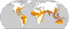
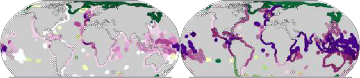
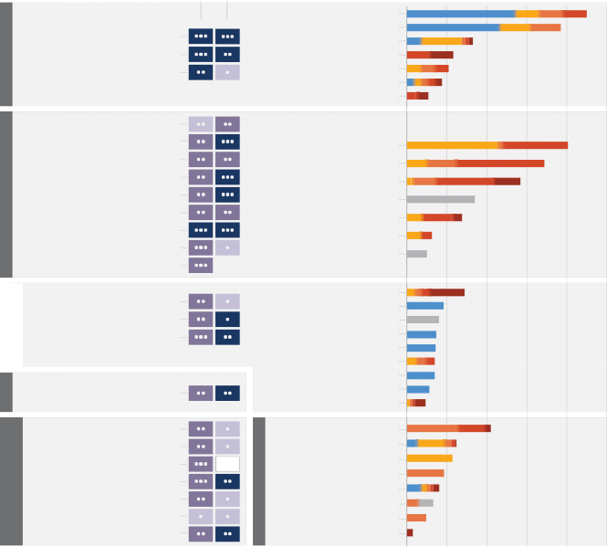

Climate Change 2023 Synthesis Report
These Sections should be cited as:
IPCC, 2023: Sections. In: Climate Change 2023: Synthesis Report. Contribution of Working Groups I, II and III to the Sixth Assessment Report of the Intergovernmental Panel on Climate Change [Core Writing Team, H. Lee and J. Romero (eds.)]. IPCC, Geneva, Switzerland, pp. 35-115, doi: 10.59327/IPCC/AR6-9789291691647
Section 1 Introduction
Section 1
1. Introduction
This Synthesis Report (SYR) of the IPCC Sixth Assessment Report (AR6) summarises the state of knowledge of climate change, its widespread impacts and risks, and climate change mitigation and adaptation, based on the peer-reviewed scientific, technical and socio-economic literature since the publication of the IPCCs Fifth Assessment Report (AR5) in 2014.
The assessment is undertaken within the context of the evolving international landscape, in particular, developments in the UN Framework Convention on Climate Change (UNFCCC) process, including the outcomes of the Kyoto Protocol and the adoption of the Paris Agreement. It reflects the increasing diversity of those involved in climate action.
This report integrates the main findings of the AR6 Working Group reports58 and the three AR6 Special Reports59. It recognizes the interdependence of climate, ecosystems and biodiversity, and human societies; the value of diverse forms of knowledge; and the close linkages between climate change adaptation, mitigation, ecosystem health, human well-being and sustainable development. Building on multiple analytical frameworks, including those from the physical and social sciences, this report identifies opportunities for transformative action which are effective, feasible, just and equitable using concepts of systems transitions and resilient development pathways60. Different regional classification schemes61 are used for physical, social and economic aspects, reflecting the underlying literature.
Section 1
After this introduction, Section 2, Current Status and Trends, opens with the assessment of observational evidence for our changing climate, historical and current drivers of human-induced climate change, and its impacts. It assesses the current implementation of adaptation and mitigation response options. Section 3, Long-Term Climate and Development Futures, provides a long-term assessment of climate change to 2100 and beyond in a broad range of socio-economic
futures. It considers long-term characteristics, impacts, risks and costs in adaptation and mitigation pathways in the context of sustainable development. Section 4, Near- Term Responses in a Changing Climate, assesses opportunities for scaling up effective action in the period up to 2040, in the context of climate pledges, and commitments, and the pursuit of sustainable development.
Based on scientific understanding, key findings can be formulated as statements of fact or associated with an assessed level of confidence using the IPCC calibrated language62. The scientific findings are drawn from the underlying reports and arise from their Summary for Policymakers (hereafter SPM), Technical Summary (hereafter TS), and underlying chapters and are indicated by {} brackets. Figure 1.1 shows the Synthesis Report Figures Key, a guide to visual icons that are used across multiple figures within this report.

58 The three Working Group contributions to AR6 are: Climate Change 2021: The Physical Science Basis; Climate Change 2022: Impacts, Adaptation and Vulnerability; and Climate Change 2022: Mitigation of Climate Change, respectively. Their assessments cover scientific literature accepted for publication respectively by 31 January 2021, 1 September 2021 and 11 October 2021.
59 The three Special Reports are : Global Warming of 1.5C (2018): an IPCC Special Report on the impacts of global warming of 1.5C above pre-industrial levels and related global greenhouse gas emission pathways, in the context of strengthening the global response to the threat of climate change, sustainable development, and efforts to eradicate poverty (SR1.5); Climate Change and Land (2019): an IPCC Special Report on climate change, desertification, land degradation, sustainable land management, food security, and greenhouse gas fluxes in terrestrial ecosystems (SRCCL); and The Ocean and Cryosphere in a Changing Climate (2019) (SROCC). The Special Reports cover scientific literature accepted for publication respectively by 15 May 2018, 7 April 2019 and 15 May 2019.
60 The Glossary (Annex I) includes definitions of these, and other terms and concepts used in this report drawn from the AR6 joint Working Group Glossary.
61 Depending on the climate information context, geographical regions in AR6 may refer to larger areas, such as sub-continents and oceanic regions, or to typological regions, such as monsoon regions, coastlines, mountain ranges or cities. A new set of standard AR6 WGI reference land and ocean regions have been defined. WGIII allocates countries to geographical regions, based on the UN Statistics Division Classification {WGI 1.4.5, WGI 10.1, WGI 11.9, WGI 12.112.4, WGI Atlas.1.3.31.3.4}.
62 Each finding is grounded in an evaluation of underlying evidence and agreement. A level of confidence is expressed using five qualifiers: very low, low, medium, high and very high, and typeset in italics, for example, medium confidence. The following terms have been used to indicate the assessed likelihood of an outcome or result: virtually certain 99100% probability; very likely 90100%; likely 66100%; more likely than not >50-100%; about as likely as not 3366%; unlikely 033%; very unlikely 010%; and exceptionally unlikely 01%. Additional terms (extremely likely 95100% and extremely unlikely 05%) are also used when appropriate. Assessed likelihood also is typeset in italics: for example, very likely. This is consistent with AR5. In this Report, unless stated otherwise, square brackets [x to y] are used to provide the assessed very likely range, or 90% interval.
38
Introduction
Synthesis Report figures key
Axis labels
GHG emissions
net zero
C Temperature Cost or budget
Net zero
these help non-experts navigate complex content
Italicized annotations
Simple explanations written in non-technical language
Section 1
Figure 1.1: The Synthesis Report figures key.
Section 2 Current Status and Trends
Section 2: Current Status and Trends
Observed Changes, Impacts and Attribution
Human activities, principally through emissions of greenhouse gases, have unequivocally caused global warming, with global surface temperature reaching 1.1C above 18501900 in 20112020. Global greenhouse gas emissions have continued to increase over 20102019, with unequal historical and ongoing contributions arising from unsustainable energy use, land use and land-use change, lifestyles and patterns of consumption and production across regions, between and within countries, and between individuals (high confidence). Human-caused climate change is already affecting many weather and climate extremes in every region across the globe. This has led to widespread adverse impacts on food and water security, human health and on economies and society and related losses and damages63 to nature and people (high confidence). Vulnerable communities who have historically contributed the least to current climate change are disproportionately affected (high confidence).
63 In this report, the term losses and damages refers to adverse observed impacts and/or projected risks and can be economic and/or non-economic. (See Annex I: Glossary)
Observed Warming and its Causes

Section 2
Global surface temperature was around 1.1C above 18501900 in 20112020 (1.09 [0.95 to 1.20]C)64, with larger increases over land (1.59 [1.34 to 1.83]C) than over the ocean (0.88 [0.68 to 1.01]C)65. Observed warming is human-caused, with warming from greenhouse gases (GHG), dominated by CO2 and methane (CH4), partly masked by aerosol cooling (Figure 2.1). Global surface temperature in the first two decades of the 21st century (20012020) was 0.99 [0.84 to 1.10]C higher than 18501900. Global surface temperature has increased faster since 1970 than in any other 50-year period over at least the last 2000 years (high confidence). The likely range of total human-caused global surface temperature increase from 18501900 to 2010201966 is 0.8C to 1.3C, with a best estimate of 1.07C. It is likely that well-mixed GHGs67 contributed a warming of 1.0C to 2.0C, and other human drivers (principally aerosols) contributed a cooling of 0.0C to 0.8C, natural (solar and volcanic) drivers changed global surface temperature by 0.1C and internal variability changed it by 0.2C. {WGI SPM A.1, WGI SPM A.1.2, WGI SPM A.1.3, WGI SPM A.2.2, WGI Figure SPM.2; SRCCL TS.2}
Observed increases in well-mixed GHG concentrations since around 1750 are unequivocally caused by GHG emissions from human activities. Land and ocean sinks have taken up a near-constant proportion (globally about 56% per year) of CO2 emissions from human activities over
the past six decades, with regional differences (high confidence). In 2019, atmospheric CO2 concentrations reached 410 parts per million (ppm), CH4 reached 1866 parts per billion (ppb) and nitrous oxide (N2O) reached 332 ppb68. Other major contributors to warming are tropospheric ozone (O3) and halogenated gases. Concentrations of CH4 and N2O have increased to levels unprecedented in at least 800,000 years (very high confidence), and there is high confidence that current CO2 concentrations are higher than at any time over at least the past two million years. Since 1750, increases in CO2 (47%) and CH4 (156%) concentrations far exceed and increases in N2O (23%) are similar to the natural multi-millennial changes between glacial and interglacial periods over at least the past 800,000 years (very high confidence). The net cooling effect which arises from anthropogenic aerosols peaked in the late 20th century (high confidence). {WGI SPM A1.1, WGI SPM A1.3, WGI SPM A.2.1, WGI Figure SPM.2, WGI TS 2.2, WGI 2ES, WGI Figure 6.1}

63 In this report, the term losses and damages refers to adverse observed impacts and/or projected risks and can be economic and/or non-economic. (See Annex I: Glossary)
64 The estimated increase in global surface temperature since AR5 is principally due to further warming since 20032012 (+0.19 [0.16 to 0.22]C). Additionally, methodological advances and new datasets have provided a more complete spatial representation of changes in surface temperature, including in the Arctic. These and other improvements have also increased the estimate of global surface temperature change by approximately 0.1C, but this increase does not represent additional physical warming since AR5
{WGI SPM A1.2 and footnote 10}
65 For 18501900 to 20132022 the updated calculations are 1.15 [1.00 to 1.25]C for global surface temperature, 1.65 [1.36 to 1.90]C for land temperatures and
0.93 [0.73 to 1.04]C for ocean temperatures above 18501900 using the exact same datasets (updated by 2 years) and methods as employed in WGI.
66 The period distinction with the observed assessment arises because the attribution studies consider this slightly earlier period. The observed warming to 20102019 is
1.06 [0.88 to 1.21]C. {WGI SPM footnote 11}
67 Contributions from emissions to the 20102019 warming relative to 18501900 assessed from radiative forcing studies are: CO2 0.8 [0.5 to 1.2]C; methane 0.5 [0.3 to 0.8]C; nitrous oxide 0.1 [0.0 to 0.2]C and fluorinated gases 0.1 [0.0 to 0.2]C.
68 For 2021 (the most recent year for which final numbers are available) concentrations using the same observational products and methods as in AR6 WGI are: 415 ppm CO2; 1896 ppb CH4; and 335 ppb N2O. Note that the CO2 is reported here using the WMO-CO2-X2007 scale to be consistent with WGI. Operational CO2 reporting has since been updated to use the WMO-CO2-X2019 scale.
Human activities are responsible for global warming
Changes in global surface temperature d) Humans are responsible
C 2.0
Global surface temperature has increased by
1.1C by 2011-2020 compared to 1850-1900
Observed warming is driven by emissions from human activities with GHG warming partly masked by aerosol cooling 20102019 (change from 18501900)
2.0 C
1.5 1.5
1.0
0.5 Observed
0.0
0.5
1.0
1850 1900 1950 2000 2020
1.0
0.2
warmest multi-century period in more than 100,000 years
1.0
0.5
Total human influence
Well-mixed GHG Other human drivers*
Solar and volcanic drivers
0.0
Internal variability
0.5
1.0
Key
b)
Observed warming
C 0 0.5 1 1.5

*Other human drivers are predominantly cooling aerosols, but also
Increased concentrations of GHGs in the atmosphere
400
350
300
1500
1000
500
400
200
Concentrations of GHGs have increased rapidly since 1850 (scaled to match their assessed contributions to warming over 18501900 to 20102019)
Parts per million (ppm)
Carbon dioxide
410 ppm CO2
Parts per billion (ppb)
Methane
1866 ppb CH4
Parts per billion (ppb) Nitrous oxide
332 ppb N2O
warming aerosols, land-use change (land-use reflectance) and ozone.
Section 2
Figure 2.1: The causal chain from emissions to resulting warming of the climate system. Emissions of GHG have increased rapidly over recent decades (panel (a)). Global net anthropogenic GHG emissions include CO2 from fossil fuel combustion and industrial processes (CO2-FFI) (dark green); net CO2 from land use, land-use change and forestry (CO2-LULUCF) (green); CH4; N2O; and fluorinated gases (HFCs, PFCs, SF6, NF3) (light blue). These emissions have led to increases in the atmospheric concentrations of several GHGs including the three major well-mixed GHGs CO2, CH4 and N2O (panel (b), annual values). To indicate their relative importance each subpanels vertical extent for CO2, CH4 and N2O is scaled to match the assessed individual direct effect (and, in the case of CH4 indirect effect via atmospheric chemistry impacts on tropospheric ozone) of historical emissions on temperature change from 18501900 to 20102019. This estimate arises from an assessment of effective radiative forcing and climate sensitivity. The global surface temperature (shown as annual anomalies from
1850 1900 1950 2000 2019
Greenhouse gas (GHG) emissions resulting from human activities continue to increase
a)
Increased emissions of greenhouse gases (GHGs)
60
GHG Emissions (GtCO2-eq/yr)
Non-CO2
emissions
45 CO2 from Land
Use, Land-Use Change and
30 Forestry
(LULUCF)
15 CO2 from
fossil fuels
and industry
0
1850
1900
1950
2000 2019
a 18501900 baseline) has increased by around 1.1C since 18501900 (panel (c)). The vertical bar on the right shows the estimated temperature (very likely range) during the warmest multi-century period in at least the last 100,000 years, which occurred around 6500 years ago during the current interglacial period (Holocene). Prior to that, the next most recent warm period was about 125,000 years ago, when the assessed multi-century temperature range [0.5C to 1.5C] overlaps the observations of the most recent decade. These past warm periods were caused by slow (multi-millennial) orbital variations. Formal detection and attribution studies synthesise information from climate models and observations and show that the best estimate is that all the warming observed between 18501900 and 20102019 is caused by humans (panel (d)). The panel shows temperature change attributed to: total human influence; its decomposition into changes in GHG concentrations and other human drivers (aerosols, ozone and land-use change (land-use reflectance)); solar and volcanic drivers; and internal climate variability. Whiskers show likely ranges.
{WGI SPM A.2.2, WGI Figure SPM.1, WGI Figure SPM.2, WGI TS2.2, WGI 2.1; WGIII Figure SPM.1, WGIII A.III.II.2.5.1}
Average annual GHG emissions during 20102019 were higher than in any previous decade, but the rate of growth between 2010 and 2019 (1.3% yr-1) was lower than that between 2000 and 2009 (2.1% yr-1)69. Historical cumulative net CO2 emissions from 1850 to 2019 were 2400 240 GtCO2. Of these, more than half (58%)
occurred between 1850 and 1989 [1400 195 GtCO2], and about 42%
between 1990 and 2019 [1000 90 GtCO2]. Global net anthropogenic GHG emissions have been estimated to be 596.6 GtCO2-eq in 2019, about 12% (6.5 GtCO2-eq) higher than in 2010 and 54% (21 GtCO2-eq) higher than in 1990. By 2019, the largest growth in gross emissions occurred in CO2 from fossil fuels and industry (CO2-FFI) followed by CH4, whereas the highest relative growth occurred in fluorinated gases (F-gases), starting from low levels in 1990. (high confidence)
{WGIII SPM B1.1, WGIII SPM B.1.2, WGIII SPM B.1.3, WGIII Figure SPM.1, WGIII Figure SPM.2}

Section 2
Regional contributions to global human-caused GHG emissions continue to differ widely. Historical contributions of CO2 emissions vary substantially across regions in terms of total magnitude, but also in terms of contributions to CO2-FFI (1650 73 GtCO2-eq) and net CO2-LULUCF (760 220 GtCO2-eq) emissions (Figure 2.2). Variations in regional and national per capita emissions partly reflect different development stages, but they also vary widely at similar income levels. Average per capita net anthropogenic GHG emissions in 2019 ranged from 2.6 tCO2-eq to 19 tCO2-eq across regions (Figure 2.2). Least Developed Countries (LDCs) and Small Island Developing States (SIDS) have much lower per capita emissions (1.7 tCO2-eq and 4.6 tCO2-eq, respectively) than the global average (6.9 tCO2-eq), excluding CO2-LULUCF. Around 48% of the global population in 2019 lives in countries emitting on average more than 6 tCO2-eq per capita, 35% of the global population live in countries emitting more than 9 tCO2-eq per capita70 (excluding CO2-LULUCF) while another 41% live in countries emitting less than 3 tCO2-eq per capita. A substantial share of the population in these low-emitting countries lack access to modern energy services. (high confidence)
{WGIII SPM B.3, WGIII SPM B3.1, WGIII SPM B.3.2, WGIII SPM B.3.3}
Net GHG emissions have increased since 2010 across all major sectors (high confidence). In 2019, approximately 34% (20 GtCO2-eq) of net global GHG emissions came from the energy sector, 24% (14 GtCO2-eq) from industry, 22% (13 GtCO2-eq) from AFOLU, 15% (8.7 GtCO2-eq) from transport and 6% (3.3 GtCO2-eq) from buildings71 (high confidence). Average annual GHG emissions growth between
2010 and 2019 slowed compared to the previous decade in energy supply (from 2.3% to 1.0%) and industry (from 3.4% to 1.4%) but remained roughly constant at about 2% yr1 in the transport sector (high confidence). About half of total net AFOLU emissions are from CO2 LULUCF, predominantly from deforestation (medium confidence). Land overall constituted a net sink of 6.6 (4.6) GtCO2 yr1 for the period 2010201972 (medium confidence). {WGIII SPM B.2, WGIII SPM B.2.1, WGIII SPM B.2.2, WGIII TS 5.6.1}
Human-caused climate change is a consequence of more than a century of net GHG emissions from energy use, land-use and land use change, lifestyle and patterns of consumption, and production. Emissions reductions in CO2 from fossil fuels and industrial processes (CO2-FFI), due to improvements in energy intensity of GDP and carbon intensity of energy, have been less than emissions increases from rising global activity levels in industry, energy supply, transport, agriculture and buildings. The 10% of households with the highest per capita emissions contribute 3445% of global consumption-based household GHG emissions, while the middle 40% contribute 4053%, and the bottom 50% contribute 1315%. An increasing share of emissions can be attributed to urban areas (a rise from about 62% to 6772% of the global share between 2015 and 2020). The drivers of urban GHG emissions73 are complex and include population size, income, state of urbanisation and urban form. (high confidence)
{WGIII SPM B.2, WGIII SPM B.2.3, WGIII SPM B.3.4, WGIII SPM D.1.1}

69 GHG emission metrics are used to express emissions of different GHGs in a common unit. Aggregated GHG emissions in this report are stated in CO2-equivalents (CO2-eq) using the Global Warming Potential with a time horizon of 100 years (GWP100) with values based on the contribution of Working Group I to the AR6. The AR6 WGI and WGIII reports contain updated emission metric values, evaluations of different metrics with regard to mitigation objectives, and assess new approaches to aggregating gases. The choice of metric depends on the purpose of the analysis and all GHG emission metrics have limitations and uncertainties, given that they simplify the complexity of the physical climate system and its response to past and future GHG emissions. {WGI SPM D.1.8, WGI 7.6; WGIII SPM B.1, WGIII Cross-Chapter Box 2.2} (Annex I: Glossary)
70 Territorial emissions
71 GHG emission levels are rounded to two significant digits; as a consequence, small differences in sums due to rounding may occur. {WGIII SPM footnote 8}
72 Comprising a gross sink of -12.5 (3.2) GtCO2 yr-1 resulting from responses of all land to both anthropogenic environmental change and natural climate variability, and net anthropogenic CO2-LULUCF emissions +5.9 (4.1) GtCO2 yr-1 based on book-keeping models. {WGIII SPM Footnote 14}
73 This estimate is based on consumption-based accounting, including both direct emissions from within urban areas, and indirect emissions from outside urban areas related to the production of electricity, goods and services consumed in cities. These estimates include all CO2 and CH4 emission categories except for aviation and marine bunker fuels, land-use change, forestry and agriculture. {WGIII SPM footnote 15}
Emissions have grown in most regions but are distributed unevenly, both in the present day and cumulatively since 1850
c) Global net anthropogenic GHG emissions by region (19902019)
GHG
60
50
Total:
38 GtCO2-eq
2%
42 GtCO2-eq
2%
5%
3%
30 14%
16%
20 7%
7%
10%
10 18%
5%
7%
4%
8%
13%
8%
8%
7%
11%
19%
53 GtCO2-eq
2%
4%
5%
7%
10%
8%
8%
7%
11%
2%
3%
5%
6%
8%
8%
9%
9%
10%
59 GtCO2-eq
International shipping and aviation Australia, Japan and New Zealand Middle East
Eastern Europe and West-Central Asia Europe
Southern Asia Africa
South-East Asia and Pacific
Latin America and Caribbean
14%
12% North America
24%
27% Eastern Asia
16%
0
13%
1990
2000
2010
2019
CO2
North America Europe
Eastern Asia
Latin America and Caribbean
600 23%
400 16%
12% 11%
Eastern Europe and West-Central Asia South-East Asia and Pacific
Africa
Australia, Japan and New Zealand Southern Asia
10%
200 8% 7%
Middle East
International shipping and aviation
4% 4%
2% 2%
0
GHG
20
15
10
North America
Australia, Japan and New Zealand Eastern Europe and West-Central Asia
Middle East
Eastern Asia
Latin America and Caribbean Europe
South-East Asia and Pacific
5
Africa
Southern Asia
0
0
2000
4000
Population (millions)
6000
8000
Key
Timeframes represented in these graphs
1850
1990
2019
Net CO2 from land use, land use change, forestry (CO2LULUCF) Other GHG emissions
Fossil fuel and industry (CO2FFI) All GHG emissions
CO2 emissions (GtCO2)
/ GHG emissions (tCO2-eq per capita)
Historical cumulative net anthropogenic CO2 emissions per region (18502019)
Net anthropogenic GHG emissions per capita and for total population, per region (2019)

Section 2
GHG emissions per year (GtCO2-eq/yr)
Regional indicators (2019) and regional production vs consumption accounting (2018)
Africa | Australia, Japan, New Zealand | Eastern Asia | Eastern Europe, West- Central Asia | Europe | Latin America and Caribbean | Middle East | North America | South-East Asia and Pacific | Southern Asia | |
Population (million persons, 2019) | 1292 | 157 | 1471 | 291 | 620 | 646 | 252 | 366 | 674 | 1836 |
GDP per capita (USD1000PPP 2017 per person) 1 | 5.0 | 43 | 17 | 20 | 43 | 15 | 20 | 61 | 12 | 6.2 |
Net GHG 2019 2 (production basis) | ||||||||||
GHG emissions intensity (tCO2-eq / USD1000PPP 2017) | 0.78 | 0.30 | 0.62 | 0.64 | 0.18 | 0.61 | 0.64 | 0.31 | 0.65 | 0.42 |
GHG per capita (tCO2-eq per person) | 3.9 | 13 | 11 | 13 | 7.8 | 9.2 | 13 | 19 | 7.9 | 2.6 |
CO2FFI, 2018, per person | ||||||||||
Production-based emissions (tCO2FFI per person, based on 2018 data) | 1.2 | 10 | 8.4 | 9.2 | 6.5 | 2.8 | 8.7 | 16 | 2.6 | 1.6 |
Consumption-based emissions (tCO2FFI per person, based on 2018 data) | 0.84 | 11 | 6.7 | 6.2 | 7.8 | 2.8 | 7.6 | 17 | 2.5 | 1.5 |
1 GDP per capita in 2019 in USD2017 currency purchasing power basis.
2 Includes CO2FFI, CO2LULUCF and Other GHGs, excluding international aviation and shipping.
The regional groupings used in this figure are for statistical purposes only and are described in WGIII Annex II, Part I.
Figure 2.2: Regional GHG emissions, and the regional proportion of total cumulative production-based CO2 emissions from 1850 to 2019. Panel (a) shows the share of historical cumulative net anthropogenic CO2 emissions per region from 1850 to 2019 in GtCO2. This includes CO2-FFI and CO2-LULUCF. Other GHG emissions are not included. CO2-LULUCF emissions are subject to high uncertainties, reflected by a global uncertainty estimate of 70% (90% confidence interval). Panel (b) shows the distribution of regional GHG emissions in tonnes CO2-eq per capita by region in 2019. GHG emissions are categorised into: CO2-FFI; net CO2-LULUCF; and other GHG emissions (CH4, N2O, fluorinated gases, expressed in CO2-eq using GWP100-AR6). The height of each rectangle shows per capita emissions, the width shows the population of the region, so that the area of the rectangles refers to the total emissions for each region. Emissions from international aviation and shipping are not included. In the case of two regions, the area for CO2-LULUCF is below the axis, indicating net CO2 removals rather than emissions. Panel (c) shows global net anthropogenic GHG emissions by region (in GtCO2-eq yr1 (GWP100-AR6)) for the time period 19902019. Percentage values refer to the contribution of each region to total GHG emissions in each respective time period. The single-year peak of emissions in 1997 was due to higher CO2-LULUCF emissions from a forest and peat fire event in South East Asia. Regions are as grouped in Annex II of WGIII. Panel (d) shows population, gross domestic product (GDP) per person, emission indicators by region in 2019 for total GHG per person, and total GHG emissions intensity, together with production-based and consumption-based CO2-FFI data, which is assessed in this report up to 2018. Consumption-based emissions are emissions released to the atmosphere in order to generate the goods and services consumed by a certain entity (e.g., region). Emissions from international aviation and shipping are not included. {WGIII Figure SPM.2}
Observed Climate System Changes and Impacts to Date

Section 2
It is unequivocal that human influence has warmed the atmosphere, ocean and land. Widespread and rapid changes in the atmosphere, ocean, cryosphere and biosphere have occurred (Table 2.1). The scale of recent changes across the climate system as a whole and the present state of many aspects of the climate system are unprecedented over many centuries to many thousands of years. It is very likely that GHG emissions were the main driver74 of tropospheric warming and extremely likely that human-caused stratospheric ozone depletion was the main driver of stratospheric cooling between 1979 and the mid-1990s. It is virtually certain that the global upper ocean (0-700m) has warmed since the 1970s and extremely likely that human influence is the main driver. Ocean warming accounted for 91% of the heating in the climate system, with land warming, ice loss and atmospheric warming accounting for about 5%, 3% and 1%, respectively (high confidence). Global mean sea level increased by 0.20 [0.15 to 0.25] m between 1901 and 2018. The average rate of sea level rise was 1.3 [0.6 to 2.1]mm yr-1 between 1901 and 1971, increasing to
1.9 [0.8 to 2.9] mm yr-1 between 1971 and 2006, and further increasing
to 3.7 [3.2 to 4.2] mm yr-1 between 2006 and 2018 (high confidence). Human influence was very likely the main driver of these increases since at least 1971 (Figure 3.4). Human influence is very likely the main driver of the global retreat of glaciers since the 1990s and the decrease in Arctic sea ice area between 19791988 and 20102019. Human influence has also very likely contributed to decreased Northern Hemisphere spring snow cover and surface melting of the Greenland ice sheet. It is virtually certain that human-caused CO2 emissions are the main driver of current global acidification of the surface open ocean. {WGI SPM A.1, WGI SPM A.1.3, WGI SPM A.1.5, WGI SPM A.1.6, WG1 SPM A1.7, WGI SPM A.2, WG1.SPM A.4.2; SROCC SPM.A.1, SROCC SPM A.2}
Human-caused climate change is already affecting many weather and climate extremes in every region across the globe. Evidence of observed changes in extremes such as heatwaves, heavy precipitation, droughts, and tropical cyclones, and, in particular, their attribution to human influence, has strengthened since AR5 (Figure 2.3). It is virtually certain that hot extremes (including heatwaves) have become more frequent and more intense across most land regions since the 1950s (Figure 2.3), while cold extremes (including cold waves) have become less frequent and less severe, with high confidence that human-caused climate change is the main driver of these changes. Marine heatwaves have approximately doubled
in frequency since the 1980s (high confidence), and human influence has very likely contributed to most of them since at least 2006. The frequency and intensity of heavy precipitation events have increased since the 1950s over most land areas for which observational data are sufficient for trend analysis (high confidence), and human-caused climate change is likely the main driver (Figure 2.3). Human-caused climate change has contributed to increases in agricultural and ecological droughts in some regions due to increased land evapotranspiration (medium confidence) (Figure 2.3). It is likely that the global proportion of major (Category 35) tropical cyclone occurrence has increased over the last four decades. {WGI SPM A.3, WGI SPM A3.1, WGI SPM A3.2; WGI SPM A3.4; SRCCL SPM.A.2.2; SROCC SPM. A.2}
Climate change has caused substantial damages, and increasingly irreversible75 losses, in terrestrial, freshwater, cryospheric and coastal and open ocean ecosystems (high confidence). The extent and magnitude of climate change impacts are larger than estimated in previous assessments (high confidence). Approximately half of the species assessed globally have shifted polewards or, on land, also to higher elevations (very high confidence). Biological responses including changes in geographic placement and shifting seasonal timing are often not sufficient to cope with recent climate change (very high confidence). Hundreds of local losses of species have been driven by increases in the magnitude of heat extremes (high confidence) and mass mortality events on land and in the ocean (very high confidence). Impacts on some ecosystems are approaching irreversibility such as the impacts of hydrological changes resulting from the retreat of glaciers, or the changes in some mountain (medium confidence) and Arctic ecosystems driven by permafrost thaw (high confidence). Impacts in ecosystems from slow-onset processes such as ocean acidification, sea level rise or regional decreases in precipitation have also been attributed to human-caused climate change (high confidence). Climate change has contributed to desertification and exacerbated land degradation, particularly in low lying coastal areas, river deltas, drylands and in permafrost areas (high confidence). Nearly 50% of coastal wetlands have been lost over the last 100 years, as a result of the combined effects of localised human pressures, sea level rise, warming and extreme climate events (high confidence). {WGII SPM B.1.1, WGII SPM B.1.2, WGII Figure SPM.2.A, WGII TS.B.1; SRCCL SPM A.1.5, SRCCL SPM A.2, SRCCL SPM A.2.6, SRCCL Figure SPM.1; SROCC SPM A.6.1, SROCC SPM, A.6.4, SROCC SPM A.7}

74 Main driver means responsible for more than 50% of the change. {WGI SPM footnote 12}
75 See Annex I: Glossary.
Table 2.1: Assessment of observed changes in large-scale indicators of mean climate across climate system components, and their attribution to human influence. The colour coding indicates the assessed confidence in / likelihood76 of the observed change and the human contribution as a driver or main driver (specified in that case) where available (see colour key). Otherwise, explanatory text is provided. {WGI Table TS.1}
Change in indicator
Observed change assessment
Human contribution assessment
Atmosphere and water cycle Warming of global mean surface air temperature since 1850-1900 Warming of the troposphere since 1979 Cooling of the lower stratosphere since the mid-20th century Large-scale precipitation and upper troposphere humidity changes since 1979 Expansion of the zonal mean Hadley Circulation since the 1980s | likely range of human contribution ([0.8-1.3C]) encompasses the very likely range of observed warming ([0.9-1.2C]) | |
Main driver | ||
Main driver 1979 - mid-1990s | ||
Southern Hemisphere | ||
Ocean Ocean heat content increase since the 1970s Salinity changes since the mid-20th century Global mean sea level rise since 1970 | Main driver | |
Main driver | ||
Cryosphere Arctic sea ice loss since 1979 Reduction in Northern Hemisphere springtime snow cover since 1950 Greenland ice sheet mass loss since 1990s Antarctic ice sheet mass loss since 1990s
Retreat of glaciers | Main driver | |
Limited evidence & medium agreement | ||
Main driver | ||
Carbon cycle Increased amplitude of the seasonal cycle of atmospheric CO2 since the early 1960s Acidification of the global surface ocean | Main driver | |
Main driver | ||
Land climate Mean surface air temperature over land (about 40% larger than global mean warming) | Main driver | |
Synthesis Warming of the global climate system since preindustrial times | ||

Section 2
Key
medium confidence
likely / high confidence
very likely extremely
likely
virtually certain
fact

76 Based on scientific understanding, key findings can be formulated as statements of fact or associated with an assessed level of confidence indicated using the IPCC calibrated language.
Climate change has impacted human and natural systems across the world with those who have generally least contributed to climate change being most vulnerable

IPCC AR6 WGI reference regions:
North America: NWN (North-Western North America, NEN (North-Eastern North America), WNA (Western North America), CNA (Central North America), ENA (Eastern North America), Central America: NCA (Northern Central America), SCA (Southern Central America), CAR (Caribbean), South America: NWS (North-Western South America), NSA (Northern South America), NES (North-Eastern South America), SAM (South American Monsoon), SWS
(South-Western South America), SES (South-Eastern South America), SSA (Southern South America), Europe: GIC
(Greenland/Iceland), NEU (Northern Europe), WCE (Western and Central Europe), EEU (Eastern Europe), MED (Mediterranean), Africa: MED (Mediterranean), SAH (Sahara), WAF (Western Africa), CAF (Central Africa), NEAF (North Eastern Africa), SEAF (South Eastern Africa), WSAF (West Southern Africa), ESAF (East Southern Africa), MDG (Madagascar), Asia: RAR (Russian Arctic), WSB (West Siberia), ESB (East Siberia), RFE (Russian Far East), WCA (West Central Asia), ECA (East Central Asia), TIB (Tibetan Plateau), EAS (East Asia), ARP (Arabian Peninsula), SAS (South Asia), SEA (South East Asia), Australasia: NAU (Northern Australia), CAU (Central Australia), EAU (Eastern Australia), SAU (Southern Australia), NZ (New Zealand), Small Islands: CAR (Caribbean), PAC (Pacific Small Islands)
North-Western North America
NWN
Key
Type of observed change since the 1950s
Increase Decrease
Limited data and/or literature
Low agreement in the type of change
Confidence in human contribution
to the observed change
High Medium
Low due to limited agreement Low due to limited evidence
Each hexagon corresponds to a region
Hazard
Dimension of Risk:
Hot extremes including heatwaves
North
America
NWN NEN
GIC
Europe
NEU
RAR
WNA CNA ENA
WCE EEU WSB ESB RFE Asia
NCA
MED WCA ECA TIB EAS
Central America
SCA
CAR
Small Islands
SAH ARP
SAS
SEA
PAC
NWS NSA
WAF CAF NEAF
NAU
SAM NES
WSAF SEAF
MDG
CAU EAU
Small Islands
South America
SWS SES
Africa
ESAF
Australasia
SAU
NZ
SSA
Heavy precipitation
North
America
NWN NEN
GIC
Europe
NEU
RAR
WNA CNA ENA
WCE EEU WSB ESB RFE Asia
NCA
MED WCA ECA TIB EAS
Central America
SCA
CAR
Small Islands
SAH ARP
SAS
SEA
PAC
NWS NSA
WAF CAF NEAF
NAU
SAM NES
WSAF SEAF
MDG
CAU EAU
Small Islands
South America
SWS SES
Africa
ESAF
Australasia
SAU
NZ
SSA
RAR
WCE EEU WSB ESB RFE Asia
MED WCA ECA TIB EAS
SAH ARP
SAS
SEA
PAC
F CAF NEAF
NAU
WSAF SEAF
MDG
CAU EAU
Small Islands
ESAF
Australasia
SAU
NZ
WA
NEU
North America
NWN NEN
GIC
Europe
WNA CNA ENA
NCA
Central America
SCA
CAR
Small Islands
NWS NSA
SAM NES
South America
SWS SES
Africa
SSA
Agricultural and ecological drought
Section 2
a) Synthesis of assessment of observed change in hot extremes, heavy precipitation and drought, and confidence in human contribution to the observed changes in the worlds regions

b) Vulnerability of population & per capita emissions per country in 2019
high 100
90
Dimension of Risk:
Vulnerability
80
70
60
more vulnerable
countries generally
have lower emissions
per capita
50
40
30
20
10
low 0
0
10
20
30
40
70
80
/ 2019 emissions per capita of 180 nations in tons of CO2
Vulnerability assessed on national data. Vulnerability differs between and within countries and is exacerbated by inequity and marginalisation.


Dimension of Risk:
Key
Impact
Increased climate impacts
HUMAN SYSTEMS
Adverse impacts
Adverse and positive impacts
ECOSYSTEMS
Climate-driven changes observed, no assessment of impact direction
Confidence in attribution to climate change
High or very high Medium
Low
Evidence limited, insufficient Not assessed
Section 2
Relative average national vulnerability per capita by global indices INFORM and WRI (2019)
Africa
Asia


Australasia

Central & South America
Europe
North America
Small Islands
Global | |||||||||
ECOSYSTEMS HUMAN SYSTEMS | Water availability Physical water availability and food production Agriculture/crop production Animal and livestock health and productivity Fisheries yields and aquaculture production |
|
| ||||||
|
| ||||||||
| |||||||||
| |||||||||
Health and wellbeing Infectious diseases |
|
|
|
| |||||
Heat, malnutrition and harm from wildfire |
|
|
|
|
|
|
| ||
Mental health |
|
|
| ||||||
Displacement |
|
|
| ||||||
Cities, settlements Inland flooding and and infrastructure associated damages Flood/storm induced damages in coastal areas Damages to infrastructure Damages to key economic sectors |
|
| |||||||
|
|
|
|
|
|
| |||
Changes in Terrestrial ecosystem structure Freshwater Ocean |
|
|
|
|
|
| |||
|
|
|
|
|
| ||||
|
|
|
|
|
|
|
| ||
Species range shifts Terrestrial |
|
|
|
|
|
|
| ||
Freshwater |
|
|
|
|
|
| |||
Ocean |
|
|
|
|
|
| |||
Changes in seasonal Terrestrial timing (phenology) Freshwater Ocean |
|
|
| ||||||
|
| ||||||||
|
|
|
| ||||||
Observed impacts and related losses and damages of climate change
Figure 2.3: Both vulnerability to current climate extremes and historical contribution to climate change are highly heterogeneous with many of those who have least contributed to climate change to date being most vulnerable to its impacts. Panel (a) The IPCC AR6 WGI inhabited regions are displayed as hexagons with identical size in their approximate geographical location (see legend for regional acronyms). All assessments are made for each region as a whole and for the 1950s to the present. Assessments made on different time scales or more local spatial scales might differ from what is shown in the figure. The colours in each panel represent the four outcomes of the assessment on observed changes. Striped hexagons (white and light-grey) are used where there is low agreement in the type of change for the region as a whole, and grey hexagons are used when there is limited data and/or literature that prevents an assessment of the region as a whole. Other colours indicate at least medium confidence in the observed change. The confidence level for the human influence on these observed changes is based on assessing trend detection and attribution and event attribution literature, and it is indicated by the number of dots: three dots for high confidence, two dots for medium confidence and one dot for low confidence (single, filled dot: limited agreement; single, empty dot: limited evidence). For hot extremes, the evidence is mostly drawn from changes in metrics based on daily maximum temperatures; regional studies using other indices (heatwave duration, frequency and intensity) are used in addition. For heavy precipitation, the evidence is mostly drawn from changes in indices based on one-day or five-day precipitation amounts using global and regional studies. Agricultural and ecological droughts are assessed based on observed and simulated changes in total column soil moisture, complemented by evidence on changes in surface soil moisture, water balance (precipitation minus evapotranspiration) and indices driven by precipitation and atmospheric evaporative demand. Panel (b) shows the average level of vulnerability amongst a countrys population against 2019 CO2-FFI emissions per- capita per country for the 180 countries for which both sets of metrics are available. Vulnerability information is based on two global indicator systems, namely INFORM and World Risk Index. Countries with a relatively low average vulnerability often have groups with high vulnerability within their population and vice versa. The underlying data includes, for example, information on poverty, inequality, health care infrastructure or insurance coverage. Panel (c) Observed impacts on ecosystems and human systems attributed to climate change at global and regional scales. Global assessments focus on large studies, multi-species, meta-analyses and large reviews. Regional assessments consider evidence on impacts across an entire region and do not focus on any country in particular. For human systems, the direction of impacts is assessed and both adverse and positive impacts have been observed e.g., adverse impacts in one area or food item may occur with positive impacts in another area or food item (for more details and methodology see WGII SMTS.1). Physical water availability includes balance of water available from various sources including ground water, water quality and demand for water. Global mental health and displacement assessments reflect only assessed regions. Confidence levels reflect the assessment of attribution of the observed impact to climate change.
{WGI Figure SPM.3, Table TS.5, Interactive Atlas; WGII Figure SPM.2, WGII SMTS.1, WGII 8.3.1, Figure 8.5; ; WGIII 2.2.3}

Section 2
Climate change has reduced food security and affected water security due to warming, changing precipitation patterns, reduction and loss of cryospheric elements, and greater frequency and intensity of climatic extremes, thereby hindering efforts to meet Sustainable Development Goals (high confidence). Although overall agricultural productivity has increased, climate change has slowed this growth in agricultural productivity over the past 50 years globally (medium confidence), with related negative crop yield impacts mainly recorded in mid- and low latitude regions, and some positive impacts in some high latitude regions (high confidence). Ocean warming in the 20th century and beyond has contributed to an overall decrease in maximum catch potential (medium confidence), compounding the impacts from overfishing for some fish stocks (high confidence). Ocean warming and ocean acidification have adversely affected food production from shellfish aquaculture and fisheries in some oceanic regions (high confidence). Current levels of global warming are associated with moderate risks from increased dryland water scarcity (high confidence). Roughly half of the worlds population currently experiences severe water scarcity for at least some part of the year due to a combination of climatic and non-climatic drivers (medium confidence) (Figure 2.3). Unsustainable agricultural expansion, driven in part by unbalanced diets77, increases ecosystem and human vulnerability and leads to competition for land and/or water resources (high confidence). Increasing weather and climate extreme events have exposed millions of people to acute food insecurity78 and reduced water security, with the largest impacts observed in many locations and/or communities in Africa, Asia, Central and South America, LDCs, Small Islands and the Arctic, and for small-scale food producers, low-income households and Indigenous Peoples globally (high confidence).
{WGII SPM B.1.3, WGII SPM.B.2.3, WGII Figure SPM.2, WGII TS B.2.3, WGII TS Figure TS. 6; SRCCL SPM A.2.8, SRCCL SPM A.5.3; SROCC SPM A.5.4., SROCC SPM A.7.1, SROCC SPM A.8.1, SROCC Figure SPM.2}
In urban settings, climate change has caused adverse impacts on human health, livelihoods and key infrastructure (high confidence). Hot extremes including heatwaves have intensified in cities (high confidence), where they have also worsened air pollution events (medium confidence) and limited functioning of key infrastructure (high confidence). Urban infrastructure, including transportation, water, sanitation and energy systems have been compromised by extreme and slow-onset events79, with resulting economic losses, disruptions of services and impacts to well-being (high confidence). Observed impacts are concentrated amongst economically and socially marginalised urban residents, e.g., those living in informal settlements (high confidence). Cities intensify human-caused warming locally (very high confidence), while urbanisation also increases mean and heavy precipitation over and/or downwind of cities (medium confidence) and resulting runoff intensity (high confidence). {WGI SPM C.2.6; WGII SPM B.1.5, WGII Figure TS.9, WGII 6 ES}
Climate change has adversely affected human physical health globally and mental health in assessed regions (very high confidence), and is contributing to humanitarian crises where climate hazards interact with high vulnerability (high confidence). In all regions increases in extreme heat events have resulted in human mortality and morbidity (very high confidence). The occurrence of climate-related food-borne and water-borne diseases has increased (very high confidence). The incidence of vector-borne diseases has increased from range expansion and/or increased reproduction of disease vectors (high confidence). Animal and human diseases, including zoonoses, are emerging in new areas (high confidence). In assessed regions, some mental health challenges are associated with increasing temperatures (high confidence), trauma from extreme events (very high confidence), and loss of livelihoods and culture

77 Balanced diets feature plant-based foods, such as those based on coarse grains, legumes fruits and vegetables, nuts and seeds, and animal-source foods produced in resilient, sustainable and low-GHG emissions systems, as described in SRCCL. {WGII SPM Footnote 32}
78 Acute food insecurity can occur at any time with a severity that threatens lives, livelihoods or both, regardless of the causes, context or duration, as a result of shocks risking determinants of food security and nutrition, and is used to assess the need for humanitarian action. {WGII SPM, footnote 30}
79 Slow-onset events are described among the climatic-impact drivers of the AR6 WGI and refer to the risks and impacts associated with e.g., increasing temperature means, desertification, decreasing precipitation, loss of biodiversity, land and forest degradation, glacial retreat and related impacts, ocean acidification, sea level rise and salinization.
{WGII SPM footnote 29}
(high confidence) (Figure 2.3). Climate change impacts on health are mediated through natural and human systems, including economic and social conditions and disruptions (high confidence). Climate and weather extremes are increasingly driving displacement in Africa, Asia, North America (high confidence), and Central and South America (medium confidence) (Figure 2.3), with small island states in the Caribbean and South Pacific being disproportionately affected relative to their small population size (high confidence). Through displacement and involuntary migration from extreme weather and climate events, climate change has generated and perpetuated vulnerability (medium confidence). {WGII SPM B.1.4, WGII SPM B.1.7}
Human influence has likely increased the chance of compound extreme events80 since the 1950s. Concurrent and repeated climate hazards have occurred in all regions, increasing impacts and risks to health, ecosystems, infrastructure, livelihoods and food (high confidence). Compound extreme events include increases in the frequency of concurrent heatwaves and droughts (high confidence); fire weather in some regions (medium confidence); and compound flooding in some locations (medium confidence). Multiple risks interact, generating new sources of vulnerability to climate hazards, and compounding overall risk (high confidence). Compound climate hazards can overwhelm adaptive capacity and substantially increase damage (high confidence)).
{WGI SPM A.3.5; WGII SPM. B.5.1, WGII TS.C.11.3}
Economic impacts attributable to climate change are increasingly affecting peoples livelihoods and are causing economic and societal impacts across national boundaries (high confidence). Economic damages from climate change have been detected in climate-exposed sectors, with regional effects to agriculture, forestry, fishery, energy, and tourism, and through outdoor labour productivity (high confidence) with some exceptions of positive impacts in regions with low energy demand and comparative advantages in agricultural markets and tourism (high confidence). Individual livelihoods have been affected through changes in agricultural productivity, impacts on human health and food security, destruction of homes and infrastructure, and loss of property and income, with adverse effects on gender and social equity (high confidence). Tropical cyclones have reduced economic growth in the short-term (high confidence). Event attribution studies and physical understanding indicate that human-caused climate change increases heavy precipitation associated with tropical cyclones (high confidence). Wildfires in many regions have affected built assets, economic activity, and health (medium to high confidence). In cities and settlements, climate impacts to key infrastructure are leading to losses and damages across water and food systems, and affect economic activity, with impacts extending beyond the area directly impacted by the climate hazard (high confidence).
{WGI SPM A.3.4; WGII SPM B.1.6, WGII SPM B.5.2, WGII SPM B.5.3}
Climate change has caused widespread adverse impacts and related losses and damages to nature and people (high confidence). Losses and damages are unequally distributed across systems, regions and sectors (high confidence). Cultural losses, related
to tangible and intangible heritage, threaten adaptive capacity and may result in irrevocable losses of sense of belonging, valued cultural practices, identity and home, particularly for Indigenous Peoples and those more directly reliant on the environment for subsistence (medium confidence). For example, changes in snow cover, lake and river ice, and permafrost in many Arctic regions, are harming the livelihoods and cultural identity of Arctic residents including Indigenous populations (high confidence). Infrastructure, including transportation, water, sanitation and energy systems have been compromised by extreme and slow-onset events, with resulting economic losses, disruptions of services and impacts to well-being (high confidence). {WGII SPM B.1, WGII SPM B.1.2, WGII SPM.B.1.5, WGII SPM C.3.5, WGII TS.B.1.6; SROCC SPM A.7.1}

Section 2
Across sectors and regions, the most vulnerable people and systems have been disproportionately affected by the impacts of climate change (high confidence). LDCs and SIDS who have much lower per capita emissions (1.7 tCO2-eq, 4.6 tCO2-eq, respectively) than the global average (6.9 tCO2-eq) excluding CO2-LULUCF, also have high vulnerability to climatic hazards, with global hotspots of high human vulnerability observed in West-, Central- and East Africa, South Asia, Central and South America, SIDS and the Arctic (high confidence). Regions and people with considerable development constraints have high vulnerability to climatic hazards (high confidence). Vulnerability is higher in locations with poverty, governance challenges and limited access to basic services and resources, violent conflict and high levels of climate-sensitive livelihoods (e.g., smallholder farmers, pastoralists, fishing communities) (high confidence). Vulnerability at different spatial levels is exacerbated by inequity and marginalisation linked to gender, ethnicity, low income or combinations thereof (high confidence), especially for many Indigenous Peoples and local communities (high confidence). Approximately 3.3 to 3.6 billion people live in contexts that are highly vulnerable to climate change (high confidence). Between 2010 and 2020, human mortality from floods, droughts and storms was 15 times higher in highly vulnerable regions, compared to regions with very low vulnerability (high confidence). In the Arctic and in some high mountain regions, negative impacts of cryosphere change have been especially felt among Indigenous Peoples (high confidence). Human and ecosystem vulnerability are interdependent (high confidence). Vulnerability of ecosystems and people to climate change differs substantially among and within regions (very high confidence), driven by patterns of intersecting socio-economic development, unsustainable ocean and land use, inequity, marginalisation, historical and ongoing patterns of inequity such as colonialism, and governance81 (high confidence). {WGII SPM B.1, WGII SPM B.2, WGII SPM B.2.4; WGIII SPM B.3.1; SROCC SPM A.7.1, SROCC SPM A.7.2}

80 See Annex 1: Glossary.
81 Governance: The structures, processes and actions through which private and public actors interact to address societal goals. This includes formal and informal institutions and the associated norms, rules, laws and procedures for deciding, managing, implementing and monitoring policies and measures at any geographic or political scale, from global to local. {WGII SPM Footnote 31}
Responses Undertaken to Date
International climate agreements, rising national ambitions for climate action, along with rising public awareness are accelerating efforts to address climate change at multiple levels of governance. Mitigation policies have contributed to a decrease in global energy and carbon intensity, with several countries achieving GHG emission reductions for over a decade. Low-emission technologies are becoming more affordable, with many low or zero emissions options now available for energy, buildings, transport, and industry. Adaptation planning and implementation progress has generated multiple benefits, with effective adaptation options having the potential to reduce climate risks and contribute to sustainable development. Global tracked finance for mitigation and adaptation has seen an upward trend since AR5, but falls short of needs. (high confidence)
Global Policy Setting

The United Nations Framework Convention on Climate Change (UNFCCC), Kyoto Protocol, and Paris Agreement are supporting rising levels of national ambition and encouraging the development and implementation of climate policies at multiple levels of governance (high confidence). The Kyoto Protocol led to reduced emissions in some countries and was instrumental in building national and international capacity for GHG reporting, accounting and emissions markets (high confidence). The Paris Agreement, adopted under the UNFCCC, with near universal participation, has led to policy development and target-setting at national and sub-national levels, particularly in relation to mitigation but also for adaptation, as well as enhanced transparency of climate action and support (medium confidence). Nationally Determined Contributions (NDCs), required under the Paris Agreement, have required countries to articulate their priorities and ambition with respect to climate action. {WGII 17.4, WGII TS D.1.1; WGIII SPM B.5.1, WGIII SPM E.6}
Section 2
Loss & Damage82 was formally recognized in 2013 through establishment of the Warsaw International Mechanism on Loss and Damage (WIM), and in 2015, Article 8 of the Paris Agreement provided a legal basis for the WIM. There is improved understanding of both economic and non-economic losses and damages, which is informing international climate policy and which has highlighted that losses and damages are not comprehensively addressed by current financial, governance and institutional arrangements, particularly in vulnerable developing countries (high confidence). {WGII SPM C.3.5, WGII Cross-Chapter Box LOSS}
Other recent global agreements that influence responses to climate change include the Sendai Framework for Disaster Risk Reduction (2015-2030), the finance-oriented Addis Ababa Action Agenda (2015) and the New Urban Agenda (2016), and the Kigali Amendment to the Montreal Protocol on Substances that Deplete the Ozone Layer (2016), among others. In addition, the 2030 Agenda for Sustainable Development, adopted in 2015 by UN member states, sets out 17 Sustainable Development Goals (SDGs) and seeks to align efforts globally to prioritise ending extreme poverty, protect the planet and promote more peaceful, prosperous and inclusive societies. If achieved, these agreements would reduce climate change, and the impacts on health, well-being, migration, and conflict, among others (very high confidence). {WGII TS.A.1, WGII 7 ES}
Since AR5, rising public awareness and an increasing diversity of actors, have overall helped accelerate political commitment and global efforts to address climate change (medium
confidence). Mass social movements have emerged as catalysing agents in some regions, often building on prior movements including Indigenous Peoples-led movements, youth movements, human rights movements, gender activism, and climate litigation, which is raising awareness and, in some cases, has influenced the outcome and ambition of climate governance (medium confidence). Engaging Indigenous Peoples and local communities using just-transition and rights-based decision-making approaches, implemented through collective and participatory decision-making processes has enabled deeper ambition and accelerated action in different ways, and at all scales, depending on national circumstances (medium confidence). The media helps shape the public discourse about climate change. This can usefully build public support to accelerate climate action (medium evidence, high agreement). In some instances, public discourses of media and organised counter movements have impeded climate action, exacerbating helplessness and disinformation and fuelling polarisation, with negative implications for climate action (medium confidence). {WGII SPM C.5.1, WGII SPM D.2, WGII TS.D.9, WGII TS.D.9.7, WGII TS.E.2.1, WGII 18.4; WGIII SPM D.3.3, WGIII SPM E.3.3, WGIII TS.6.1, WGIII 6.7, WGIII 13 ES, WGIII Box.13.7}
Mitigation Actions to Date
There has been a consistent expansion of policies and laws addressing mitigation since AR5 (high confidence). Climate governance supports mitigation by providing frameworks through which diverse actors interact, and a basis for policy development and implementation (medium confidence). Many regulatory and economic instruments have already been deployed successfully (high confidence). By 2020, laws primarily focussed on reducing GHG emissions existed in 56 countries covering 53% of global emissions (medium confidence). The application of diverse policy instruments for mitigation at the national and sub-national levels has grown consistently across a range of sectors (high confidence). Policy coverage is uneven across sectors and remains limited for emissions from agriculture, and from industrial materials and feedstocks (high confidence). {WGIII SPM B.5, WGIII SPM B.5.2, WGIII SPM E.3, WGIII SPM E.4}
Practical experience has informed economic instrument design and helped to improve predictability, environmental effectiveness, economic efficiency, alignment with distributional goals, and social acceptance (high confidence). Low-emission technological innovation is strengthened through the combination of technology-push policies, together with policies that create incentives for behaviour change and market opportunities (high confidence) (Section 4.8.3). Comprehensive and consistent policy packages have been found to be more effective

82 See Annex I: Glossary.
than single policies (high confidence). Combining mitigation with policies to shift development pathways, policies that induce lifestyle or behaviour changes, for example, measures promoting walkable urban areas combined with electrification and renewable energy can create health co-benefits from cleaner air and enhanced active mobility (high confidence). Climate governance enables mitigation by providing an overall direction, setting targets, mainstreaming climate action across policy domains and levels, based on national circumstances and in the context of international cooperation. Effective governance enhances regulatory certainty, creating specialised organisations and creating the context to mobilise finance (medium confidence). These functions can be promoted by climate-relevant laws, which are growing in number, or climate strategies, among others, based on national and sub-national context (medium confidence). Effective and equitable climate governance builds on engagement with civil society actors, political actors, businesses, youth, labour, media, Indigenous Peoples and local communities (medium confidence). {WGIII SPM E.2.2, WGIII SPM E.3, WGIII SPM E.3.1, WGIII SPM E.4.2, WGIII SPM E.4.3, WGIII SPM E.4.4}
The unit costs of several low-emission technologies, including solar, wind and lithium-ion batteries, have fallen consistently since 2010 (Figure 2.4). Design and process innovations in combination with the use of digital technologies have led to near-commercial availability of many low or zero emissions options in buildings, transport and industry. From 2010-2019, there have been sustained decreases in the unit costs of solar energy (by 85%), wind energy (by 55%), and lithium-ion batteries (by 85%), and large increases in their deployment, e.g., >10 for solar and >100 for electric vehicles (EVs), albeit varying widely across regions (Figure 2.4). Electricity from PV and wind is now cheaper than electricity from fossil sources in many regions, electric vehicles are increasingly competitive with internal combustion engines, and large-scale battery storage on electricity grids is increasingly viable. In comparison to modular small-unit size technologies, the empirical record shows that multiple large-scale mitigation technologies, with fewer opportunities for learning, have seen minimal cost reductions and their adoption has grown slowly. Maintaining emission-intensive systems may, in some regions and sectors, be more expensive than transitioning to low emission systems. (high confidence) {WGIII SPM B.4, WGIII SPM B.4.1, WGIII SPM C.4.2, WGIII SPM C.5.2, WGIII SPM C.7.2, WGIII SPM C.8, WGIII Figure SPM.3, WGIII Figure SPM.3}
For almost all basic materials primary metals, building materials and chemicals many low- to zero-GHG intensity production processes are at the pilot to near-commercial and in some cases commercial stage but they are not yet established industrial practice. Integrated design in construction and retrofit of buildings has led to increasing examples of zero energy or zero carbon buildings. Technological innovation made possible the widespread adoption of LED lighting. Digital technologies including sensors, the internet of things, robotics, and artificial intelligence can improve energy management in all sectors; they can increase energy efficiency, and promote the adoption of many low-emission technologies, including decentralised renewable energy, while creating economic opportunities. However, some of these climate change mitigation gains can be reduced or counterbalanced by growth in demand for goods and services due to the use of digital devices. Several mitigation options, notably solar energy, wind energy, electrification of urban systems, urban green infrastructure, energy efficiency, demand side management, improved forest- and crop/grassland management, and reduced food waste and loss, are technically viable, are becoming
increasingly cost effective and are generally supported by the public, and this enables expanded deployment in many regions. (high confidence)
{WGIII SPM B.4.3, WGIII SPM C.5.2, WGIII SPM C.7.2, WGIII SPM E.1.1, WGIII TS.6.5}
The magnitude of global climate finance flows has increased and financing channels have broadened (high confidence). Annual tracked total financial flows for climate mitigation and adaptation increased by up to 60% between 2013/14 and 2019/20, but average growth has slowed since 2018 (medium confidence) and most climate finance stays within national borders (high confidence). Markets for green bonds, environmental, social and governance and sustainable finance products have expanded significantly since AR5 (high confidence). Investors, central banks, and financial regulators are driving increased awareness of climate risk to support climate policy development and implementation (high confidence). Accelerated international financial cooperation is a critical enabler of low-GHG and just transitions (high confidence). {WGIII SPM B.5.4, WGIII SPM E.5, WGIII TS.6.3, WGIII TS.6.4}

Section 2
Economic instruments have been effective in reducing emissions, complemented by regulatory instruments mainly at the national and also sub-national and regional level (high confidence). By 2020, over 20% of global GHG emissions were covered by carbon taxes or emissions trading systems, although coverage and prices have been insufficient to achieve deep reductions (medium confidence). Equity and distributional impacts of carbon pricing instruments can be addressed by using revenue from carbon taxes or emissions trading to support low-income households, among other approaches (high confidence). The mix of policy instruments which reduced costs and stimulated adoption of solar energy, wind energy and lithium-ion batteries includes public R&D, funding for demonstration and pilot projects, and demand-pull instruments such as deployment subsidies to attain scale (high confidence) (Figure 2.4). {WGIII SPM B.4.1, WGIII SPM B.5.2, WGIII SPM E.4.2, WG III TS.3}
Mitigation actions, supported by policies, have contributed to a decrease in global energy and carbon intensity between 2010 and 2019, with a growing number of countries achieving absolute GHG emission reductions for more than a decade (high confidence). While global net GHG emissions have increased since 2010, global energy intensity (total primary energy per unit GDP) decreased by 2% yr1 between 2010 and 2019. Global carbon intensity (CO2-FFI per unit primary energy) also decreased by 0.3% yr1, mainly due to fuel switching from coal to gas, reduced expansion of coal capacity, and increased use of renewables, and with large regional variations over the same period. In many countries, policies have enhanced energy efficiency, reduced rates of deforestation and accelerated technology deployment, leading to avoided and in some cases reduced or removed emissions (high confidence). At least
18 countries have sustained production-based CO2 and GHG and consumption-based CO2 absolute emission reductions for longer than 10 years since 2005 through energy supply decarbonization, energy efficiency gains, and energy demand reduction, which resulted from both policies and changes in economic structure (high confidence). Some countries have reduced production-based GHG emissions by a third or more since peaking, and some have achieved reduction rates of around 4% yr1 for several years consecutively (high confidence). Multiple lines of evidence suggest that mitigation policies have led to avoided global emissions of several GtCO2-eq yr1 (medium confidence).
Photovoltaics (PV)
Onshore wind
Offshore wind
Market Cost
Since AR5, the unit costs of some forms of renewable energy and of batteries for passenger EVs have fallen.
Passenger electric vehicle
600
Cost ($2020/MWh)
450
300
Li-ion battery packs
1600
Cost ($2020/kWh)
1200
800
below this point, costs can be less than fossil fuels
Fossil fuel cost (2020)
150
0
400
0
2010 2010 2010 2010
b) Market Adoption
Since AR5, the installed capacity of renewable energies has increased multiple times.
Adoption (GW) -note differnt scales
800 40 8
Adoption (millions of EVs)
600 30 6
400 20 4
200 10 2
Section 2
0 0 0
Key
2000 2010 2020
Market cost, with range Fossil fuel cost (2020)
Adoption (note different scales)
2010 2010 2010 2010
Figure 2.4: Unit cost reductions and use in some rapidly changing mitigation technologies. The top panel (a) shows global costs per unit of energy (USD per MWh) for some rapidly changing mitigation technologies. Solid blue lines indicate average unit cost in each year. Light blue shaded areas show the range between the 5th and 95th percentiles in each year. Yellow shading indicates the range of unit costs for new fossil fuel (coal and gas) power in 2020 (corresponding to USD 55 to 148 per MWh). In 2020, the levelised costs of energy (LCOE) of the three renewable energy technologies could compete with fossil fuels in many places. For batteries, costs shown are for 1 kWh of battery storage capacity; for the others, costs are LCOE, which includes installation, capital, operations, and maintenance costs per MWh of electricity produced. The literature uses LCOE because it allows consistent comparisons of cost trends across a diverse set of energy technologies to be made. However, it does not include the costs of grid integration or climate impacts. Further, LCOE does not take into account other environmental and social externalities that may modify the overall (monetary and non-monetary) costs of technologies and alter their deployment. The bottom panel (b) shows cumulative global adoption for each technology, in GW of installed capacity for renewable energy and in millions of vehicles for battery-electric vehicles. A vertical dashed line is placed in 2010 to indicate the change over the past decade. The electricity production share reflects different capacity factors; for example, for the same amount of installed capacity, wind produces about twice as much electricity as solar PV. Renewable energy and battery technologies were selected as illustrative examples because they have recently shown rapid changes in costs and adoption, and because consistent data are available. Other mitigation options assessed in the WGIII report are not included as they do not meet these criteria. {WGIII Figure SPM.3, WGIII 2.5, 6.4}
At least 1.8 GtCO2-eq yr1 of avoided emissions can be accounted for by aggregating separate estimates for the effects of economic and regulatory instruments (medium confidence). Growing numbers of laws and executive orders have impacted global emissions and are estimated to have resulted in 5.9 GtCO2-eq yr1 of avoided emissions in 2016 (medium confidence). These reductions have only partly offset global emissions growth (high confidence). {WGIII SPM B.1, WGIII SPM B.2.4, WGIII SPM B.3.5, WGIII SPM B.5.1, WGIII SPM B.5.3, WGIII 1.3.2, WGIII 2.2.3}
Adaptation Actions to Date
Progress in adaptation planning and implementation has been observed across all sectors and regions, generating multiple benefits (very high confidence). The ambition, scope and progress on adaptation have risen among governments at the local, national and international levels, along with businesses, communities and civil society (high confidence). Various tools, measures and processes are available that can enable, accelerate and sustain adaptation implementation (high confidence). Growing public and political awareness of climate impacts and risks has resulted in at least 170 countries and many cities including adaptation in their climate policies and planning processes (high confidence). Decision support tools and climate services are increasingly being used (very high confidence) and pilot projects and local experiments are being implemented in different sectors (high confidence). {WGII SPM C.1, WGII SPM.C.1.1, WGII TS.D.1.3, WGII TS.D.10}
Adaptation to water-related risks and impacts make up the majority (~60%) of all documented83 adaptation (high confidence). A large number of these adaptation responses are in the agriculture sector and these include on-farm water management, water storage, soil moisture conservation, and irrigation. Other adaptations in agriculture include cultivar improvements, agroforestry, community-based adaptation and farm and landscape diversification among others (high confidence). For inland flooding, combinations of non-structural measures like early warning systems, enhancing natural water retention such as by restoring wetlands and rivers, and land use planning such as no build zones or upstream forest management, can reduce flood risk (medium confidence). Some land-related adaptation actions such as sustainable food production, improved and sustainable forest management, soil organic carbon management, ecosystem conservation and land restoration, reduced deforestation and degradation, and reduced food loss and waste are being undertaken, and can have mitigation co-benefits (high confidence). Adaptation actions that increase the resilience of biodiversity and ecosystem services to climate change include responses like minimising additional stresses or disturbances, reducing fragmentation, increasing natural habitat extent, connectivity and heterogeneity, and protecting small-scale refugia where microclimate conditions can allow species to persist (high confidence). Most innovations in urban adaptation have occurred through advances
in disaster risk management, social safety nets and green/blue infrastructure (medium confidence). Many adaptation measures that benefit health and well-being are found in other sectors (e.g., food, livelihoods, social protection, water and sanitation, infrastructure) (high confidence). {WGII SPM C.2.1, WGII SPM C.2.2, WGII TS.D.1.2, WGII TS.D.1.4, WGII TS.D.4.2, WGII TS.D.8.3, WGII 4 ES; SRCCL SPM B.1.1}
Adaptation can generate multiple additional benefits such as improving agricultural productivity, innovation, health and well-being, food security, livelihood, and biodiversity conservation as well as reduction of risks and damages (very high confidence). {WGII SPM C1.1}

Globally tracked adaptation finance has shown an upward trend since AR5, but represents only a small portion of total climate finance, is uneven and has developed heterogeneously across regions and sectors (high confidence). Adaptation finance has come predominantly from public sources, largely through grants, concessional and non-concessional instruments (very high confidence). Globally, private-sector financing of adaptation from a variety of sources such as commercial financial institutions, institutional investors, other private equity, non-financial corporations, as well as communities and households has been limited, especially in developing countries (high confidence). Public mechanisms and finance can leverage private sector finance for adaptation by addressing real and perceived regulatory, cost and market barriers, for example via public-private partnerships (high confidence). Innovations in adaptation and resilience finance, such as forecast-based/anticipatory financing systems and regional risk insurance pools, have been piloted and are growing in scale (high confidence). {WGII SPM C.3.2, WGII SPM C.5.4; WGII TS.D.1.6, WGII Cross-Chapter Box FINANCE; WGIII SPM E.5.4}
Section 2
There are adaptation options which are effective84 in reducing climate risks85 for specific contexts, sectors and regions and contribute positively to sustainable development and other societal goals. In the agriculture sector, cultivar improvements, on-farm water management and storage, soil moisture conservation, irrigation86, agroforestry, community-based adaptation, and farm and landscape level diversification, and sustainable land management approaches, provide multiple benefits and reduce climate risks. Reduction of food loss and waste, and adaptation measures in support of balanced diets contribute to nutrition, health, and biodiversity benefits. (high confidence) {WGII SPM C.2, WGII SPM C.2.1, WGII SPM C.2.2; SRCCL B.2, SRCCL SPM C.2.1}
Ecosystem-based Adaptation87 approaches such as urban greening, restoration of wetlands and upstream forest ecosystems reduce a range of climate change risks, including flood risks, urban heat and provide multiple co-benefits. Some land-based adaptation options provide immediate benefits (e.g., conservation of peatlands,

83 Documented adaptation refers to published literature on adaptation policies, measures and actions that has been implemented and documented in peer reviewed literature, as opposed to adaptation that may have been planned, but not implemented.
84 Effectiveness refers here to the extent to which an adaptation option is anticipated or observed to reduce climate-related risk.
85 See Annex I: Glossary.
86 Irrigation is effective in reducing drought risk and climate impacts in many regions and has several livelihood benefits, but needs appropriate management to avoid potential adverse outcomes, which can include accelerated depletion of groundwater and other water sources and increased soil salinization (medium confidence).
87 EbA is recognised internationally under the Convention on Biological Diversity (CBD14/5). A related concept is Nature-based Solutions (NbS), see Annex I: Glossary.
wetlands, rangelands, mangroves and forests); while afforestation and reforestation, restoration of high-carbon ecosystems, agroforestry, and the reclamation of degraded soils take more time to deliver measurable results. Significant synergies exist between adaptation and mitigation, for example through sustainable land management approaches. Agroecological principles and practices and other approaches that work with natural processes support food security, nutrition, health and well-being, livelihoods and biodiversity, sustainability and ecosystem services. (high confidence) {WGII SPM C.2.1, WGII SPM C.2.2, WGII SPM C.2.5, WGII TS.D.4.1; SRCCL SPM B.1.2, SRCCL SPM.B.6.1; SROCC SPM C.2}

Combinations of non-structural measures like early warning systems and structural measures like levees have reduced loss of lives in case of inland flooding (medium confidence) and early warning systems along with flood-proofing of buildings have proven to be cost-effective in the context of coastal flooding under current sea level rise (high confidence). Heat Health Action Plans that include early warning and response systems are effective adaptation options for extreme heat (high confidence). Effective adaptation options for water, food and vector-borne diseases include improving access to potable water, reducing exposure of water and sanitation systems to extreme weather events, and improved early warning systems, surveillance, and vaccine development (very high confidence). Adaptation options such as disaster risk management, early warning systems, climate services and social safety nets have broad applicability across multiple sectors (high confidence). {WGII SPM C.2.1, WGII SPM C.2.5, WGII SPM C.2.9, WGII SPM C.2.11, WGII SPM C.2.13; SROCC SPM C.3.2}
Section 2
Integrated, multi-sectoral solutions that address social inequities, differentiate responses based on climate risk and cut across systems, increase the feasibility and effectiveness of adaptation in multiple sectors (high confidence). {WGII SPM C.2}
Current Mitigation and Adaptation Actions and Policies are not Sufficient
At the time of the present assessment88 there are gaps between global ambitions and the sum of declared national ambitions. These are further compounded by gaps between declared national ambitions and current implementation for all aspects of climate action. For mitigation, global GHG emissions in 2030 implied by NDCs announced by October 2021 would make it likely that warming will exceed 1.5C during the 21st century and would make it harder to limit warming below 2C.89 Despite progress, adaptation gaps90 persist, with many initiatives prioritising short-term risk reduction, hindering transformational adaptation. Hard and soft limits to adaptation are being reached in some sectors and regions, while maladaptation is also increasing and disproportionately affecting vulnerable groups. Systemic barriers such as funding, knowledge, and practice gaps, including lack of climate literacy and data hinders adaptation progress. Insufficient financing, especially for adaptation, constraints climate action in particular in developing countries. (high confidence)
88 The timing of various cut-offs for assessment differs by WG report and the aspect assessed. See footnote 1 in Section 1.
89 See CSB.2 for a discussion of scenarios and pathways.
90 See Annex I: Glossary.
The Gap Between Mitigation Policies, Pledges and Pathways that Limit Warming to 1.5C or Below 2C
Global GHG emissions in 2030 associated with the implementation of NDCs announced prior to COP2691 would make it likely that warming will exceed 1.5C during the 21st century and would make it harder to limit warming below 2C if no additional commitments are made or actions taken (Figure 2.5, Table 2.2). A substantial emissions gap exists as global GHG emissions in 2030 associated with the implementation of NDCs announced prior to COP26 would be similar to or only slightly below 2019 emission levels and higher than those associated with modelled mitigation pathways that limit warming to 1.5C (>50%) with no or limited overshoot or to 2C (>67%), assuming immediate action, which implies deep, rapid, and sustained global GHG emission reductions this decade (high confidence) (Table 2.2, Table 3.1, 4.1).92 The magnitude of the emissions gap depends on the global warming level considered and whether only unconditional or also conditional elements of NDCs93 are considered (high confidence) (Table 2.2). Modelled pathways that are consistent with NDCs announced prior to COP26 until 2030 and assume no increase in ambition thereafter have higher emissions, leading
to a median global warming of 2.8 [2.1 to 3.4]C by 2100 (medium confidence). If the emission gap is not reduced, global GHG emissions in 2030 consistent with NDCs announced prior to COP26 make it likely that warming will exceed 1.5C during the 21st century, while limiting warming to 2C (>67%) would imply an unprecedented acceleration of mitigation efforts during 20302050 (medium confidence) (see Section 4.1, Cross-Section Box.2). {WGIII SPM B.6, WGIII SPM B.6.1, WGIII SPM B.6.3, WGIII SPM B.6.4, WGIII SPM C.1.1}

Section 2
Policies implemented by the end of 2020 are projected to result in higher global GHG emissions in 2030 than those implied by NDCs, indicating an implementation gap94 (high confidence) (Table 2.2, Figure 2.5). Projected global emissions implied by policies implemented by the end of 2020 are 57 (5260) GtCO2-eq in 2030 (Table 2.2). This points to an implementation gap compared with the NDCs of 4 to 7 GtCO2-eq in 2030 (Table 2.2); without a strengthening of policies, emissions are projected to rise, leading to a median global warming of 2.2C to 3.5C (very likely range) by 2100 (medium confidence) (see Section 3.1.1). {WGIII SPM B.6.1, WGIII SPM C.1}

88 The timing of various cut-offs for assessment differs by WG report and the aspect assessed. See footnote 58 in Section 1.
89 See CSB.2 for a discussion of scenarios and pathways.
90 See Annex I: Glossary.
91 NDCs announced prior to COP26 refer to the most recent NDCs submitted to the UNFCCC up to the literature cut-off date of the WGIII report, 11 October 2021, and revised NDCs announced by China, Japan and the Republic of Korea prior to October 2021 but only submitted thereafter. 25 NDC updates were submitted between 12 October 2021 and the start of COP26. {WGIII SPM footnote 24}
92 Immediate action in modelled global pathways refers to the adoption between 2020 and at latest before 2025 of climate policies intended to limit global warming to a given level. Modelled pathways that limit warming to 2C (>67%) based on immediate action are summarised in category C3a in Table 3.1. All assessed modelled global pathways that limit warming to 1.5C (>50%) with no or limited overshoot assume immediate action as defined here (Category C1 in Table 3.1). {WGIII SPM footnote 26}
93 In this report, unconditional elements of NDCs refer to mitigation efforts put forward without any conditions. Conditional elements refer to mitigation efforts that are contingent on international cooperation, for example bilateral and multilateral agreements, financing or monetary and/or technological transfers. This terminology is used in the literature and the UNFCCCs NDC Synthesis Reports, not by the Paris Agreement. {WGIII SPM footnote 27}
94 Implementation gaps refer to how far currently enacted policies and actions fall short of reaching the pledges. The policy cut-off date in studies used to project GHG emissions of policies implemented by the end of 2020 varies between July 2019 and November 2020. {WGIII Table 4.2, WGIII SPM footnote 25}
Projected cumulative future CO2 emissions over the lifetime of existing fossil fuel infrastructure without additional abatement95 exceed the total cumulative net CO2 emissions in pathways that limit warming to
1.5C (>50%) with no or limited overshoot. They are approximately equal to total cumulative net CO2 emissions in pathways that limit warming to 2C with a likelihood of 83%96 (see Figure 3.5). Limiting warming to 2C (>67%) or lower will result in stranded assets. About 80% of coal, 50% of gas, and 30% of oil reserves cannot be burned and emitted if warming is limited to 2C. Significantly more reserves are expected to remain unburned if warming is limited to
Table 2.2 Projected global emissions in 2030 associated with policies implemented by the end of 2020 and NDCs announced prior to COP26, and associated emissions gaps. Emissions projections for 2030 and gross differences in emissions are based on emissions of 5256 GtCO2-eq yr1 in 2019 as assumed in underlying model studies97. (medium confidence) {WGIII Table SPM.1} (Table 3.1, Cross-Section Box.2)
1.5C. (high confidence) {WGIII SPM B.7, WGIII Box 6.3}
95 Abatement here refers to human interventions that reduce the amount of GHGs that are released from fossil fuel infrastructure to the atmosphere. {WGIII SPM footnote 34}
96 WGI provides carbon budgets that are in line with limiting global warming to temperature limits with different likelihoods, such as 50%, 67% or 83%. {WGI Table SPM.2}

Section 2
Implied by policies implemented by the end of 2020 (GtCO2-eq/yr) | Implied by Nationally Determined Contributions (NDCs) announced prior to COP26 | |||
Unconditional elements (GtCO2-eq/yr) | Including conditional elements (GtCO2-eq/yr) | |||
Median projected global emissions (minmax)* | 57 [5260] | 53 [5057] | 50 [4755] | |
Implementation gap between implemented policies and NDCs (median) | 4 | 7 | ||
Emissions gap between NDCs and pathways that limit warming to 2C (>67%) with immediate action | 1016 | 614 | ||
Emissions gap between NDCs and pathways that limit warming to 1.5C (>50%) with no or limited overshoot with immediate action | 1926 | 1623 | ||
*Emissions projections for 2030 and gross differences in emissions are based on emissions of 5256 GtCO2-eq/yr in 2019 as assumed in underlying model studies. (medium confidence)

95 Abatement here refers to human interventions that reduce the amount of GHGs that are released from fossil fuel infrastructure to the atmosphere. {WGIII SPM footnote 34}
96 WGI provides carbon budgets that are in line with limiting global warming to temperature limits with different likelihoods, such as 50%, 67% or 83%. {WGI Table SPM.2}
97 The 2019 range of harmonised GHG emissions across the pathways [5358 GtCO2-eq] is within the uncertainty ranges of 2019 emissions assessed in WGIII Chapter 2 [5366 GtCO2-eq].
a) Global GHG emissions b) 2030
Trend from implemented policies
Limit warming to 2C (>67%) or 1.5 (>50%) after high overshoot with NDCs until 2030
Limit warming to 2C (>67%)
Limit warming to
1.5C (>50%) with
no or limited overshoot
70 70
60 60
GHG emissions (GtCO2-eq/yr)
50 50
+5%
-4%
2019
40 40 -26%
30 30 -43%
20
10
0
2010
2015
2020 2025
20
10
0
2030 2035 2040 2045 2050
to be on-track to limit warming to 1.5C,
we need much more reduction by 2030
Section 2
Past GHG emissions and uncertainty for 2015 and 2019 (dot indicates the median)
Figure 2.5 Global GHG emissions of modelled pathways (funnels in Panel a), and projected emission outcomes from near-term policy assessments for 2030 (Panel b). Panel a shows global GHG emissions over 2015-2050 for four types of assessed modelled global pathways:
Trend from implemented policies: Pathways with projected near-term GHG emissions in line with policies implemented until the end of 2020 and extended with comparable ambition levels beyond 2030 (29 scenarios across categories C5C7, WGIII Table SPM.2).
Limit to 2C (>67%) or return warming to 1.5C (>50%) after a high overshoot, NDCs until 2030: Pathways with GHG emissions until 2030 associated with the implementation of NDCs announced prior to COP26, followed by accelerated emissions reductions likely to limit warming to 2C (C3b, WGIII Table SPM.2) or to return warming to 1.5C with a probability of 50% or greater after high overshoot (subset of 42 scenarios from C2, WGIII Table SPM.2).
Limit to 2C (>67%) with immediate action: Pathways that limit warming to 2C (>67%) with immediate action after 2020 (C3a, WGIII Table SPM.2).
Limit to 1.5C (>50%) with no or limited overshoot: Pathways limiting warming to 1.5C with no or limited overshoot (C1, WGIII Table SPM.2 C1).
All these pathways assume immediate action after 2020. Past GHG emissions for 2010-2015 used to project global warming outcomes of the modelled pathways are shown by a black line. Panel b shows a snapshot of the GHG emission ranges of the modelled pathways in 2030 and projected emissions outcomes from near-term policy assessments in 2030 from WGIII Chapter 4.2 (Tables 4.2 and 4.3; median and full range). GHG emissions are CO2-equivalent using GWP100 from AR6 WGI. {WGIII Figure SPM.4, WGIII 3.5, 4.2, Table 4.2,
Table 4.3, Cross-Chapter Box 4 in Chapter 4} (Table 3.1, Cross-Section Box.2)
Cross-Section Box.1: Understanding Net Zero CO2 and Net Zero GHG Emissions
Limiting human-caused global warming to a specific level requires limiting cumulative CO2 emissions, reaching net zero or net negative CO2 emissions, along with strong reductions in other GHG emissions (see 3.3.2). Future additional warming will depend on future emissions, with total warming dominated by past and future cumulative CO2 emissions. {WGI SPM D.1.1, WGI Figure SPM.4; SR1.5 SPM A.2.2}
Reaching net zero CO2 emissions is different from reaching net zero GHG emissions. The timing of net zero for a basket of GHGs depends on the emissions metric, such as global warming potential over a 100-year period, chosen to convert non-CO2 emissions into CO2-equivalent (high confidence). However, for a given emissions pathway, the physical climate response is independent of the metric chosen (high confidence).
{WGI SPM D.1.8; WGIII Box TS.6, WGIII Cross-Chapter Box 2}
Achieving global net zero GHG emissions requires all remaining CO2 and metric-weighted98 non-CO2 GHG emissions to be counterbalanced by durably stored CO2 removals (high confidence). Some non-CO2 emissions, such as CH4 and N2O from agriculture, cannot be fully eliminated using existing and anticipated technical measures. {WGIII SPM C.2.4, WGIII SPM C.11.4, WGIII Cross-Chapter Box 3}
Global net zero CO2 or GHG emissions can be achieved even if some sectors and regions are net emitters, provided that others reach net negative emissions (see Figure 4.1). The potential and cost of achieving net zero or even net negative emissions vary by sector and region. If and when net zero emissions for a given sector or region are reached depends on multiple factors, including the potential to reduce GHG emissions and undertake carbon dioxide removal, the associated costs, and the availability of policy mechanisms to balance emissions and removals between sectors and countries. (high confidence) {WGIII Box TS.6, WGIII Cross-Chapter Box 3}

The adoption and implementation of net zero emission targets by countries and regions also depend on equity and capacity considerations (high confidence). The formulation of net zero pathways by countries will benefit from clarity on scope, plans-of-action, and fairness. Achieving net zero emission targets relies on policies, institutions, and milestones against which to track progress. Least-cost global modelled pathways have been shown to distribute the mitigation effort unevenly, and the incorporation of equity principles could change the country-level timing of net zero (high confidence). The Paris Agreement also recognizes that peaking of emissions will occur later in developing countries than developed countries (Article 4.1). {WGIII Box TS.6, WGIII Cross-Chapter Box 3, WGIII 14.3}
Section 2
More information on country-level net zero pledges is provided in Section 2.3.1, on the timing of global net zero emissions in Section 3.3.2, and on sectoral aspects of net zero in Section 4.1.

98 See footnote 12 above.
Many countries have signalled an intention to achieve net zero GHG or net zero CO2 emissions by around mid-century (Cross-Section Box.1). More than 100 countries have either adopted, announced or are discussing net zero GHG or net zero CO2 emissions commitments, covering more than two-thirds of global GHG emissions. A growing number of cities are setting climate targets, including net zero GHG targets. Many companies and institutions have also announced net zero emissions targets in recent years. The various net zero emission pledges differ across countries in terms of scope and specificity, and limited policies are to date in place to deliver on them. {WGIII SPM C.6.4, WGIII TS.4.1, WGIII Table TS.1, WGIII 13.9, WGIII 14.3, WGIII 14.5}
All mitigation strategies face implementation challenges, including technology risks, scaling, and costs (high confidence). Almost all mitigation options also face institutional barriers that need to be addressed to enable their application at scale (medium confidence). Current development pathways may create behavioural, spatial, economic and social barriers to accelerated mitigation at all scales (high confidence). Choices made by policymakers, citizens, the private sector and other stakeholders influence societies development pathways (high confidence). Structural factors of national circumstances and capabilities (e.g., economic and natural endowments, political systems and cultural factors and gender considerations) affect the breadth and depth of climate governance (medium confidence). The extent to which civil society actors, political actors, businesses, youth, labour, media, Indigenous Peoples, and local communities are engaged influences political support for climate change mitigation and eventual policy outcomes (medium confidence). {WGIII SPM C.3.6, WGIII SPM E.1.1, WGIII SPM E.2.1, WGIII SPM E.3.3}
The adoption of low-emission technologies lags in most developing countries, particularly least developed ones, due in part to weaker enabling conditions, including limited finance, technology development and transfer, and capacity (medium confidence). In many countries, especially those with limited institutional capacity, several adverse side-effects have been observed as a result of diffusion of low-emission technology, e.g., low-value employment, and dependency on foreign knowledge and suppliers (medium confidence). Low-emission innovation along with strengthened enabling conditions can reinforce development benefits, which can, in turn, create feedbacks towards greater public support for policy (medium confidence). Persistent and region-specific barriers also continue to hamper the economic and political feasibility of deploying AFOLU mitigation options (medium confidence). Barriers to implementation of AFOLU mitigation include insufficient institutional and financial support, uncertainty over long-term additionality and trade-offs, weak governance, insecure land ownership, low incomes and the lack of access to alternative sources of income, and the risk of reversal (high confidence). {WGIII SPM B.4.2, WGIII SPM C.9.1, WGIII SPM C.9.3}
Adaptation Gaps and Barriers

Despite progress, adaptation gaps exist between current levels of adaptation and levels needed to respond to impacts and reduce climate risks (high confidence). While progress in adaptation implementation is observed across all sectors and regions (very high confidence), many adaptation initiatives prioritise immediate and near-term climate risk reduction, e.g., through hard flood protection, which reduces the opportunity for transformational adaptation99 (high confidence). Most observed adaptation is fragmented, small in scale, incremental, sector-specific, and focused more on planning rather than implementation (high confidence). Further, observed adaptation is unequally distributed across regions and the largest adaptation gaps exist among lower population income groups (high confidence). In the urban context, the largest adaptation gaps exist in projects that manage complex risks, for example in the foodenergywaterhealth nexus or the inter-relationships of air quality and climate risk (high confidence). Many funding, knowledge and practice gaps remain for effective implementation, monitoring and evaluation and current adaptation efforts are not expected to meet existing goals (high confidence). At current rates of adaptation planning and implementation the adaptation gap will continue to grow (high confidence). {WGII SPM C.1, WGII SPM C.1.2, WGII SPM C.4.1, WGII TS.D.1.3, WGII TS.D.1.4}
Section 2
Soft and hard adaptation limits100 have already been reached in some sectors and regions, in spite of adaptation having buffered some climate impacts (high confidence). Ecosystems already reaching hard adaptation limits include some warm water coral reefs, some coastal wetlands, some rainforests, and some polar and mountain ecosystems (high confidence). Individuals and households in low lying coastal areas in Australasia and Small Islands and smallholder farmers in Central and South America, Africa, Europe and Asia have reached soft limits (medium confidence), resulting from financial, governance, institutional and policy constraints and can be overcome by addressing these constraints (high confidence). Transitioning from incremental to transformational adaptation can help overcome soft adaptation limits (high confidence). {WGII SPM C.3, WGII SPM C.3.1, WGII SPM C.3.2, WGII SPM C.3.3, WGII SPM.C.3.4, WGII 16 ES}
Adaptation does not prevent all losses and damages, even with effective adaptation and before reaching soft and hard limits. Losses and damages are unequally distributed across systems, regions and sectors and are not comprehensively addressed by current financial, governance and institutional arrangements, particularly in vulnerable developing countries. (high confidence) {WGII SPM.C.3.5}
There is increased evidence of maladaptation101 in various sectors and regions. Examples of maladaptation are observed in urban areas (e.g., new urban infrastructure that cannot be adjusted easily or affordably), agriculture (e.g., using high-cost irrigation in areas projected to have more intense drought conditions), ecosystems (e.g. fire suppression in naturally
99 See Annex I: Glossary.
100 Adaptation limit: The point at which an actors objectives (or system needs) cannot be secured from intolerable risks through adaptive actions. Hard adaptation limit
- No adaptive actions are possible to avoid intolerable risks. Soft adaptation limit - Options are currently not available to avoid intolerable risks through adaptive action.
101 Maladaptation refers to actions that may lead to increased risk of adverse climate-related outcomes, including via increased greenhouse gas emissions, increased or shifted vulnerability to climate change, more inequitable outcomes, or diminished welfare, now or in the future. Most often, maladaptation is an unintended consequence. See Annex I: Glossary.
fire-adapted ecosystems, or hard defences against flooding) and human settlements (e.g. stranded assets and vulnerable communities that cannot afford to shift away or adapt and require an increase in social safety nets). Maladaptation especially affects marginalised and vulnerable groups adversely (e.g., Indigenous Peoples, ethnic minorities, low-income households, people living in informal settlements), reinforcing and entrenching existing inequities. Maladaptation can be avoided by flexible, multi-sectoral, inclusive and long-term planning and implementation of adaptation actions with benefits to many sectors and systems. (high confidence) {WGII SPM C.4, WGII SPM C.4.3, WGII TS.D.3.1}

Section 2
Systemic barriers constrain the implementation of adaptation options in vulnerable sectors, regions and social groups (high confidence). Key barriers include limited resources, lack of private-sector and civic engagement, insufficient mobilisation of finance, lack of political commitment, limited research and/or slow and low uptake of adaptation science and a low sense of urgency. Inequity and poverty also constrain adaptation, leading to soft limits and resulting in disproportionate exposure and impacts for most vulnerable groups (high confidence). The largest adaptation gaps exist among lower income population groups (high confidence).As adaptation options often have long implementation times, long-term planning and accelerated implementation, particularly in this decade, is important to close adaptation gaps, recognising that constraints remain for some regions (high confidence). Prioritisation of options and transitions from incremental to transformational adaptation are limited due to vested interests, economic lock-ins, institutional path dependencies and prevalent practices, cultures, norms and belief systems (high confidence). Many funding, knowledge and practice gaps remain for effective implementation, monitoring and evaluation of adaptation (high confidence), including, lack of climate literacy at all levels and limited availability of data and information (medium confidence); for example for Africa, severe climate data constraints and inequities in research funding and leadership reduce adaptive capacity (very high confidence). {WGII SPM C.1.2, WGII SPM C.3.1, WGII TS.D.1.3, WGII TS.D.1.5, WGII TS.D.2.4}
Lack of Finance as a Barrier to Climate Action
Insufficient financing, and a lack of political frameworks and incentives for finance, are key causes of the implementation gaps for both mitigation and adaptation (high confidence). Financial flows remained heavily focused on mitigation, are uneven, and have developed heterogeneously across regions and sectors (high confidence). In 2018, public and publicly mobilised private climate finance flows from developed to developing countries were below the collective goal under the UNFCCC and Paris Agreement to mobilise USD 100 billion per year by 2020 in the context of meaningful mitigation action and transparency on implementation (medium confidence). Public and private finance flows for fossil fuels are still greater than those for climate adaptation and mitigation (high confidence). The overwhelming majority of tracked climate finance is directed towards mitigation (very high confidence). Nevertheless, average annual modelled investment requirements for 2020 to 2030 in scenarios that limit warming to 2C or 1.5C are a factor of three to six greater than current levels, and total mitigation investments (public, private, domestic and international) would need to increase across all sectors and regions (medium confidence). Challenges remain for green bonds and similar products, in particular around
integrity and additionality, as well as the limited applicability of these markets to many developing countries (high confidence).
{WGII SPM C.3.2, WGII SPM C.5.4; WGIII SPM B.5.4, WGIII SPM E.5.1}
Current global financial flows for adaptation including from public and private finance sources, are insufficient for and constrain implementation of adaptation options, especially in developing countries (high confidence). There are widening disparities between the estimated costs of adaptation and the documented finance allocated to adaptation (high confidence). Adaptation finance needs are estimated to be higher than those assessed in AR5, and the enhanced mobilisation of and access to financial resources are essential for implementation of adaptation and to reduce adaptation gaps (high confidence). Annual finance flows targeting adaptation for Africa, for example, are billions of USD less than the lowest adaptation cost estimates for near-term climate change (high confidence). Adverse climate impacts can further reduce the availability of financial resources by causing losses and damages and impeding national economic growth, thereby further increasing financial constraints for adaptation particularly for developing countries and LDCs (medium confidence).
{WGII SPM C.1.2, WGII SPM C.3.2, WGII SPM C.5.4, WGII TS.D.1.6}
Without effective mitigation and adaptation, losses and damages will continue to disproportionately affect the poorest and most vulnerable populations. Accelerated financial support for developing countries from developed countries and other sources is a critical enabler to enhance mitigation action {WGIII SPM. E.5.3}. Many developing countries lack comprehensive data at the scale needed and lack adequate financial resources needed for adaptation for reducing associated economic and non-economic losses and damages. (high confidence)
{WGII Cross-Chapter Box LOSS, WGII SPM C.3.1, WGII SPM C.3.2, WGII TS.D.1.3, WGII TS.D.1.5; WGIII SPM E.5.3}
There are barriers to redirecting capital towards climate action both within and outside the global financial sector. These barriers include: the inadequate assessment of climate-related risks and investment opportunities, regional mismatch between available capital and investment needs, home bias factors, country indebtedness levels, economic vulnerability, and limited institutional capacities. Challenges from outside the financial sector include: limited local capital markets; unattractive risk-return profiles, in particular due to missing or weak regulatory environments that are inconsistent with ambition levels; limited institutional capacity to ensure safeguards; standardisation, aggregation, scalability and replicability of investment opportunities and financing models; and, a pipeline ready for commercial investments. (high confidence) {WGII SPM C.5.4; WGIII SPM E.5.2; SR1.5 SPM D.5.2}

Cross-Section Box.2: Scenarios, Global Warming Levels, and Risks
Modelled scenarios and pathways102 are used to explore future emissions, climate change, related impacts and risks, and possible mitigation and adaptation strategies and are based on a range of assumptions, including socio-economic variables and mitigation options. These are quantitative projections and are neither predictions nor forecasts. Global modelled emission pathways, including those based on cost effective approaches contain regionally differentiated assumptions and outcomes, and have to be assessed with the careful recognition of these assumptions. Most do not make explicit assumptions about global equity, environmental justice or intra-regional income distribution. IPCC is neutral with regard to the assumptions underlying the scenarios in the literature assessed in this report, which do not cover all possible futures103. {WGI Box SPM.1; WGII Box SPM.1; WGIII Box SPM.1; SROCC Box SPM.1; SRCCL Box SPM.1}
Socio-economic Development, Scenarios, and Pathways
The five Shared Socio-economic Pathways (SSP1 to SSP5) were designed to span a range of challenges to climate change mitigation and adaptation. For the assessment of climate impacts, risk and adaptation, the SSPs are used for future exposure, vulnerability and challenges to adaptation. Depending on levels of GHG mitigation, modelled emissions scenarios based on the SSPs can be consistent with low or high warming levels104. There are many different mitigation strategies that could be consistent with different levels of global warming in 2100 (see Figure 4.1).
{WGI Box SPM.1; WGII Box SPM.1; WGIII Box SPM.1, WGIII Box TS.5, WGIII Annex III; SRCCL Box SPM.1, SRCCL Figure SPM.2}

WGI assessed the climate response to five illustrative scenarios based on SSPs105 that cover the range of possible future development of anthropogenic drivers of climate change found in the literature. These scenarios combine socio-economic assumptions, levels of climate mitigation, land use and air pollution controls for aerosols and non-CH4 ozone precursors. The high and very high GHG emissions scenarios (SSP3-7.0 and SSP5-8.5) have CO2 emissions that roughly double from current levels by 2100 and 2050, respectively106. The intermediate GHG emissions scenario (SSP2-4.5) has CO2 emissions remaining around current levels until the middle of the century. The very low and low GHG emissions scenarios (SSP1-1.9 and SSP1-2.6) have CO2 emissions declining to net zero around 2050 and 2070, respectively, followed by varying levels of net negative CO2 emissions. In addition, Representative Concentration Pathways (RCPs)107 were used by WGI and WGII to assess regional climate changes, impacts and risks. {WGI Box SPM.1} (Cross-Section Box.2 Figure 1)
Section 2
In WGIII, a large number of global modelled emissions pathways were assessed, of which 1202 pathways were categorised based on their projected global warming over the 21st century, with categories ranging from pathways that limit warming to 1.5C with more than 50% likelihood108 with no or limited overshoot (C1) to pathways that exceed 4C (C8). Methods to project global warming associated with the modelled pathways were updated to ensure consistency with the AR6 WGI assessment of the climate system response109. {WGIII Box SPM.1,WGIII Table 3.1} (Table 3.1, Cross-Section Box.2 Figure 1)

102 In the literature, the terms pathways and scenarios are used interchangeably, with the former more frequently used in relation to climate goals. WGI primarily used the term scenarios and WGIII mostly used the term modelled emissions and mitigation pathways. The SYR primarily uses scenarios when referring to WGI and modelled emissions and mitigation pathways when referring to WGIII. {WGI Box SPM.1; WGIII footnote 44}
103 Around half of all modelled global emissions pathways assume cost-effective approaches that rely on least-cost mitigation/abatement options globally. The other half look at existing policies and regionally and sectorally differentiated actions. The underlying population assumptions range from 8.5 to 9.7 billion in 2050 and 7.4 to 10.9 billion in 2100 (595th percentile) starting from 7.6 billion in 2019. The underlying assumptions on global GDP growth range from 2.5 to 3.5% per year in the 20192050 period and 1.3 to 2.1% per year in the 20502100 (595th percentile). {WGIII Box SPM.1}
104 High mitigation challenges, for example, due to assumptions of slow technological change, high levels of global population growth, and high fragmentation as in the Shared Socio-economic Pathway SSP3, may render modelled pathways that limit warming to 2C (> 67%) or lower infeasible (medium confidence). {WGIII SPM C.1.4; SRCCL Box SPM.1}
105 SSP-based scenarios are referred to as SSPx-y, where SSPx refers to the Shared Socio-economic Pathway describing the socioeconomic trends underlying the scenarios, and y refers to the level of radiative forcing (in watts per square metre, or Wm2) resulting from the scenario in the year 2100. {WGI SPM footnote 22}
106 Very high emission scenarios have become less likely but cannot be ruled out. Temperature levels > 4C may result from very high emission scenarios, but can also occur from lower emission scenarios if climate sensitivity or carbon cycle feedbacks are higher than the best estimate. {WGIII SPM C.1.3}
107 RCP-based scenarios are referred to as RCPy, where y refers to the approximate level of radiative forcing (in watts per square metre, or Wm2) resulting from the scenario in the year 2100. {WGII SPM footnote 21}
108 Denoted >50% in this report.
109 The climate response to emissions is investigated with climate models, paleoclimatic insights and other lines of evidence. The assessment outcomes are used to categorise thousands of scenarios via simple physically-based climate models (emulators). {WGI TS.1.2.2}
Global Warming Levels (GWLs)
For many climate and risk variables, the geographical patterns of changes in climatic impact-drivers110 and climate impacts for a level of global warming111 are common to all scenarios considered and independent of timing when that level is reached. This motivates the use of GWLs as a dimension of integration. {WGI Box SPM.1.4, WGI TS.1.3.2; WGII Box SPM.1} (Figure 3.1, Figure 3.2)
Risks
Dynamic interactions between climate-related hazards, exposure and vulnerability of the affected human society, species, or ecosystems result in risks arising from climate change. AR6 assesses key risks across sectors and regions as well as providing an updated assessment of the Reasons for Concern (RFCs) five globally aggregated categories of risk that evaluate risk accrual with increasing global surface temperature. Risks can also arise from climate change mitigation or adaptation responses when the response does not achieve its intended objective, or when it results in adverse effects for other societal objectives. {WGII SPM A, WGII Figure SPM.3, WGII Box TS.1, WGII Figure TS.4; SR1.5 Figure SPM.2; SROCC Errata Figure SPM.3; SRCCL Figure SPM.2} (3.1.2, Cross-Section Box.2 Figure 1, Figure 3.3)


Section 2
110 See Annex I: Glossary
111 See Annex I: Glossary. Here, global warming is the 20-year average global surface temperature relative to 18501900. The assessed time of when a certain global warming level is reached under a particular scenario is defined here as the mid-point of the first 20-year running average period during which the assessed average global surface temperature change exceeds the level of global warming. {WGI SPM footnote 26, Cross-Section Box TS.1}
Scenarios and warming levels structure our understanding across the cause-effect chain from emissions to climate change and risks
AR6 integrated assessment framework on future climate, impacts and mitigation
Socio-economic changes
shape
influence
influence Emissions
that change
Climate
which drives
Impacts / Risks
Mitigation Policy
Adaptation Policy
CO2 emissions for SSP-based scenarios and C1-C8 categories
Temperature for SSP-based scenarios over the 21st century and C1-C8 at 2100
100
GtCO2/yr
50
0
SSP5-8.5
color shading shows C1-C8 category
SSP5-8.5
SSP3-7.0
SSP2-4.5
SSP1-2.6
SSP1-1.9
C 7
6
5
4
3
2
1
color shading shows range for SSP3-7.0 and SSP1-2.6
SSP3-7.0
SSP2-4.5
SSP1-2.6
SSP1-1.9
2050 2100
0 2050 2100

increasing risk
C1-C8 in 2100
Risks
can be represented as burning embers
RFC1
Unique and threatened systems
C 5
4
3
2
1
0
Section 2
Scenarios and pathways across AR6 Working Group reports c) Determinants of risk
Category in WGIII | Category description | GHG emissions scenarios (SSPx-y*) in WGI & WGII | RCPy** in WGI & WGII |
C1 | limit warming to 1.5C (>50%) with no or limited overshoot | Very low (SSP1-1.9) | |
C2 | return warming to 1.5C (>50%) after a high overshoot | ||
C3 | limit warming to 2C (>67%) | Low (SSP1-2.6) | RCP2.6 |
C4 | limit warming to 2C (>50%) | ||
C5 | limit warming to 2.5C (>50%) | ||
C6 | limit warming to 3C (>50%) | Intermediate (SSP2-4.5) | RCP 4.5 |
C7 | limit warming to 4C (>50%) | High (SSP3-7.0) | |
C8 | exceed warming of 4C (>50%) | Very high (SSP5-8.5) | RCP 8.5 |
* The terminology SSPx-y is used, where SSPx refers to the Shared Socio-economic Pathway or SSP describing the socio-economic trends underlying the scenario, and y refers to the approximate level of radiative forcing (in watts per square metre, or Wm2) resulting from the scenario in the year 2100.
** The AR5 scenarios (RCPy), which partly inform the AR6 WGI and WGII assessments, are indexed to a similar set of approximate 2100 radiative forcing levels (in W m-2). The SSP scenarios cover a broader range of GHG and air pollutant futures than the RCPs. They are similar but not identical, with differences in concentration trajectories for different GHGs. The overall radiative forcing tends to be higher for the SSPs compared to the RCPs with the same label (medium confidence). {WGI TS.1.3.1}
*** Limited overshoot refers to exceeding 1.5C global warming by up to about 0.1C, high overshoot by 0.1C-0.3C, in both cases for up to several decades.
Climatic Impact- Drivers
Vulnerability
Hazard Risk Exposure
Response
Cross-Section Box.2 Figure 1: Schematic of the AR6 framework for assessing future greenhouse gas emissions, climate change, risks, impacts and mitigation. Panel (a) The integrated framework encompasses socio-economic development and policy, emissions pathways and global surface temperature responses to the five scenarios considered by WGI (SSP1-1.9, SSP1-2.6, SSP2-4.5, SSP3-7.0, and SSP5-8.5) and eight global mean temperature change categorisations (C1C8) assessed by WGIII, and the WGII risk assessment. The dashed arrow indicates that the influence from impacts/risks to socio-economic changes is not yet considered in the scenarios assessed in the AR6. Emissions include GHGs, aerosols, and ozone precursors. CO2 emissions are shown as an example on the left. The assessed global surface temperature changes across the 21st century relative to 1850-1900 for the five GHG emissions scenarios are shown as an example in the centre. Very likely ranges are shown for SSP1-2.6 and SSP3-7.0. Projected temperature outcomes at 2100 relative to 1850-1900 are shown for C1 to C8 categories with median (line) and the combined very likely range across scenarios (bar). On the right, future risks due to increasing warming are represented by an example burning ember figure (see 3.1.2 for the definition of RFC1). Panel (b) Description and relationship of scenarios considered across AR6 Working Group reports. Panel (c) Illustration of risk arising from the interaction of hazard (driven by changes in climatic impact-drivers) with vulnerability, exposure and response to climate change. {WGI TS1.4, Figure 4.11; WGII Figure 1.5, WGII Figure 14.8; WGIII Table SPM.2, WGIII Figure 3.11}

Section 2
Section 3 Long-Term Climate and Development Futures
Section 3: Long-Term Climate and Development Futures
Long-Term Climate Change, Impacts and Related Risks
Future warming will be driven by future emissions and will affect all major climate system components, with every region experiencing multiple and co-occurring changes. Many climate-related risks are assessed to be higher than in previous assessments, and projected long-term impacts are up to multiple times higher than currently observed. Multiple climatic and non-climatic risks will interact, resulting in compounding and cascading risks across sectors and regions. Sea level rise, as well as other irreversible changes, will continue for thousands of years, at rates depending on future emissions. (high confidence)
Long-term Climate Change

The uncertainty range on assessed future changes in global surface temperature is narrower than in the AR5. For the first time in an IPCC assessment cycle, multi-model projections of global surface temperature, ocean warming and sea level are constrained using observations and the assessed climate sensitivity. The likely range of equilibrium climate sensitivity has been narrowed to 2.5C to 4.0C (with a best estimate of 3.0C) based on multiple lines of evidence112, including improved understanding of cloud feedbacks. For related emissions scenarios, this leads to narrower uncertainty ranges for long-term projected global temperature change than in AR5.
{WGI A.4, WGI Box SPM.1, WGI TS.3.2, WGI 4.3}
Section 3
Future warming depends on future GHG emissions, with cumulative net CO2 dominating. The assessed best estimates and very likely ranges of warming for 2081-2100 with respect to 18501900 vary from 1.4 [1.0 to 1.8]C in the very low GHG emissions scenario (SSP1-1.9) to 2.7 [2.1 to 3.5]C in the intermediate GHG emissions scenario (SSP2-4.5) and 4.4 [3.3 to 5.7]C in the very high GHG emissions scenario (SSP5-8.5)113. {WGI SPM B.1.1, WGI Table SPM.1, WGI Figure
SPM.4} (Cross-Section Box.2 Figure 1)
Modelled pathways consistent with the continuation of policies implemented by the end of 2020 lead to global warming of
[2.2 to 3.5]C (595% range) by 2100 (medium confidence) (see also Section 2.3.1). Pathways of >4C (50%) by 2100 would imply a reversal of current technology and/or mitigation policy trends (medium confidence). However, such warming could occur in emissions pathways consistent with policies implemented by the end of 2020 if climate sensitivity or carbon cycle feedbacks are higher than the best estimate (high confidence). {WGIII SPM C.1.3}
Global warming will continue to increase in the near term in nearly all considered scenarios and modelled pathways. Deep, rapid, and sustained GHG emissions reductions, reaching net zero CO2 emissions and including strong emissions reductions of other GHGs, in particular CH4, are necessary to limit warming to 1.5C (>50%) or less than 2C (>67%) by the end of century (high confidence). The best estimate of reaching 1.5C of global warming lies in the first half of the 2030s in most of the considered scenarios and modelled pathways114. In the very low GHG emissions scenario (SSP1-1.9), CO2 emissions reach net zero around 2050 and the best-estimate end-of-century warming is 1.4C, after a temporary overshoot (see Section 3.3.4) of no more than 0.1C above 1.5C global warming. Global warming of 2C will be exceeded during the 21st century unless deep reductions in CO2 and other GHG emissions occur in the coming decades. Deep, rapid, and sustained reductions in GHG emissions would lead to improvements in air quality within a few years, to reductions in trends of global surface temperature discernible after around 20 years, and over longer time periods for many other climate impact-drivers115 (high confidence). Targeted reductions of air pollutant emissions lead to more rapid improvements in air quality compared to reductions in GHG emissions only, but in the long term, further improvements are projected in scenarios that combine efforts to reduce air pollutants as well as GHG emissions (high confidence)116. {WGI SPM B.1, WGI SPM B.1.3, WGI SPM D.1, WGI SPM D.2, WGI Figure SPM.4, WGI Table SPM.1,
WGI Cross-Section Box TS.1; WGIII SPM C.3, WGIII Table SPM.2, WGIII Figure SPM.5, WGIII Box SPM.1 Figure 1, WGIII Table 3.2} (Table 3.1, Cross-Section Box.2 Figure 1)
Changes in short-lived climate forcers (SLCF) resulting from the five considered scenarios lead to an additional net global warming in the near and long term (high confidence). Simultaneous stringent climate change mitigation and air pollution control

112 Understanding of climate processes, the instrumental record, paleoclimates and model-based emergent constraints (see Annex I: Glossary). {WGI SPM footnote 21}
113 The best estimates [and very likely ranges] for the different scenarios are: 1.4 [1.0 to 1.8]C (SSP1-1.9); 1.8 [1.3 to 2.4]C (SSP1-2.6); 2.7 [2.1 to 3.5]C (SSP2-4.5); 3.6 [2.8 to 4.6]C (SSP3-7.0); and 4.4 [3.3 to 5.7]C (SSP5-8.5). {WGI Table SPM.1} (Cross-Section Box.2)
114 In the near term (20212040), the 1.5C global warming level is very likely to be exceeded under the very high GHG emissions scenario (SSP5-8.5), likely to be exceeded under the intermediate and high GHG emissions scenarios (SSP2-4.5, SSP3-7.0), more likely than not to be exceeded under the low GHG emissions scenario (SSP1-2.6) and more likely than not to be reached under the very low GHG emissions scenario (SSP1-1.9). In all scenarios considered by WGI except the very high emissions scenario, the midpoint of the first 20-year running average period during which the assessed global warming reaches 1.5C lies in the first half of the 2030s. In the very high GHG emissions scenario, this mid-point is in the late 2020s. The median five-year interval at which a 1.5C global warming level is reached (50% probability) in categories of modelled pathways considered in WGIII is 20302035. {WGI SPM B.1.3, WGI Cross-Section Box TS.1, WGIII Table 3.2} (Cross-Section Box.2)
115 See Cross-Section Box.2.
116 Based on additional scenarios.
policies limit this additional warming and lead to strong benefits for air quality (high confidence). In high and very high GHG emissions scenarios (SSP3-7.0 and SSP5-8.5), combined changes in SLCF emissions, such as CH4, aerosol and ozone precursors, lead to a net global warming by 2100 of likely 0.4C to 0.9C relative to 2019. This is due to projected increases in atmospheric concentration of CH4, tropospheric ozone, hydrofluorocarbons and, when strong air pollution control is considered, reductions of cooling aerosols. In low and very low GHG emissions scenarios (SSP1-1.9 and SSP1-2.6), air pollution control policies, reductions in CH4 and other ozone precursors lead to a net cooling, whereas reductions in anthropogenic cooling aerosols lead to a net warming (high confidence). Altogether, this causes a likely net warming of 0.0C to 0.3C due to SLCF changes in 2100 relative to 2019 and strong reductions in global surface ozone and particulate matter (high confidence). {WGI SPM D.1.7, WGI Box TS.7} (Cross-Section Box.2)
Continued GHG emissions will further affect all major climate system components, and many changes will be irreversible on centennial to millennial time scales. Many changes in the climate system become larger in direct relation to increasing global warming. With every additional increment of global warming, changes in extremes continue to become larger. Additional warming will lead to more frequent and intense marine heatwaves and is projected to further amplify permafrost thawing and loss of seasonal snow cover, glaciers, land ice and Arctic sea ice (high confidence). Continued global warming is projected to further intensify the global water cycle, including its variability, global monsoon precipitation117, and very wet and very dry weather and climate events and seasons (high confidence). The portion of global land experiencing detectable changes in seasonal mean precipitation is projected to increase (medium confidence) with more variable precipitation and surface water flows over most land regions within seasons (high confidence) and from year to year (medium confidence). Many changes due to past and future GHG emissions are irreversible118 on centennial to millennial time scales, especially in the ocean, ice sheets and global sea level (see 3.1.3). Ocean acidification (virtually certain), ocean deoxygenation (high confidence) and global mean sea level (virtually certain) will continue to increase in the 21st century, at rates dependent on future emissions. {WGI SPM B.2, WGI SPM B.2.2, WGI SPM B.2.3, WGI SPM B.2.5, WGI SPM B.3, WGI SPM B.3.1, WGI SPM B.3.2, WGI SPM B.4, WGI SPM B.5, WGI SPM B.5.1, WGI SPM B.5.3,
WGI Figure SPM.8} (Figure 3.1)
With further global warming, every region is projected to increasingly experience concurrent and multiple changes in climatic impact-drivers. Increases in hot and decreases in cold climatic impact-drivers, such as temperature extremes, are projected in all regions (high confidence). At 1.5C global warming, heavy precipitation and flooding events are projected to intensify and become more frequent in most regions in Africa, Asia (high confidence), North America (medium to high confidence) and Europe (medium confidence). At 2C or above, these changes expand to more regions and/or become more significant (high confidence), and more frequent and/or severe agricultural and ecological droughts are projected in Europe, Africa, Australasia and North, Central and South America (medium to high confidence). Other projected regional changes include
intensification of tropical cyclones and/or extratropical storms (medium confidence), and increases in aridity and fire weather119 (medium to high confidence). Compound heatwaves and droughts become likely more frequent, including concurrently at multiple locations (high confidence). {WGI SPM C.2, WGI SPM C.2.1, WGI SPM C.2.2, WGI SPM C.2.3, WGI SPM C.2.4, WGI SPM C.2.7}


Section 3
117 Particularly over South and South East Asia, East Asia and West Africa apart from the far west Sahel. {WGI SPM B.3.3}
118 See Annex I: Glossary.
119 See Annex I: Glossary.
With every increment of global warming, regional changes in mean climate and extremes become more widespread and pronounced
2011-2020 was
the last time global surface temperature was sustained at or above 2.5C was over 3 million years ago
around 1.1C warmer than 1850-1900
0 1
The world at
+1.5C
The world at
+2C
The world at
+3C
The world at
+4C
Global warming level (GWL) above 1850-1900 C
Annual hottest-day temperature change
change (C)
0 1 2 3 4 5 6 7

Annual mean total column soil moisture change
change ()
-1.5 -1.0 -0.5 0 0.5 1.0 1.5
Annual hottest day temperature is projected to increase most (1.5-2 times the GWL) in some mid-latitude and semi-arid regions, and in the South American Monsoon region.
Projections of annual mean soil moisture largely follow projections in annual mean precipitation but also show some differences due to the influence of evapotranspiration.
urbanisation further intensifies heat extremes
Section 3
Annual wettest-day precipitation change
change (%)
-40 -30 -20 -10 0 10 20 30 40
Annual wettest day precipitation is projected to increase in almost all continental regions, even in regions where projected annual mean soil moisture declines.
small absolute changes may appear large as
% or changes in dry regions
Figure 3.1: Projected changes of annual maximum daily temperature, annual mean total column soil moisture CMIP and annual maximum daily precipitation at global warming levels of 1.5C, 2C, 3C, and 4C relative to 1850-1900. Simulated (a) annual maximum temperature change (C), (b) annual mean total column soil moisture (standard deviation), (c) annual maximum daily precipitation change (%). Changes correspond to CMIP6 multi-model median changes. In panels (b) and (c), large positive relative changes in dry regions may correspond to small absolute changes. In panel (b), the unit is the standard deviation of interannual variability in soil moisture during 1850-1900. Standard deviation is a widely used metric in characterising drought severity. A projected reduction in mean soil moisture by one standard deviation corresponds to soil moisture conditions typical of droughts that occurred about once every six years during 1850-1900. The WGI Interactive Atlas (https://interactive-atlas.ipcc.ch/) can be used to explore additional changes in the climate system across the range of global warming levels presented in this figure. {WGI Figure SPM.5, WGI Figure TS.5, WGI Figure 11.11, WGI Figure 11.16, WGI Figure 11.19} (Cross-Section Box.2)
Impacts and Related Risks
For a given level of warming, many climate-related risks are assessed to be higher than in AR5 (high confidence). Levels of risk120 for all Reasons for Concern121 (RFCs) are assessed to become high to very high at lower global warming levels compared to what was assessed in AR5 (high confidence). This is based upon recent evidence of observed impacts, improved process understanding, and new knowledge on exposure and vulnerability of human and natural systems, including limits to adaptation. Depending on the level of global warming, the assessed long-term impacts will be up to multiple times higher than currently observed (high confidence) for 127 identified key risks,e.g., in terms of the number of affected people and species. Risks, including cascading risks (see 3.1.3) and risks from overshoot (see 3.3.4), are projected to become increasingly severe with every increment of global warming (very high confidence).
{WGII SPM B.3.3, WGII SPM B.4, WGII SPM B.5, WGII 16.6.3; SRCCL SPM A5.3}
(Figure 3.2, Figure 3.3)
Climate-related risks for natural and human systems are higher for global warming of 1.5C than at present (1.1C) but lower than at 2C (high confidence) (see Section 2.1.2). Climate-related risks to health, livelihoods, food security, water supply, human security, and economic growth are projected to increase with global warming of 1.5C. In terrestrial ecosystems, 3 to 14% of the tens of thousands of species assessed will likely face a very high risk of extinction at a GWL of 1.5C. Coral reefs are projected to decline by a further 7090% at 1.5C of global warming (high confidence). At this GWL, many low-elevation and small glaciers around the world would lose most of their mass or disappear within decades to centuries (high confidence). Regions at disproportionately higher risk include Arctic ecosystems, dryland regions, small island developing states and Least Developed Countries (high confidence). {WGII SPM B.3, WGII SPM B.4.1, WGII TS.C.4.2; SR1.5 SPM A.3, SR1.5 SPM B.4.2, SR1.5 SPM B.5, SR1.5 SPM B.5.1} (Figure 3.3)
At 2C of global warming, overall risk levels associated with the unequal distribution of impacts (RFC3), global aggregate impacts (RFC4) and large-scale singular events (RFC5) would be transitioning to high (medium confidence), those associated with extreme weather events (RFC2) would be transitioning to very high (medium confidence), and those associated with unique and threatened systems (RFC1) would be very high (high confidence) (Figure 3.3, panel a). With about 2C warming, climate-related
changes in food availability and diet quality are estimated to increase nutrition-related diseases and the number of undernourished people, affecting tens (under low vulnerability and low warming) to hundreds of millions of people (under high vulnerability and high warming), particularly among low-income households in low- and middle-income countries in sub-Saharan Africa, South Asia and Central America (high confidence). For example, snowmelt water availability for irrigation is projected to decline in some snowmelt dependent river basins by up to 20% (medium confidence). Climate change risks to cities, settlements and key infrastructure will rise sharply in the mid and long term with further global warming, especially in places already exposed to high temperatures, along coastlines, or with high vulnerabilities (high confidence). {WGII SPM B.3.3, WGII SPM B.4.2, WGII SPM B.4.5, WGII TS C.3.3, WGII TS.C.12.2} (Figure 3.3)

At global warming of 3C, additional risks in many sectors and regions reach high or very high levels, implying widespread systemic impacts, irreversible change and many additional adaptation limits (see Section 3.2) (high confidence). For example, very high extinction risk for endemic species in biodiversity hotspots is projected to increase at least tenfold if warming rises from 1.5C to 3C (medium confidence). Projected increases in direct flood damages are higher by 1.4 to 2 times at 2C and 2.5 to 3.9 times at 3C, compared to 1.5C global warming without adaptation (medium confidence). {WGII SPM B.4.1, WGII SPM B.4.2, WGII Figure SPM.3, WGII TS Appendix AII, WGII Appendix I Global to Regional Atlas Figure AI.46} (Figure 3.2, Figure 3.3)
Section 3
Global warming of 4C and above is projected to lead to far-reaching impacts on natural and human systems (high confidence). Beyond 4C of warming, projected impacts on natural systems include local extinction of ~50% of tropical marine species (medium confidence) and biome shifts across 35% of global land area (medium confidence). At this level of warming, approximately 10% of the global land area is projected to face both increasing high and decreasing low extreme streamflow, affecting, without additional adaptation, over 2.1 billion people (medium confidence) and about 4 billion people are projected to experience water scarcity (medium confidence). At 4C of warming, the global burned area is projected to increase by 50 to 70% and the fire frequency by ~30% compared to today (medium confidence).
{WGII SPM B.4.1, WGII SPM B.4.2, WGII TS.C.1.2, WGII TS.C.2.3, WGII TS.C.4.1, WGII TS.C.4.4} (Figure 3.2, Figure 3.3)

120 Undetectable risk level indicates no associated impacts are detectable and attributable to climate change; moderate risk indicates associated impacts are both detectable and attributable to climate change with at least medium confidence, also accounting for the other specific criteria for key risks; high risk indicates severe and widespread impacts that are judged to be high on one or more criteria for assessing key risks; and very high risk level indicates very high risk of severe impacts and the presence of significant irreversibility or the persistence of climate-related hazards, combined with limited ability to adapt due to the nature of the hazard or impacts/risks. {WGII Figure SPM.3}
121 The Reasons for Concern (RFC) framework communicates scientific understanding about accrual of risk for five broad categories (WGII Figure SPM.3). RFC1: Unique and threatened systems: ecological and human systems that have restricted geographic ranges constrained by climate-related conditions and have high endemism or other distinctive properties. Examples include coral reefs, the Arctic and its Indigenous Peoples, mountain glaciers and biodiversity hotspots. RFC2: Extreme weather events: risks/impacts to human health, livelihoods, assets and ecosystems from extreme weather events such as heatwaves, heavy rain, drought and associated wildfires, and coastal flooding. RFC3: Distribution of impacts: risks/impacts that disproportionately affect particular groups due to uneven distribution of physical climate change hazards, exposure or vulnerability. RFC4: Global aggregate impacts: impacts to socio-ecological systems that can be aggregated globally into a single metric, such as monetary damages, lives affected, species lost or ecosystem degradation at a global scale. RFC5: Large-scale singular events: relatively large, abrupt and sometimes irreversible changes in systems caused by global warming, such as ice sheet instability or thermohaline circulation slowing. Assessment methods include a structured expert elicitation based on the literature described in WGII SM16.6 and are identical to AR5 but are enhanced by a structured approach to improve robustness and facilitate comparison between AR5 and AR6. For further explanations of global risk levels and Reasons for Concern, see WGII TS.AII. {WGII Figure SPM.3}
Projected adverse impacts and related losses and damages from climate change escalate with every increment of global warming (very high confidence), but they will also strongly depend on socio-economic development trajectories and adaptation actions to reduce vulnerability and exposure (high confidence). For example, development pathways with higher demand for food, animal feed, and water, more resource-intensive consumption and production, and limited technological improvements result in higher risks from water scarcity in drylands, land degradation and food insecurity (high confidence). Changes in, for example, demography or investments in health systems have effect on a variety of health-related outcomes including heat-related morbidity and mortality (Figure 3.3 Panel d).
{WGII SPM B.3, WGII SPM B.4, WGII Figure SPM.3; SRCCL SPM A.6}

With every increment of warming, climate change impacts and risks will become increasingly complex and more difficult to manage. Many regions are projected to experience an increase in the probability of compound events with higher global warming, such as concurrent heatwaves and droughts, compound flooding and fire weather. In addition, multiple climatic and non-climatic risk drivers such as biodiversity loss or violent conflict will interact, resulting in compounding overall risk and risks cascading across sectors and regions. Furthermore, risks can arise from some responses that are intended to reduce the risks of climate change, e.g., adverse side effects of some emission reduction and carbon dioxide removal (CDR) measures (see 3.4.1). (high confidence) {WGI SPM C.2.7, WGI Figure SPM.6, WGI TS.4.3; WGII SPM B.1.7, WGII B.2.2, WGII SPM B.5, WGII SPM B.5.4, WGII SPM C.4.2, WGII SPM B.5, WGII CCB2}
Section 3
Solar Radiation Modification (SRM) approaches, if they were to be implemented, introduce a widespread range of new risks to people and ecosystems, which are not well understood. SRM has the potential to offset warming within one or two decades and ameliorate some climate hazards but would not restore climate to a previous state, and substantial residual or overcompensating climate change would occur at regional and seasonal scales (high confidence). Effects of SRM would depend on the specific approach used122, and a sudden and sustained termination of SRM in a high CO2 emissions scenario would cause rapid climate change (high confidence). SRM would not stop atmospheric CO2 concentrations from increasing nor reduce resulting ocean acidification under continued anthropogenic emissions (high confidence). Large uncertainties and knowledge gaps are associated with the potential of SRM approaches to reduce climate change risks. Lack of robust and formal SRM governance poses risks as deployment by a limited number of states could create international tensions. {WGI 4.6; WGII SPM B.5.5; WGIII 14.4.5.1; WGIII 14 Cross-Working Group Box Solar Radiation Modification; SR1.5 SPM C.1.4}

122 Several SRM approaches have been proposed, including stratospheric aerosol injection, marine cloud brightening, ground-based albedo modifications, and ocean albedo change. See Annex I: Glossary.
Future climate change is projected to increase the severity of impacts across natural and human systems and will increase regional differences
Examples of impacts without additional adaptation
Risk of 0%
species losses
0.1 1
5 10 20 40
60 80
100%
Percentage of animal species and seagrasses exposed to potentially dangerous temperature conditions1, 2
1.5C
2.0C
1Projected temperature conditions above the estimated historical (1850-2005) maximum mean annual temperature experienced by each species, assuming no species relocation.
2Includes 30,652 species of birds, mammals, reptiles, amphibians, marine fish, benthic marine invertebrates, krill, cephalopods, corals, and seagrasses.
3.0C 4.0C

Heat-humidity risks to human health
0 days 1
10 50
100
150
200
250
300
365 days
Historical 19912005
1.7 2.3C
2.4 3.1C 4.2 5.4C
Days per year where combined temperature and humidity conditions pose a risk of mortality to individuals3
3Projected regional impacts utilize a global threshold beyond which daily mean surface air temperature and relative humidity may induce hyperthermia that poses a risk of mortality. The duration and intensity of heatwaves are not presented here. Heat-related health outcomes vary by location and are highly moderated by socio-economic, occupational and other non-climatic determinants of individual health and socio-economic vulnerability. The threshold used in these maps is based on a single study that synthesized data from 783 cases to determine the relationship between heat-humidity conditions and mortality drawn largely from observations in temperate climates.
Food production impacts
-35%
-30 -25
-20
-15
-10 -3 +3
+10
+15
+20
+25
+30 +35%

Section 3
c1) Maize yield4
Changes (%) in yield

1.6 2.4C 3.3 4.8C 3.9 6.0C
4Projected regional impacts reflect biophysical responses to changing temperature, precipitation, solar radiation, humidity, wind, and CO2 enhancement of growth and water retention in currently cultivated areas. Models assume that irrigated areas are not water-limited.

Models do not represent pests, diseases, future agro-technological changes and some extreme climate responses.
c2) Fisheries yield5 Changes (%) in maximum catch potential
0.9 2.0C 3.4 5.2C
Areas with little or no production, or not assessed
Areas with model disagreement
5Projected regional impacts reflect fisheries and marine ecosystem responses to ocean physical and biogeochemical conditions such as temperature, oxygen level and net primary production. Models do not represent changes in fishing activities and some extreme climatic conditions. Projected changes in the Arctic regions have low confidence due to uncertainties associated with modelling multiple interacting drivers and ecosystem responses.

Section 3
Figure 3.2: Projected risks and impacts of climate change on natural and human systems at different global warming levels (GWLs) relative to 1850-1900 levels. Projected risks and impacts shown on the maps are based on outputs from different subsets of Earth system models that were used to project each impact indicator without additional adaptation. WGII provides further assessment of the impacts on human and natural systems using these projections and additional lines of evidence. (a) Risks of species losses as indicated by the percentage of assessed species exposed to potentially dangerous temperature conditions, as defined by conditions beyond the estimated historical (18502005) maximum mean annual temperature experienced by each species, at GWLs of 1.5C, 2C, 3C and 4C. Underpinning projections of temperature are from 21 Earth system models and do not consider extreme events impacting ecosystems such as the Arctic. (b) Risk to human health as indicated by the days per year of population exposure to hypothermic conditions that pose a risk of mortality from surface air temperature and humidity conditions for historical period (19912005) and at GWLs of 1.7C to 2.3C (mean = 1.9C; 13 climate models), 2.4C to 3.1C (2.7C; 16 climate models) and 4.2C to 5.4C (4.7C; 15 climate models). Interquartile ranges of WGLs by 20812100 under RCP2.6, RCP4.5 and RCP8.5. The presented index is consistent with common features found in many indices included within WGI and WGII assessments. (c) Impacts on food production: (c1) Changes in maize yield at projected GWLs of 1.6C to 2.4C (2.0C), 3.3C to 4.8C (4.1C) and 3.9C to 6.0C (4.9C). Median yield changes from an ensemble of 12 crop models, each driven by bias-adjusted outputs from 5 Earth system models from the Agricultural Model Intercomparison and Improvement Project (AgMIP) and the Inter-Sectoral Impact Model Intercomparison Project (ISIMIP). Maps depict 20802099 compared to 19862005 for current growing regions (>10 ha), with the corresponding range of future global warming levels shown under SSP1-2.6, SSP3-7.0 and SSP5-8.5, respectively. Hatching indicates areas where <70% of the climate-crop model combinations agree on the sign of impact. (c2) Changes in maximum fisheries catch potential by 20812099 relative to 1986-2005 at projected GWLs of 0.9C to 2.0C (1.5C) and 3.4C to 5.2C (4.3C). GWLs by 20812100 under RCP2.6 and RCP8.5. Hatching indicates where the two climate-fisheries models disagree in the direction of change. Large relative changes in low yielding regions may correspond to small absolute changes. Biodiversity and fisheries in Antarctica were not analysed due to data limitations. Food security is also affected by crop and fishery failures not presented here. {WGII Fig. TS.5, WGII Fig TS.9, WGII Annex I: Global to Regional Atlas Figure AI.15, Figure AI.22, Figure AI.23, Figure AI.29; WGII 7.3.1.2, 7.2.4.1, SROCC Figure SPM.3} (3.1.2, Cross-Section Box.2)
a) High risks are now assessed to occur at lower global warming levels
risk is the potential for
Global surface temperature change Global Reasons for Concern (RFCs)
relative to 18501900 in AR5 (2014) vs. AR6 (2022)
C 5 C 5
shading represents the
4
uncertainty ranges for
the low and high
very high
high
4
emissions scenarios
3
intermediate
3
2 2
1.5
1 1
adverse consequences
Risk/impact
Very high High Moderate Undetectable
Transition range
Confidence level assigned to transition range
0
low
very low
2011-2020 was
around 1.1C warmer
than 1850-1900 0
1950
2000 2015 2050
2100
AR5 AR6 AR5 AR6 AR5 AR6 AR5 AR6
Unique & Extreme Distribution Global threatened weather of impacts aggregate systems events impacts
AR5 AR6
Large scale singular events
Low
Very high
1
midpoint of transition
Risks are increasing with every increment of warming
Risks differ by system
C 5
e.g. over 100 million
e.g. coral reefs decline
>99%
e.g. coral reefs decline by 7090%
Land-based systems Ocean/coastal ecosystems
additional people exposed
e.g. increase in the length of fire season
4
3
2
1.5
1
0
Wildfire Permafrost Biodiversity
Dryland
Tree
Carbon
Warm-water
Kelp
Seagrass Epipelagic
Rocky

Section 3
Salt
damage degradation loss
water scarcity
mortality
loss
corals
forests
meadows
shores
marshes
socio-economic pathways affect levels of climate related risks
Limited adaptation (failure to proactively adapt; low investment in health systems); incomplete adaptation (incomplete adaptation planning; moderate investment in health systems); proactive adaptation (proactive adaptation management; higher investment in health systems)
C 4
3
2
1.5
1
0
Limited Incomplete Proactive adaptation adaptation adaptation
c) Risks to coastal geographies increase with sea level rise and depend on responses
r R r R r R r R
Global mean sea level rise relative to 1900
cm
100
Risks are assessed with
medium confidence
low-likelihood, high impact
75 storyline, including ice-sheet instability processes
very high high intermediate low
very low
cm
100
75
50
50
25
25
r
No-to-moderate response
R
Maximum potential response
0
1950
1986-2005
baseline
0
2000
2050
2100
Urban Arctic
atoll islands communities
Large tropical agricultural deltas
Resource-rich coastal cities
Adaptation and
Heat-related morbidity and mortality
Food insecurity
The SSP1 pathway illustrates a world with low population growth, high income, and reduced inequalities, food produced in low GHG emission systems, effective land use regulation and high adaptive capacity (i.e., low challenges to adaptation). The SSP3 pathway has the opposite trends.
(availability, access)
SSP3 SSP1
high low
Challenges to Adaptation
Examples of key risks in different regions
Absence of risk diagrams does not imply absence of risks within a region. The development of synthetic diagrams for Small Islands, Asia and Central and South America was limited due to the paucity of adequately downscaled climate projections, with uncertainty in the direction of change, the diversity of climatologies and socioeconomic contexts across countries within a region, and the resulting few numbers of impact and risk projections for different warming levels.
The risks listed are of at least medium confidence level:
Small - Loss of terrestrial, marine and coastal biodiversity and ecosystem services
Islands - Loss of lives and assets, risk to food security and economic disruption due to destruction of settlements and infrastructure
Economic decline and livelihood failure of fisheries, agriculture, tourism and from biodiversity loss from traditional agroecosystems
Reduced habitability of reef and non-reef islands leading to increased displacement
Risk to water security in almost every small island

C 4
3
2
1.5
1
North America
Climate-sensitive mental health outcomes, human mortality and morbidity due to increasing average temperature, weather and climate extremes, and compound climate hazards
Risk of degradation of marine, coastal and terrestrial ecosystems, including loss of biodiversity, function, and protective services
Risk to freshwater resources with consequences for ecosystems, reduced surface water availability for irrigated agriculture, other human uses, and degraded water quality
Risk to food and nutritional security through changes in agriculture, livestock, hunting, fisheries, and aquaculture productivity and access

Risks to well-being, livelihoods and economic activities from cascading and compounding climate hazards, including risks to coastal cities, settlements and infrastructure from sea level rise
0

C 4
3
2
Food production from crops, fisheries and livestock
in Africa
Biodiversity and ecosystems in Africa
Mortality and morbidity from heat and infectious disease
in Africa
Delayed impacts of sea level rise in the
Mediterranean

Europe - Risks to people, economies and infrastructures due to coastal and inland flooding
Stress and mortality to people due to increasing temperatures and heat extremes
Marine and terrestrial ecosystems disruptions
Water scarcity to multiple interconnected sectors
Losses in crop production, due to compound heat and dry conditions, and extreme weather

Central - Risk to water security
and - Severe health effects due to increasing epidemics, in particular vector-borne diseases
Section 3
South - Coral reef ecosystems degradation due to coral bleaching
America - Risk to food security due to frequent/extreme droughts
Damages to life and infrastructure due to floods, landslides, sea level rise, storm
surges and coastal erosion

Aus- - Degradation of tropical shallow coral reefs and associated biodiversity and
1.5
1
0
C 4
3
2
Water quality and availability
in the Mediterranean
Health and wellbeing in the
Mediterranean
Water scarcity to people in southeastern Europe
Coastal flooding to people and
| ||||||||||
infrastructures in Europe
Heat stress, mortality and morbidity to people in Europe
tralasia
ecosystem service values
Loss of human and natural systems in low-lying coastal areas due to sea level rise
Impact on livelihoods and incomes due to decline in agricultural production
Increase in heat-related mortality and morbidity for people and wildlife
Loss of alpine biodiversity in Australia due to less snow
1.5
1
0
Loss and
Cascading
Reduced

Costs and

Lyme
Asia - Urban infrastructure damage and impacts on human well-being and health due to flooding, especially in coastal cities and settlements
degradation of coral reefs in Australia
impacts on cities and settlements
viability of tourism- related
damages related to
maintenance and
disease in North America
Biodiversity loss and habitat shifts as well as associated disruptions in dependent human systems across freshwater, land, and ocean ecosystems
in Australasia
activities in reconstruction of North transportation
under incomplete
More frequent, extensive coral bleaching and subsequent coral mortality induced by
America
infrastructure in adaptation
ocean warming and acidification, sea level rise, marine heat waves and resource extraction
Decline in coastal fishery resources due to sea level rise, decrease in precipitation in some parts and increase in temperature
Risk to food and water security due to increased temperature extremes, rainfall variability and drought

Africa - Species extinction and reduction or irreversible loss of ecosystems and their services, including freshwater, land and ocean ecosystems
Risk to food security, risk of malnutrition (micronutrient deficiency), and loss of livelihood due to reduced food production from crops, livestock and fisheries
Risks to marine ecosystem health and to livelihoods in coastal communities
Increased human mortality and morbidity due to increased heat and infectious diseases (including vector-borne and diarrhoeal diseases)
Reduced economic output and growth, and increased inequality and poverty rates
Increased risk to water and energy security due to drought and heat
C 4

3
2
1.5
1
0
Sea-ice ecosystems from sea-ice change in the Arctic
Changes in fisheries catch for Pollock and
Pacific Cod in the Arctic
Costs and losses for key infrastructure in the Arctic
North America
Sea-ice dependent ecosystems in the Antarctic
scenario
Changes in krill fisheries in the Antarctic
Figure 3.3: Synthetic risk diagrams of global and sectoral assessments and examples of regional key risks. The burning embers result from a literature based expert elicitation. Panel (a): Left - Global surface temperature changes in C relative to 18501900. These changes were obtained by combining CMIP6 model simulations with observational constraints based on past simulated warming, as well as an updated assessment of equilibrium climate sensitivity. Very likely ranges are shown for the low and high GHG emissions scenarios (SSP1-2.6 and SSP3-7.0). Right - Global Reasons for Concern, comparing AR6 (thick embers) and AR5 (thin embers) assessments. Diagrams are shown for each RFC, assuming low to no adaptation (i.e., adaptation is fragmented, localised and comprises incremental adjustments to existing practices). However, the transition to a very high-risk level has an emphasis on irreversibility and adaptation limits. The horizontal line denotes the present global warming of 1.1C which is used to separate the observed, past impacts below the line from the future projected risks above it. Lines connect the midpoints of the transition from moderate to high risk across AR5 and AR6. Panel (b): Risks for land-based systems and ocean/coastal ecosystems. Diagrams shown for each risk assume low to no adaptation. Text bubbles indicate examples of impacts at a given warming level. Panel (c): Left - Global mean sea level change in centimetres, relative to 1900. The historical changes (black) are observed by tide gauges before 1992 and altimeters afterwards. The future changes to 2100 (coloured lines and shading) are assessed consistently with observational constraints based on emulation of CMIP, ice-sheet, and glacier models, and likely ranges are shown for SSP1-2.6 and SSP3-7.0. Right - Assessment of the combined risk of coastal flooding, erosion and salinization for four illustrative coastal geographies in 2100, due to changing mean and extreme sea levels, under two response scenarios, with respect to the SROCC baseline period (19862005) and indicating the IPCC AR6 baseline period (19952014). The assessment does not account for changes in extreme sea level beyond those directly induced by mean sea level rise; risk levels could increase if other changes in extreme sea levels were considered (e.g., due to changes in cyclone intensity). No-to-moderate response describes efforts as of today (i.e., no further significant action or new types of actions). Maximum potential response represents a combination of responses implemented to their full extent and thus significant additional efforts compared to today, assuming minimal financial, social and political barriers. The assessment criteria include exposure and vulnerability (density of assets, level of degradation of terrestrial and marine buffer ecosystems), coastal hazards (flooding, shoreline erosion, salinization), in-situ responses (hard engineered coastal defences, ecosystem restoration or creation of new natural buffers areas, and subsidence management) and planned relocation. Planned relocation refers to managed retreat or resettlement. Forced displacement is not considered in this assessment. The term response is used here instead of adaptation because some responses, such as retreat, may or may not be considered to be adaptation. Panel (d): Left - Heat-sensitive human health outcomes under three scenarios of adaptation effectiveness. The diagrams are truncated at the nearest whole C within the range of temperature change in 2100 under three SSP scenarios. Right - Risks associated with food security due to climate change and patterns of socio-economic development. Risks to food security include availability and access to food, including population at risk of hunger, food price increases and increases in disability adjusted life years attributable to childhood underweight. Risks are assessed for two contrasted socio-economic pathways (SSP1 and SSP3) excluding the effects of targeted mitigation and adaptation policies. Panel (e): Examples of regional key risks. Risks identified are of at least medium confidence level. Key risks are identified based on the magnitude of adverse consequences (pervasiveness of the consequences, degree of change, irreversibility of consequences, potential for impact thresholds or tipping points, potential for cascading effects beyond system boundaries); likelihood of adverse consequences; temporal characteristics of the risk; and ability to respond to the risk, e.g., by adaptation. {WGI Figure SPM.8; WGII SPM B.3.3, WGII Figure SPM.3, WGII SM 16.6, WGII SM 16.7.4; SROCC Figure SPM.3d, SROCC SPM.5a, SROCC 4SM; SRCCL Figure SPM.2, SRCCL 7.3.1, SRCCL 7 SM} (Cross-Section Box.2)
The Likelihood and Risks of Abrupt and Irreversible Change
The likelihood of abrupt and irreversible changes and their impacts increase with higher global warming levels (high confidence). As warming levels increase, so do the risks of species extinction or irreversible loss of biodiversity in ecosystems such as forests (medium confidence), coral reefs (very high confidence) and in Arctic regions (high confidence). Risks associated with large-scale singular events or tipping points, such as ice sheet instability or ecosystem loss from tropical forests, transition to high risk between 1.5C to 2.5C (medium confidence) and to very high risk between 2.5C to 4C (low confidence). The response of biogeochemical cycles to anthropogenic perturbations can be abrupt at regional scales and irreversible on decadal to century time scales (high confidence). The probability of crossing uncertain regional thresholds increases with further warming (high confidence).
{WGI SPM C.3.2, WGI Box TS.9, WGI TS.2.6; WGII Figure SPM.3, WGII SPM B.3.1, WGII SPM B.4.1, WGII SPM B.5.2, WGII Table TS.1, WGII TS.C.1, WGII TS.C.13.3; SROCC SPM B.4}
Sea level rise is unavoidable for centuries to millennia due to continuing deep ocean warming and ice sheet melt, and sea levels will remain elevated for thousands of years (high confidence). Global mean sea level rise will continue in the 21st century (virtually certain), with projected regional relative sea level rise within 20% of the global mean along two-thirds of the global coastline (medium confidence). The magnitude, the rate, the timing of threshold exceedances, and the long-term commitment of sea level rise depend on emissions, with higher emissions leading to greater and faster rates of sea level rise. Due to relative sea level rise, extreme sea level events that occurred once per century in the recent past are projected to occur at least annually at more than half of all tide gauge locations by 2100
and risks for coastal ecosystems, people and infrastructure will continue to increase beyond 2100 (high confidence). At sustained warming levels between 2C and 3C, the Greenland and West Antarctic ice sheets will be lost almost completely and irreversibly over multiple millennia (limited evidence). The probability and rate of ice mass loss increase with higher global surface temperatures (high confidence). Over the next 2000 years, global mean sea level will rise by about 2 to 3 m if warming is limited to 1.5C and 2 to 6 m if limited to 2C (low confidence). Projections of multi-millennial global mean sea level rise are consistent with reconstructed levels during past warm climate periods: global mean sea level was very likely 5 to 25 m higher than today roughly 3 million years ago, when global temperatures were 2.5C to 4C higher than 18501900 (medium confidence). Further examples of unavoidable changes in the climate system due to multi-decadal or longer response timescales include continued glacier melt (very high confidence) and permafrost carbon loss (high confidence). {WGI SPM B.5.2, WGI SPM B.5.3, WGI SPM B.5.4, WGI SPM C.2.5, WGI Box TS.4, WGI Box TS.9, WGI 9.5.1; WGII TS C.5; SROCC SPM B.3, SROCC SPM B.6, SROCC SPM B.9} (Figure 3.4)

Section 3
The probability of low-likelihood outcomes associated with potentially very large impacts increases with higher global warming levels (high confidence). Warming substantially above the assessed very likely range for a given scenario cannot be ruled out, and there is high confidence this would lead to regional changes greater than assessed in many aspects of the climate system. Low-likelihood, high-impact outcomes could occur at regional scales even for global warming within the very likely assessed range for a given GHG emissions scenario. Global mean sea level rise above the likely range approaching 2 m by 2100 and in excess of 15 m by 2300 under a very high GHG emissions scenario (SSP5-8.5) (low confidence) cannot be ruled out due to deep uncertainty in ice-sheet processes123 and would have severe

123 This outcome is characterised by deep uncertainty: Its likelihood defies quantitative assessment but is considered due to its high potential impact. {WGI Box TS.1; WGII Cross-Chapter Box DEEP}
124 See Annex I: Glossary. Examples of compound extreme events are concurrent heatwaves and droughts or compound flooding. {WGI SPM Footnote 18}
3.2 Long-term Adaptation Options and Limits
impacts on populations in low elevation coastal zones. If global warming increases, some compound extreme events124 will become more frequent, with higher likelihood of unprecedented intensities, durations or spatial extent (high confidence). The Atlantic Meridional Overturning Circulation is very likely to weaken over the 21st century for all considered scenarios (high confidence), however an abrupt collapse is not expected before 2100 (medium confidence). If such a low probability event were to occur, it would very likely cause abrupt shifts in regional weather patterns and water cycle,
such as a southward shift in the tropical rain belt, and large impacts on ecosystems and human activities. A sequence of large explosive volcanic eruptions within decades, as have occurred in the past, is a low-likelihood high-impact event that would lead to substantial cooling globally and regional climate perturbations over several decades.
{WGI SPM B.5.3, WGI SPM C.3, WGI SPM C.3.1, WGI SPM C.3.2, WGI SPM C.3.3, WGI SPM C.3.4, WGI SPM C.3.5, WGI Figure SPM.8, WGI Box TS.3,WGI Figure TS.6,WGI Box 9.4;WGII SPM B.4.5,WGII SPM C.2.8;
SROCC SPM B.2.7} (Figure 3.4, Cross-Section Box.2)
With increasing warming, adaptation options will become more constrained and less effective. At higher levels of warming, losses and damages will increase, and additional human and natural systems will reach adaptation limits. Integrated, cross-cutting multi-sectoral solutions increase the effectiveness of adaptation. Maladaptation can create lock-ins of vulnerability, exposure and risks but can be avoided by long-term planning and the implementation of adaptation actions that are flexible, multi-sectoral and inclusive. (high confidence)

The effectiveness of adaptation to reduce climate risk is documented for specific contexts, sectors and regions and will decrease with increasing warming (high confidence)125. For example, common adaptation responses in agriculture adopting improved cultivars and agronomic practices, and changes in cropping patterns and crop systems will become less effective from 2C to higher levels of warming (high confidence). The effectiveness of most water-related adaptation options to reduce projected risks declines with increasing warming (high confidence). Adaptations for hydropower and thermo-electric power generation are effective in most regions up to
Section 3
1.5C to 2C, with decreasing effectiveness at higher levels of warming (medium confidence). Ecosystem-based Adaptation is vulnerable to climate change impacts, with effectiveness declining with increasing global warming (high confidence). Globally, adaptation options related to agroforestry and forestry have a sharp decline in effectiveness at 3C, with a substantial increase in residual risk (medium confidence).
{WGII SPM C.2, WGII SPM C.2.1, WGII SPM C.2.5, WGII SPM C.2.10,
WGII Figure TS.6 Panel (e), 4.7.2}
With increasing global warming, more limits to adaptation will be reached and losses and damages, strongly concentrated among the poorest vulnerable populations, will increase (high confidence). Already below 1.5C, autonomous and evolutionary adaptation responses by terrestrial and aquatic ecosystems will increasingly face hard limits (high confidence) (Section 2.1.2). Above 1.5C, some ecosystem-based adaptation measures will lose their effectiveness in providing benefits to people as these ecosystems will reach hard adaptation limits (high confidence). Adaptation to address the risks of heat stress, heat mortality and reduced capacities for outdoor work for humans face soft and hard limits across regions that become significantly more severe at 1.5C, and are particularly relevant for regions with warm climates (high confidence). Above 1.5C global warming level, limited freshwater resources pose potential hard limits for small islands and for regions dependent on glacier and snow melt
(medium confidence). By 2C, soft limits are projected for multiple staple crops, particularly in tropical regions (high confidence). By 3C, soft limits are projected for some water management measures for many regions, with hard limits projected for parts of Europe (medium confidence). {WGII SPM C.3,WGII SPM C.3.3,WGII SPM C.3.4,WGII SPM C.3.5, WGII TS.D.2.2, WGII TS.D.2.3; SR1.5 SPM B.6; SROCC SPM C.1}
Integrated, cross-cutting multi-sectoral solutions increase the effectiveness of adaptation. For example, inclusive, integrated and long-term planning at local, municipal, sub-national and national scales, together with effective regulation and monitoring systems and financial and technological resources and capabilities foster urban and rural system transition. There are a range of cross-cutting adaptation options, such as disaster risk management, early warning systems, climate services and risk spreading and sharing that have broad applicability across sectors and provide greater benefits to other adaptation options when combined. Transitioning from incremental to transformational adaptation, and addressing a range of constraints, primarily in the financial, governance, institutional and policy domains, can help overcome soft adaptation limits. However, adaptation does not prevent all losses and damages, even with effective adaptation and before reaching soft and hard limits. (high confidence) {WGII SPM C.2, WGII SPM C.2.6, WGII SPM.C.2.13, WGII SPM C.3.1, WGII SPM.C.3.4, WGII SPM C.3.5, WGII Figure TS.6 Panel (e)}
Maladaptive responses to climate change can create lock-ins of vulnerability, exposure and risks that are difficult and expensive to change and exacerbate existing inequalities. Actions that focus on sectors and risks in isolation and on short-term gains often lead to maladaptation. Adaptation options can become maladaptive due to their environmental impacts that constrain ecosystem services and decrease biodiversity and ecosystem resilience to climate change or by causing adverse outcomes for different groups, exacerbating inequity. Maladaptation can be avoided by flexible, multi-sectoral, inclusive and

124 See Annex I: Glossary. Examples of compound extreme events are concurrent heatwaves and droughts or compound flooding. {WGI SPM Footnote 18}
125 There are limitations to assessing the full scope of adaptation options available in the future since not all possible future adaptation responses can be incorporated in climate impact models, and projections of future adaptation depend on currently available technologies or approaches. {WGII 4.7.2}
long-term planning and implementation of adaptation actions with benefits to many sectors and systems. (high confidence) {WGII SPM C.4, WGII SPM.C.4.1, WGII SPM C.4.2, WGII SPM C.4.3}
Sea level rise poses a distinctive and severe adaptation challenge as it implies both dealing with slow onset changes and increases in the frequency and magnitude of extreme sea level events (high confidence). Such adaptation challenges would occur much earlier under high rates of sea level rise (high confidence). Responses to ongoing sea level rise and land subsidence include protection, accommodation, advance and planned relocation (high confidence). These responses are more effective if combined and/or sequenced, planned well ahead, aligned with sociocultural values and underpinned by inclusive community engagement processes (high confidence). Ecosystem-based solutions such as wetlands provide co-benefits for the environment and climate mitigation, and reduce costs for flood defences (medium confidence), but have site-specific physical limits, at least above 1.5C of global warming (high confidence) and lose effectiveness at high rates of sea level rise beyond 0.5 to 1 cm yr-1 (medium confidence). Seawalls can be maladaptive as they effectively reduce impacts in the short term but can also result in lock-ins and increase exposure to climate risks in the long term unless they are integrated into a long-term adaptive plan (high confidence). {WGI SPM C.2.5; WGII SPM C.2.8, WGII SPM C.4.1; WGII 13.10,WGII Cross-Chapter Box SLR; SROCC SPM B.9, SROCC SPM C.3.2,
Section 3
SROCC Figure SPM.4, SROCC Figure SPM.5c} (Figure 3.4)
Sea level rise will continue for millennia, but how fast and how much depends on future emissions
Sea level rise greater than 15m cannot be ruled out with very high emissions
15m
7m
Sea level rise: observations and projections 2020-2100, 2150, 2300 (relative to 1900)
6m
5m
4m
3m
Unavoidable sea level rise will cause:
this can be chronic high tide flooding and extreme
very high emissions scenario range
flooding during storms 5m
Losses of coastal ecosystems and ecosystem services
Groundwater salinisation
Flooding and damages
to coastal infrastructure 4m
These cascade into risks to: livelihoods, settlements, health, well-being, food and water security and cultural values.
3m
By 2050:
Global sea level rise
in meters relative to 1900
2m
1 billion
people exposed
Section 3
1m
0
Extreme sea level events that occured once per century will be 20-30 times more frequent
Observed
sea level rise by 2100 depends on
the emissions scenario
very high high intermediate low
very low
likely ranges of sea
low emissions scenario range
level rise 2m
1m
0
1900
1950
2000 2020
2050
2100
2150 2300
Low-likelihood, high-impact storyline, including ice sheet instability processes under the very high emissions scenario
Responding to sea level rise requires long-term planning
Higher greenhouse gas emissions lead to larger and faster sea level rise, demanding earlier and stronger responses, and reducing the lifetime of some options
Example: timing of 0.5m sea level rise
very high very low
2000 2100 2200 2300+
Typical timescales of coastal risk-management measures
Ecosystem-based adaptation Sediment-based protection
Elevating houses
Protect levees
15 years
15 years
30 years
50 years
Long-living societal legacy
Protect barriers Planned relocation
2020
2050
2100
100 years
100 years
2150
Key
Indicative time for planning and implementation Typical intended lifetime of measures

Section 3
Figure 3.4: Observed and projected global mean sea level change and its impacts, and time scales of coastal risk management. Panel (a): Global mean sea level change in metres relative to 1900. The historical changes (black) are observed by tide gauges before 1992 and altimeters afterwards. The future changes to 2100 and for 2150 (coloured lines and shading) are assessed consistently with observational constraints based on emulation of CMIP, ice-sheet, and glacier models, and median values and likely ranges are shown for the considered scenarios. Relative to 1995-2014, the likely global mean sea level rise by 2050 is between 0.15 to 0.23 m in the very low GHG emissions scenario (SSP1-1.9) and 0.20 to 0.29 m in the very high GHG emissions scenario (SSP5-8.5); by 2100 between 0.28 to 0.55 m under SSP1-1.9 and 0.63 to 1.01 m under SSP5-8.5; and by 2150 between 0.37 to 0.86 m under SSP1-1.9 and 0.98 to 1.88 m under SSP5-8.5 (medium confidence). Changes relative to 1900 are calculated by adding 0.158 m (observed global mean sea level rise from 1900 to 1995-2014) to simulated changes relative to 1995-2014. The future changes to 2300 (bars) are based on literature assessment, representing the 17th83rd percentile range for SSP1-2.6 (0.3 to 3.1 m) and SSP5-8.5 (1.7 to 6.8 m). Red dashed lines: Low-likelihood, high-impact storyline, including ice sheet instability processes. These indicate the potential impact of deeply uncertain processes, and show the 83rd percentile of SSP5-8.5 projections that include low-likelihood, high- impact processes that cannot be ruled out; because of low confidence in projections of these processes, this is not part of a likely range. IPCC AR6 global and regional sea level projections are hosted at https://sealevel.nasa.gov/ipcc-ar6-sea-level-projection-tool. The low-lying coastal zone is currently home to around 896 million people (nearly 11% of the 2020 global population), projected to reach more than one billion by 2050 across all five SSPs. Panel (b): Typical time scales for the planning, implementation (dashed bars) and operational lifetime of current coastal risk-management measures (blue bars). Higher rates of sea level rise demand earlier and stronger responses and reduce the lifetime of measures (inset). As the scale and pace of sea level rise accelerates beyond 2050, long-term adjustments may in some locations be beyond the limits of current adaptation options and for some small islands and low-lying coasts could be an existential risk. {WGI SPM B.5, WGI C.2.5, WGI Figure SPM.8, WGI 9.6; WGII SPM B.4.5, WGII B.5.2, WGII C.2.8, WGII D.3.3, WGII TS.D.7, WGII Cross-Chapter Box SLR} (Cross-Section Box.2)
Mitigation Pathways
Limiting human-caused global warming requires net zero anthropogenic CO2 emissions. Pathways consistent with 1.5C and 2C carbon budgets imply rapid, deep, and in most cases immediate GHG emission reductions in all sectors (high confidence). Exceeding a warming level and returning (i.e. overshoot) implies increased risks and potential irreversible impacts; achieving and sustaining global net negative CO2 emissions would reduce warming (high confidence).
Remaining Carbon Budgets
Limiting global temperature increase to a specific level requires limiting cumulative net CO2 emissions to within a finite carbon budget126, along with strong reductions in other GHGs. For every 1000 GtCO2 emitted by human activity, global mean temperature rises by likely 0.27C to 0.63C (best estimate of 0.45C). This relationship implies that there is a finite carbon budget that cannot be exceeded in order to limit warming to any given level. {WGI SPM D.1, WGI SPM D.1.1; SR1.5 SPM C.1.3} (Figure 3.5)

Section 3
2
The best estimates of the remaining carbon budget (RCB) from the beginning of 2020 for limiting warming to 1.5C with a 50% likelihood127 is estimated to be 500 GtCO2; for 2C (67% likelihood) this is 1150 GtCO2.128 Remaining carbon budgets have been quantified based on the assessed value of TCRE and its uncertainty, estimates of historical warming, climate system feedbacks such as emissions from thawing permafrost, and the global surface temperature change after global anthropogenic CO2 emissions reach net zero, as well as variations in projected warming from non-CO2 emissions due in part to mitigation action. The stronger the reductions in non-CO2 emissions the lower the resulting temperatures are for a given RCB or the larger RCB for the same level of temperature change. For instance, the RCB for limiting warming to 1.5C with a 50% likelihood could vary between 300 to 600 GtCO2 depending on non-CO2 warming129. Limiting warming to 2C with a 67% (or 83%) likelihood would imply a RCB of 1150 (900) GtCO2 from the beginning of 2020. To stay below 2C with a 50% likelihood, the RCB is higher, i.e., 1350 GtCO 130. {WGI SPM D.1.2, WGI Table SPM.2; WGIII Box SPM.1, WGIII Box 3.4; SR1.5 SPM C.1.3}
126 See Annex I: Glossary.
If the annual CO2 emissions between 20202030 stayed, on average, at the same level as 2019, the resulting cumulative emissions would almost exhaust the remaining carbon budget for 1.5C (50%), and exhaust more than a third of the remaining carbon budget for 2C (67%) (Figure 3.5). Based on central estimates only, historical cumulative net CO2 emissions between 1850 and 2019 (2400 240 GtCO2) amount to about four-fifths131 of the total carbon budget for a 50% probability of limiting global warming to 1.5C (central estimate about 2900 GtCO2) and to about two-thirds132 of the total carbon budget for a 67% probability to limit global warming to 2C (central estimate about 3550 GtCO2).
{WGI Table SPM.2; WGIII SPM B.1.3, WGIII Table 2.1}
In scenarios with increasing CO2 emissions, the land and ocean carbon sinks are projected to be less effective at slowing the accumulation of CO2 in the atmosphere (high confidence). While natural land and ocean carbon sinks are projected to take up, in absolute terms, a progressively larger amount of CO2 under higher compared to lower CO2 emissions scenarios, they become less effective, that is, the proportion of emissions taken up by land and ocean decreases with increasing cumulative net CO2 emissions (high confidence). Additional ecosystem responses to warming not yet fully included in climate models, such as GHG fluxes from wetlands, permafrost thaw, and wildfires, would further increase concentrations of these gases in the atmosphere (high confidence). In scenarios where CO2 concentrations peak and decline during the 21st century, the land and ocean begin to take up less carbon in response to declining atmospheric CO2 concentrations (high confidence) and turn into a weak net source by 2100 in the very low GHG emissions scenario (medium confidence)133. {WGI SPM B.4, WGI SPM B.4.1, WGI SPM B.4.2, WGI SPM B.4.3}
127 This likelihood is based on the uncertainty in transient climate response to cumulative net CO2 emissions and additional Earth system feedbacks and provides the probability that global warming will not exceed the temperature levels specified. {WGI Table SPM.1}
128 Global databases make different choices about which emissions and removals occurring on land are considered anthropogenic. Most countries report their anthropogenic land CO2 fluxes including fluxes due to human-caused environmental change (e.g., CO2 fertilisation) on managed land in their National GHG inventories. Using emissions estimates based on these inventories, the remaining carbon budgets must be correspondingly reduced. {WGIII SPM Footnote 9, WGIII TS.3, WGIII Cross-Chapter Box 6}
129 The central case RCB assumes future non-CO2 warming (the net additional contribution of aerosols and non-CO2 GHG) of around 0.1C above 20102019 in line with stringent mitigation scenarios. If additional non-CO2 warming is higher, the RCB for limiting warming to 1.5C with a 50% likelihood shrinks to around 300 GtCO2. If, however, additional non-CO2 warming is limited to only 0.05C (via stronger reductions of CH4 and N2O through a combination of deep structural and behavioural changes, e.g., dietary changes), the RCB could be around 600 GtCO2 for 1.5C warming. {WGI Table SPM.2, WGI Box TS.7; WGIII Box 3.4}
130 When adjusted for emissions since previous reports, these RCB estimates are similar to SR1.5 but larger than AR5 values due to methodological improvements. {WGI SPM D.1.3}
131 Uncertainties for total carbon budgets have not been assessed and could affect the specific calculated fractions.
132 See footnote 131.
133 These projected adjustments of carbon sinks to stabilisation or decline of atmospheric CO2 concentrations are accounted for in calculations of remaining carbon budgets.
{WGI SPM footnote 32}
Remaining carbon budgets to limit warming to 1.5C could soon be exhausted, and those for 2C largely depleted
2020
Remaining carbon budgets are similar to emissions from use of existing and planned fossil fuel infrastructure, without additional abatement

Carbon budgets
a) Carbon budgets and emissions
1.5C 2C
(>50%) (83%)
Cumulative CO2 emissions (GtCO2) historical since 2020
0
1000
Historical emissions 1850-2019
2000
0
500
1000
1500
2000
this line indicates
maximum emissions
Remaining carbon budgets
1.5C (>50% chance)
2C (83% chance)
2C (>67% chance)
to stay within 2C
of warming (with
83% chance)
20202030 CO2 emissions
assuming constant at 2019 level
Lifetime emissions from fossil fuel infrastructure without additional abatement, if historical operating patterns are maintained
Existing
Existing and
planned
Every ton of CO2 adds to global warming
b) Cumulative CO2 emissions and warming until 2050
different emissions
scenarios and their
ranges of warming
these emissions determine how
much warming we will experience
SSP5-8.5
SSP3-7.0
SSP2-4.5
SSP1-2.6
SSP1-1.9
Historical global warming
1000
2000
3000
4000
4500
Cumulative CO2 emissions (GtCO2) since 1850
C 3
Section 3
Warming since 1850-1900
2.5
2
1.5
1
0.5
0
0.5
Figure 3.5: Cumulative past, projected, and committed emissions, and associated global temperature changes. Panel (a) Assessed remaining carbon budgets to limit warming more likely than not to 1.5C, to 2C with a 83% and 67% likelihood, compared to cumulative emissions corresponding to constant 2019 emissions until 2030, existing and planned fossil fuel infrastructures (in GtCO2). For remaining carbon budgets, thin lines indicate the uncertainty due to the contribution of non-CO2 warming. For lifetime emissions from fossil fuel infrastructure, thin lines indicate the assessed sensitivity range. Panel (b) Relationship between cumulative CO2 emissions and the increase in global surface temperature. Historical data (thin black line) shows historical CO2 emissions versus observed global surface temperature increase relative to the period 1850-1900. The grey range with its central line shows a corresponding estimate of the human-caused share of historical warming. Coloured areas show the assessed very likely range of global surface temperature projections, and thick coloured central lines show the median estimate as a function of cumulative CO2 emissions for the selected scenarios SSP1-1.9, SSP1-2.6, SSP2-4.5, SSP3-7.0, and SSP5-8.5. Projections until 2050 use the cumulative CO2 emissions of each respective scenario, and the projected global warming includes the contribution from all anthropogenic forcers. {WGI SPM D.1, WGI Figure SPM.10, WGI Table SPM.2; WGIII SPM B.1, WGIII SPM B.7, WGIII 2.7; SR1.5 SPM C.1.3}
p50 [p5-p95] (1) | Category (2) [# pathways] | Modelled global emissions pathways categorised by projected global warming levels (GWL). Detailed likelihood definitions are provided in SPM Box1. The five illustrative scenarios (SSPx-yy) considered by AR6 WGI and the Illustrative (Mitigation) Pathways assessed in WGIII are aligned with the tempera- ture categories and are indicated in a separate column. Global emission pathways contain regionally differentiated information. This assessment focuses on their global characteristics. | C1 [97] | C2 [133] | C3 [311] | C4 [159] | C5 [212] | C6 [97] | ||||
C1a C1b [50] [47] | C3a C3b [204] [97] | |||||||||||
Category/ subset label | limit warming to 1.5C (>50%) with no or limited overshoot |
with without net zero net zero GHGs GHGs | return warming to 1.5C (>50%) after a high overshoot | limit warming to 2C (>67%) |
with NDCs action starting until in 2020 2030 | limit warming to 2C (>50%) | limit warming to 2.5C (>50%) | limit warming to 3C (>50%) | ||||
GHG emissions reductions from 2019 (%) (3) | 2030 | Projected median GHG 43 emissions reductions of [34-60] | 41 [31-59] | 48 [35-61] | 23 [0-44] | 21 [1-42] | 27 [13-45] | 5 [0-14] | 10 [0-27] | 6 [-1 to 18] | 2 [-10 to 11] | |
2040 | the scenarios compared to modelled 2019, with the 5th-95th percentile in brackets. Negative numbers | 69 [58-90] | 66 [58-89] | 70 [62-87] | 55 [40-71] | 46 [34-63] | 47 [35-63] | 46 [34-63] | 31 [20-5] | 18 [4-33] | 3 [-14 to 14] | |
2050 | indicate increase in 84 emissions compared to 2019 [73-98] | 85 [72-100] | 84 [76-93] | 75 [62-91] | 64 [53-77] | 63 [52-76] | 68 [56-83] | 49 [35-65] | 29 [11-48] | 5 [-2 to 18] | ||
Emissions milestones (4) | Net zero CO2 (% net zero pathways) | Median 5-year intervals at which projected CO2 & GHG emissions of pathways in this category reach net-zero, with the 5th-95th percentile interval in square brackets. | 2050-2055 (100%) [2035-2070] | 2055-2060 (100%) [2045-2070] | 2070-2075 (93%) [2055-...] | 2070-2075 (91%) [2055-...] | 2065-2070 (97%) [2055-2090] | 2080-2085 (86%) [2065-...] | ...-... (41%) [2080-...] | no net-zero | ||
Net zero GHGs (5) (% net zero pathways) | Percentage of net zero pathways is denoted in 2095-2100 round brackets. (52%) Three dots () denotes net zero not reached for that [2050- ] percentile. | 2070-2075 (100%) [2050-2090] | ...-... (0%) [ ] | 2070-2075 (87%) [2055-...] | ...-... (30%) [2075-...] | ...-... (24%) [2080-...] | ...-... (41%) [2075-...] | ...-... (31%) [2075-...] | ...-... (12%) [2090-...] | no net-zero | ||
Cumulative CO2 emissions [Gt CO2](6) | 2020 to net zero CO2 | Median cumulative net CO2 emissions across the projected scenarios in this category until reaching | 510 [330-710] | 550 [340-760] | 460 [320-590] | 720 [530-930] | 890 [640-1160] | 860 [640-1180] | 910 [720-1150] | 1210 [970-1490] | 1780 [1400-2360] | no net-zero |
2020 2100 | net-zero or until 2100, with the 5th-95th percentile 320 interval in square brackets. [-210-570] | 160 [-220-620] | 360 [10-540] | 400 [-90-620] | 800 [510-1140] | 790 [480-1150] | 800 [560-1050] | 1160 [700-1490] | 1780 [1260-2360] | 2790 [2440-3520] | ||
Global mean temperature changes 50% probability (C) | at peak warming | Projected temperature change of pathways in this category (50% probability across the range of climate uncertainties), relative to | 1.6 [1.4-1.6] | 1.6 [1.4-1.6] | 1.6 [1.5-1.6] | 1.7 [1.5-1.8] | 1.7 [1.6-1.8] | 1.7 [1.6-1.8] | 1.8 [1.6-1.8] | 1.9 [1.7-2.0] | 2.2 [1.9-2.5] | no peaking by 2100 |
2100 | 1850-1900, at peak warming and in 2100, for the median value across the 1.3 scenarios and the 5th-95th percentile interval in square [1.1-1.5] brackets. | 1.2 [1.1-1.4] | 1.4 [1.3-1.5] | 1.4 [1.2-1.5] | 1.6 [1.5-1.8] | 1.6 [1.5-1.8] | 1.6 [1.5-1.7] | 1.8 [1.5-2.0] | 2.1 [1.9-2.5] | 2.7 [2.4-2.9] | ||
Likelihood of peak global warming staying below (%) | <1.5C | 38 [33-58] | 38 [34-60] | 37 [33-56] | 24 [15-42] | 20 [13-41] | 21 [14-42] | 17 [12-35] | 11 [7-22] | 4 [0-10] | 0 [0-0] | |
<2.0C | projected pathways in this 90 category stay below a given global warming level, with [86-97] the 5th-95th percentile | 90 [85-97] | 89 [87-96] | 82 [71-93] | 76 [68-91] | 78 [69-91] | 73 [67-87] | 59 [50-77] | 37 [18-59] | 8 [2-18] | ||
<3.0C | interval in square brackets. | 100 [99-100] | 100 [99-100] | 100 [99-100] | 100 [99-100] | 99 [98-100] | 100 [98-100] | 99 [98-99] | 98 [95-99] | 91 [83-98] | 71 [53-88] | |
Table 3.1: Key characteristics of the modelled global emissions pathways. Summary of projected CO2 and GHG emissions, projected net zero timings and the resulting global warming outcomes. Pathways are categorised (columns), according to their likelihood of limiting warming to different peak warming levels (if peak temperature occurs before 2100) and 2100 warming levels. Values shown are for the median [p50] and 595th percentiles [p5p95], noting that not all pathways achieve net zero CO2 or GHGs. {WGIII Table SPM.2}

pathways in the year across
Section 3
Median likelihood that the
Detailed explanations on the Table are provided in WGIII Box SPM.1 and WGIII Table SPM.2. The relationship between the temperature categories and SSP/RCPs is discussed in Cross-Section Box.2. Values in the table refer to the 50th and [595th] percentile values across the pathways falling within a given category as defined in WGIII Box SPM.1. The three dots () sign denotes that the value cannot be given (as the value is after 2100 or, for net zero, net zero is not reached). Based on the assessment of climate emulators in AR6 WG I (Chapter 7, Box 7.1), two climate emulators were used for the probabilistic assessment of the resulting warming of the pathways. For the Temperature Change and Likelihood columns, the non-bracketed values represent the 50th percentile across the pathways in that category and the median [50th percentile] across the warming estimates of the probabilistic MAGICC climate model emulator. For the bracketed ranges in the likelihood column, the median warming for every pathway in that category is calculated for each of the two climate model emulators (MAGICC and FaIR). These ranges cover both the uncertainty of the emissions pathways as well as the climate emulators uncertainty. All global warming levels are relative to 1850-1900.
C3 pathways are sub-categorised according to the timing of policy action to match the emissions pathways in WGIII Figure SPM.4.
Global emission reductions in mitigation pathways are reported on a pathway-by-pathway basis relative to harmonised modelled global emissions in 2019 rather than
the global emissions reported in WGIII SPM Section B and WGIII Chapter 2; this ensures internal consistency in assumptions about emission sources and activities, as well as consistency with temperature projections based on the physical climate science assessment by WGI (see WGIII SPM Footnote 49). Negative values (e.g., in C5, C6) represent an increase in emissions. The modelled GHG emissions in 2019 are 55 [5358] GtCO2-eq, thus within the uncertainty ranges of estimates for 2019 emissions [53-66] GtCO2-eq (see 2.1.1).
Emissions milestones are provided for 5-year intervals in order to be consistent with the underlying 5-year time-step data of the modelled pathways. Ranges in square brackets underneath refer to the range across the pathways, comprising the lower bound of the 5th percentile 5-year interval and the upper bound of the 95th percentile 5-year interval. Numbers in round brackets signify the fraction of pathways that reach specific milestones over the 21st century. Percentiles reported across all pathways in that category include those that do not reach net zero before 2100.
For cases where models do not report all GHGs, missing GHG species are infilled and aggregated into a Kyoto basket of GHG emissions in CO2-eq defined by the 100-year global warming potential. For each pathway, reporting of CO2, CH4, and N2O emissions was the minimum required for the assessment of the climate response and the assignment to a climate category. Emissions pathways without climate assessment are not included in the ranges presented here. See WGIII Annex III.II.5.
Cumulative emissions are calculated from the start of 2020 to the time of net zero and 2100, respectively. They are based on harmonised net CO2 emissions, ensuring consistency with the WG I assessment of the remaining carbon budget. {WGIII Box 3.4, WGIII SPM Footnote 50}
Net Zero Emissions: Timing and Implications
From a physical science perspective, limiting human-caused global warming to a specific level requires limiting cumulative CO2 emissions, reaching net zero or net negative CO2 emissions, along with strong reductions of other GHG emissions (see Cross-Section Box.1). Global modelled pathways that reach and sustain net zero GHG emissions are projected to result in a gradual decline in surface temperature (high confidence). Reaching net zero GHG emissions primarily requires deep reductions in CO2, methane, and other GHG emissions, and implies net negative CO2 emissions.134 Carbon dioxide removal (CDR) will be necessary to achieve net negative CO2 emissions135. Achieving global net zero CO2 emissions, with remaining anthropogenic CO2 emissions balanced by durably stored CO2 from anthropogenic removal, is a requirement to stabilise CO2-induced global surface temperature increase (see 3.3.3) (high confidence). This is different from achieving net zero GHG emissions, where metric-weighted anthropogenic GHG emissions (see Cross-Section Box.1) equal CO2 removal (high confidence). Emissions pathways that reach and sustain net zero GHG emissions defined by the 100-year global warming potential imply net negative CO2 emissions and are projected to result in a gradual decline in surface temperature after an earlier peak (high confidence). While reaching net zero CO2 or net zero GHG emissions requires deep and rapid reductions in gross emissions, the deployment of CDR to counterbalance hard- to-abate residual emissions (e.g., some emissions from agriculture, aviation, shipping, and industrial processes) is unavoidable (high confidence). {WGI SPM D.1, WGI SPM D.1.1, WGI SPM D.1.8; WGIII SPM C.2, WGIII SPM C.3,WGIII SPM C.11,WGIII Box TS.6; SR1.5 SPM A.2.2}
In modelled pathways, the timing of net zero CO2 emissions, followed by net zero GHG emissions, depends on several variables, including the desired climate outcome, the mitigation strategy and the gases covered (high confidence). Global net zero CO2 emissions are reached in the early 2050s in pathways that limit warming to 1.5C (>50%) with no or limited overshoot, and around the early 2070s in pathways that limit warming to 2C (>67%). While non-CO2 GHG emissions are strongly reduced in all pathways that limit warming to 2C (>67%) or lower, residual emissions of CH4 and N2O and F-gases of about 8 [511] GtCO2-eq yr-1 remain at the time of
net zero GHG, counterbalanced by net negative CO2 emissions. As a result, net zero CO2 would be reached before net zero GHGs (high confidence). {WGIII SPM C.2, WGIII SPM C.2.3, WGIII SPM C.2.4, WGIII Table SPM.2, WGIII 3.3} (Figure 3.6)


Section 3
134 Net zero GHG emissions defined by the 100-year global warming potential. See footnote 70.
135 See Section 3.3.3 and 3.4.1.
CO2 emissions
Global modelled pathways that limit warming to 1.5C (>50%) with
net zero
no or limited overshoot reach
Total greenhouse gases (GHG) reach net zero later
around 2050
a) While keeping warming to
(>50%) with no or limited overshoot
b) While keeping warming to
(>67%)
60
Policies in place in 2020
60
Policies in place in 2020
HG
40
GHG
40
O2 CO2
Historical Historical
20
GHGs reach net zero
20
later than CO2
H4
CH4
0
net zero
0
net zero
2000
2020
2040
2060
2080
2100
2000
2020
2040
2060
2080
2100
c) Timing for net zero
HG O2
not all
scenarios
reach net
zero GHG
by 2100
2C
1.5C
Gigatons of CO2 equivalent per year (GtCO2-eq/yr)
G
C
C

G
Section 3
C
2000 2020 2040 2060 2080 2100 2000 2020 2040 2060 2080 2100
Figure 3.6: Total GHG, CO2 and CH4 emissions and timing of reaching net zero in different mitigation pathways. Top row: GHG, CO2 and CH4 emissions over time (in GtCO2eq) with historical emissions, projected emissions in line with policies implemented until the end of 2020 (grey), and pathways consistent with temperature goals in colour (blue, purple, and brown, respectively). Panel (a) (left) shows pathways that limit warming to 1.5C (>50%) with no or limited overshoot (C1) and Panel (b) (right) shows pathways that limit warming to 2C (>67%) (C3). Bottom row: Panel (c) shows median (vertical line), likely (bar) and very likely (thin lines) timing of reaching net zero GHG and CO2 emissions for global modelled pathways that limit warming to 1.5C (>50%) with no or limited overshoot (C1) (left) or 2C (>67%) (C3) (right). {WGIII Figure SPM.5}
Sectoral Contributions to Mitigation
All global modelled pathways that limit warming to 2C (>67%) or lower by 2100 involve rapid and deep and in most cases immediate GHG emissions reductions in all sectors (see also 4.1, 4.5). Reductions in GHG emissions in industry, transport, buildings, and urban areas can be achieved through a combination of energy efficiency and conservation and a transition to low-GHG technologies and energy carriers (see also 4.5, Figure 4.4). Socio-cultural options and behavioural change can reduce global GHG emissions of end-use sectors, with most of the potential in developed countries, if combined with improved
infrastructure design and access. (high confidence) {WGIII SPM C.3, WGIII SPM C.5, WGIII SPM C.6, WGIII SPM C.7.3, WGIII SPM C.8, WGIII SPM C.10.2}
Global modelled mitigation pathways reaching net zero CO2 and GHG emissions include transitioning from fossil fuels without carbon capture and storage (CCS) to very low- or zero-carbon energy sources, such as renewables or fossil fuels with CCS, demand-side measures and improving efficiency, reducing non-CO2 GHG emissions, and CDR136. In global modelled pathways that limit warming to 2C or below, almost all electricity is supplied

136 CCS is an option to reduce emissions from large-scale fossil-based energy and industry sources provided geological storage is available. When CO2 is captured directly from the atmosphere (DACCS), or from biomass (BECCS), CCS provides the storage component of these CDR methods. CO2 capture and subsurface injection is a mature technology for gas processing and enhanced oil recovery. In contrast to the oil and gas sector, CCS is less mature in the power sector, as well as in cement and chemicals production, where it is a critical mitigation option. The technical geological storage capacity is estimated to be on the order of 1000 GtCO2, which is more than the CO2 storage requirements through 2100 to limit global warming to 1.5C, although the regional availability of geological storage could be a limiting factor. If the geological storage site is appropriately selected and managed, it is estimated that the CO2 can be permanently isolated from the atmosphere. Implementation of CCS currently faces technological, economic, institutional, ecological environmental and socio-cultural barriers. Currently, global rates of CCS deployment are far below those in modelled pathways limiting global warming to 1.5C to 2C. Enabling conditions such as policy instruments, greater public support and technological innovation could reduce these barriers. (high confidence) {WGIII SPM C.4.6}
from zero or low-carbon sources in 2050, such as renewables or fossil fuels with CO2 capture and storage, combined with increased electrification of energy demand. Such pathways meet energy service demand with relatively low energy use, through e.g., enhanced energy efficiency and behavioural changes and increased electrification of energy end use. Modelled global pathways limiting global warming to
1.5C (>50%) with no or limited overshoot generally implement such changes faster than pathways limiting global warming to 2C (>67%). (high confidence) {WGIII SPM C.3, WGIII SPM C.3.2, WGIII SPM C.4, WGIII TS.4.2; SR1.5 SPM C.2.2}
AFOLU mitigation options, when sustainably implemented, can deliver large-scale GHG emission reductions and enhanced CO2 removal; however, barriers to implementation and trade-offs may result from the impacts of climate change, competing demands on land, conflicts with food security and livelihoods, the complexity of land ownership and management systems, and cultural aspects (see 3.4.1). All assessed modelled pathways that limit warming to 2C (>67%) or lower by 2100 include land-based mitigation and land-use change, with most including different combinations of reforestation, afforestation, reduced deforestation, and bioenergy. However, accumulated carbon in vegetation and soils is at risk from future loss (or sink reversal) triggered by climate change and disturbances such as flood, drought, fire, or pest outbreaks, or future poor management. (high confidence) {WGI SPM B.4.3; WGII SPM B.2.3, WGII SPM B.5.4; WGIII SPM C.9, WGIII SPM C.11.3, WGIII SPM D.2.3, WGIII TS.4.2, 3.4; SR1.5 SPM C.2.5; SRCCL SPM B.1.4, SRCCL SPM B.3, SRCCL SPM B.7}
In addition to deep, rapid, and sustained emission reductions, CDR can fulfil three complementary roles: lowering net CO2 or net GHG emissions in the near term; counterbalancing hard-to-abate residual emissions (e.g., some emissions from agriculture, aviation, shipping, industrial processes) to help reach net zero CO2 or GHG emissions, and achieving net negative CO2 or GHG emissions if deployed at levels exceeding annual residual emissions (high confidence). CDR methods vary in terms of their maturity, removal process, time scale of carbon storage, storage medium, mitigation potential, cost, co-benefits, impacts and risks, and governance requirements (high confidence). Specifically, maturity ranges from lower maturity (e.g., ocean alkalinisation) to higher maturity (e.g., reforestation); removal and storage potential ranges from lower potential (<1 Gt CO2 yr-1, e.g., blue carbon management)
Overshoot Pathways: Increased Risks and Other Implications
Exceeding a specific remaining carbon budget results in higher global warming. Achieving and sustaining net negative global CO2 emissions could reverse the resulting temperature exceedance (high confidence). Continued reductions in emissions of short-lived climate forcers, particularly methane, after peak temperature has been reached, would also further reduce warming (high confidence). Only a small number of the most ambitious global modelled pathways limit global warming to 1.5C (>50%) without overshoot. {WGI SPM D.1.1, WGI SPM D.1.6, WGI SPM D.1.7; WGIII TS.4.2}

Section 3
Overshoot of a warming level results in more adverse impacts, some irreversible, and additional risks for human and natural systems compared to staying below that warming level, with risks growing with the magnitude and duration of overshoot (high confidence). Compared to pathways without overshoot, societies and ecosystems would be exposed to greater and more widespread changes in climatic impact-drivers, such as extreme heat and extreme precipitation, with increasing risks to infrastructure, low-lying coastal settlements, and associated livelihoods (high confidence). Overshooting 1.5C will result in irreversible adverse impacts on certain ecosystems with low resilience, such as polar, mountain, and coastal ecosystems, impacted by ice-sheet melt, glacier melt, or by accelerating and higher committed sea level rise (high confidence). Overshoot increases the risks of severe impacts, such as increased wildfires, mass mortality of trees, drying of peatlands, thawing of permafrost and weakening natural land carbon sinks; such impacts could increase releases of GHGs making temperature reversal more challenging (medium confidence). {WGI SPM C.2, WGI SPM C.2.1, WGI SPM C.2.3; WGII SPM B.6, WGII SPM B.6.1, WGII SPM B.6.2; SR1.5 3.6}
The larger the overshoot, the more net negative CO2 emissions needed to return to a given warming level (high confidence). Reducing global temperature by removing CO2 would require net negative emissions of 220 GtCO2 (best estimate, with a likely range of 160 to 370 GtCO2) for every tenth of a degree (medium confidence). Modelled pathways that limit warming to 1.5C (>50%) with no or limited overshoot reach median values of cumulative net negative emissions of 220 GtCO2 by 2100, pathways that return warming to 1.5C (>50%) after high overshoot reach median values of 360 GtCO2 (high confidence).137 More rapid reduction in CO2 and non-CO2 emissions, particularly methane, limits peak warming levels and reduces the requirement
to higher potential (>3 Gt CO2 yr-1, e.g., agroforestry); costs range from
lower cost (e.g., 45 to 100 USD tCO -1 for soil carbon sequestration)
for net negative CO2 emissions and CDR, thereby reducing feasibility
2
2
to higher cost (e.g., 100 to 300 USD tCO -1 for direct air carbon dioxide capture and storage) (medium confidence). Estimated storage timescales vary from decades to centuries for methods that store carbon in vegetation and through soil carbon management, to ten thousand years or more for methods that store carbon in geological formations (high confidence). Afforestation, reforestation, improved forest management, agroforestry and soil carbon sequestration are currently the only widely practiced CDR methods (high confidence). Methods and levels of CDR deployment in global modelled mitigation pathways vary depending on assumptions about costs, availability and constraints (high confidence).
{WGIII SPM C.3.5, WGIII SPM C.11.1, WGIII SPM C.11.4}
and sustainability concerns, and social and environmental risks (high confidence). {WGI SPM D.1.1; WGIII SPM B.6.4, WGIII SPM C.2, WGIII SPM C.2.2, WGIII Table SPM.2}

137 Limited overshoot refers to exceeding 1.5C global warming by up to about 0.1C, high overshoot by 0.1C to 0.3C, in both cases for up to several decades. {WGIII Box SPM.1}
Long-Term Interactions Between Adaptation, Mitigation and Sustainable Development
Mitigation and adaptation can lead to synergies and trade-offs with sustainable development (high confidence). Accelerated and equitable mitigation and adaptation bring benefits from avoiding damages from climate change and are critical to achieving sustainable development (high confidence). Climate resilient development138 pathways are progressively constrained by every increment of further warming (very high confidence). There is a rapidly closing window of opportunity to secure a liveable and sustainable future for all (very high confidence).
Synergies and trade-offs, costs and benefits
Mitigation and adaptation options can lead to synergies and trade-offs with other aspects of sustainable development (see also Section 4.6, Figure 4.4). Synergies and trade-offs depend on the pace and magnitude of changes and the development context including inequalities, with consideration of climate justice. The potential or effectiveness of some adaptation and mitigation options decreases as climate change intensifies (see also Sections 3.2, 3.3.3, 4.5). (high confidence) {WGII SPM C.2, WGII Figure SPM.4b; WGIII SPM D.1, WGIII SPM D.1.2, WGIII TS.5.1, WGIII Figure SPM.8; SR1.5 SPM D.3, SR1.5 SPM D.4; SRCCL SPM B.2, SRCCL SPM B.3, SRCCL SPM D.3.2, SRCCL Figure SPM.3}

In the energy sector, transitions to low-emission systems will have multiple co-benefits, including improvements in air quality and health. There are potential synergies between sustainable development and, for instance, energy efficiency and renewable energy. (high confidence)
{WGIII SPM C.4.2, WGIII SPM D.1.3}
Section 3
For agriculture, land, and food systems, many land management options and demand-side response options (e.g., dietary choices, reduced post-harvest losses, reduced food waste) can contribute to eradicating poverty and eliminating hunger while promoting good health and well-being, clean water and sanitation, and life on land (medium confidence). In contrast, certain adaptation options that promote intensification of production, such as irrigation, may have negative effects on sustainability (e.g., for biodiversity, ecosystem services, groundwater depletion, and water quality) (high confidence). {WGII TS.D.5.5; WGIII SPM D.10; SRCCL SPM B.2.3}
138
See Annex I: Glossary.
139
The impacts, risks, and co-benefits of CDR deployment for ecosystems, biodiversity and people will be highly variable depending on the method, site-specific context,
implementation and scale (high confidence). {WGIII SPM C.11.2}
Reforestation, improved forest management, soil carbon sequestration, peatland restoration and coastal blue carbon management are examples of CDR methods that can enhance biodiversity and ecosystem functions, employment and local livelihoods, depending on context139. However, afforestation or production of biomass crops for bioenergy with carbon dioxide capture and storage or biochar can have adverse socio-economic and environmental impacts, including on biodiversity, food and water security, local livelihoods and the rights of Indigenous Peoples, especially if implemented at large scales and where land tenure is insecure. (high confidence) {WGII SPM B.5.4, WGII SPM C.2.4; WGIII SPM C.11.2; SR1.5 SPM C.3.4, SR1.5 SPM C.3.5; SRCCL SPM B.3, SRCCL SPM B.7.3, SRCCL Figure SPM.3}
Modelled pathways that assume using resources more efficiently or shift global development towards sustainability include fewer challenges, such as dependence on CDR and pressure on land and biodiversity, and have the most pronounced synergies with respect to sustainable development (high confidence). {WGIII SPM C.3.6; SR1.5 SPM D.4.2}
Strengthening climate change mitigation action entails more rapid transitions and higher up-front investments, but brings benefits from avoiding damages from climate change and reduced adaptation costs. The aggregate effects of climate change mitigation on global GDP (excluding damages from climate change and adaptation costs) are small compared to global projected GDP growth. Projected estimates of global aggregate net economic damages and the costs of adaptation generally increase with global warming level. (high confidence) {WGII SPM B.4.6, WGII TS.C.10; WGIII SPM C.12.2, WGIII SPM C.12.3}
Cost-benefit analysis remains limited in its ability to represent all damages from climate change, including non-monetary damages, or to capture the heterogeneous nature of damages and the risk of catastrophic damages (high confidence). Even without accounting for these factors or for the co-benefits of mitigation, the global benefits of limiting warming to 2C exceed the cost of mitigation (medium confidence). This finding is robust against a wide range of assumptions about social preferences on inequalities and discounting over time (medium confidence). Limiting global warming to 1.5C instead of 2C would increase the costs of mitigation, but also increase the benefits in terms of reduced impacts and related risks (see 3.1.1, 3.1.2) and reduced adaptation needs (high confidence)140. {WGII SPM B.4, WGII SPM B.6; WGIII SPM C.12, WGIII SPM C.12.2, WGIII SPM C.12.3 WGIII Box TS.7; SR1.5 SPM B.3, SR1.5 SPM B.5, SR1.5 SPM B.6}
Considering other sustainable development dimensions, such as the potentially strong economic benefits on human health from air quality improvement, may enhance the estimated benefits of mitigation (medium confidence). The economic effects of strengthened mitigation action vary across regions and countries, depending notably on economic structure, regional emissions reductions, policy design and level of international cooperation (high confidence). Ambitious mitigation pathways imply large and sometimes disruptive changes in economic structure, with implications for near-term actions (Section 4.2), equity (Section 4.4), sustainability (Section 4.6), and finance (Section 4.8) (high confidence). {WGIII SPM C.12.2, WGIII SPM D.3.2, WGIII TS.4.2}
139 The impacts, risks, and co-benefits of CDR deployment for ecosystems, biodiversity and people will be highly variable depending on the method, site-specific context, implementation and scale (high confidence). {WGIII SPM C.11.2}
140 The evidence is too limited to make a similar robust conclusion for limiting warming to 1.5C. {WGIII SPM footnote 68}
140 The evidence is too limited to make a similar robust conclusion for limiting warming to 1.5C. {WGIII SPM footnote 68}
Advancing Integrated Climate Action for Sustainable Development
An inclusive, equitable approach to integrating adaptation, mitigation and development can advance sustainable development in the long term (high confidence). Integrated responses can harness synergies for sustainable development and reduce trade-offs (high confidence). Shifting development pathways towards sustainability and advancing climate resilient development is enabled when governments, civil society and the private sector make development choices that prioritise risk reduction, equity and justice, and when decision-making processes, finance and actions are integrated across governance levels, sectors and timeframes (very high confidence) (see also Figure 4.2). Inclusive processes involving local knowledge and Indigenous Knowledge increase these prospects (high confidence). However, opportunities for action differ substantially among and within regions, driven by historical and ongoing patterns of development (very high confidence). Accelerated financial support for developing countries is critical to enhance mitigation and adaptation action (high confidence). {WGII SPM C.5.4, WGII SPM D.1, WGII SPM D.1.1, WGII SPM D.1.2, WGII SPM D.2, WGII SPM D.3, WGII SPM D.5, WGII SPM D.5.1, WGII SPM D.5.2; WGIII SPM D.1, WGIII SPM D.2, WGIII SPM D.2.4, WGIII SPM E.2.2, WGIII SPM E.2.3, WGIII SPM E.5.3, WGIII Cross-Chapter Box 5}
Policies that shift development pathways towards sustainability can broaden the portfolio of available mitigation and adaptation responses (medium confidence). Combining mitigation with action to shift development pathways, such as broader sectoral policies, approaches that induce lifestyle or behaviour changes, financial regulation, or macroeconomic policies can overcome barriers and open up a broader range of mitigation options (high confidence). Integrated, inclusive planning and investment in everyday decision- making about urban infrastructure can significantly increase the adaptive capacity of urban and rural settlements. Coastal cities and settlements play an important role in advancing climate resilient development due to the high number of people living in the Low Elevation Coastal Zone, the escalating and climate compounded risk that they face, and their vital role in national economies and beyond (high confidence). {WGII SPM.D.3, WGII SPM D.3.3; WGIII SPM E.2, WGIII SPM E.2.2; SR1.5 SPM D.6}
Observed adverse impacts and related losses and damages, projected risks, trends in vulnerability, and adaptation limits demonstrate that transformation for sustainability and climate resilient development action is more urgent than previously assessed (very high confidence). Climate resilient development integrates adaptation and GHG mitigation to advance sustainable development for all. Climate resilient development pathways have been constrained by past development, emissions and climate change and are progressively constrained by every increment of warming, in particular beyond 1.5C (very high confidence). Climate resilient development will not be possible in some regions and sub-regions if global warming exceeds 2C (medium confidence). Safeguarding biodiversity and ecosystems is fundamental to climate resilient development, but biodiversity and ecosystem services have limited capacity to adapt to increasing global warming levels, making
climate resilient development progressively harder to achieve beyond
1.5C warming (very high confidence). {WGII SPM D.1, WGII SPM D.1.1, WGII SPM D.4, WGII SPM D.4.3, WGII SPM D.5.1; WGIII SPM D.1.1}

Section 3
The cumulative scientific evidence is unequivocal: climate change is a threat to human well-being and planetary health (very high confidence). Any further delay in concerted anticipatory global action on adaptation and mitigation will miss a brief and rapidly closing window of opportunity to secure a liveable and sustainable future for all (very high confidence). Opportunities for near-term action are assessed in the following section. {WGII SPM D.5.3; WGIII SPM D.1.1}
Section 4 Near-Term Responses in a Changing Climate
Section 4 : Near-Term Responses in a Changing Climate
The Timing and Urgency of Climate Action
Deep, rapid, and sustained mitigation and accelerated implementation of adaptation reduces the risks of climate change for humans and ecosystems. In modelled pathways that limit warming to 1.5C (>50%) with no or limited overshoot and in those that limit warming to 2C (>67%) and assume immediate action, global GHG emissions are projected to peak in the early 2020s followed by rapid and deep reductions. As adaptation options often have long implementation times, accelerated implementation of adaptation, particularly in this decade, is important to close adaptation gaps. (high confidence)
The magnitude and rate of climate change and associated risks depend strongly on near-term mitigation and adaptation actions (very high confidence). Global warming is more likely than not to reach

Section 4
1.5C between 2021 and 2040 even under the very low GHG emission scenarios (SSP1-1.9), and likely or very likely to exceed 1.5C under higher emissions scenarios141. Many adaptation options have medium or high feasibility up to 1.5C (medium to high confidence, depending on option), but hard limits to adaptation have already been reached in some ecosystems and the effectiveness of adaptation to reduce climate risk will decrease with increasing warming (high confidence). Societal choices and actions implemented in this decade determine the extent to which medium- and long-term pathways will deliver higher or lower climate resilient development (high confidence). Climate resilient development prospects are increasingly limited if current greenhouse gas emissions do not rapidly decline, especially if 1.5C global warming is exceeded in the near term (high confidence). Without urgent, effective and equitable adaptation and mitigation actions, climate change increasingly threatens the health and livelihoods of people around the globe, ecosystem health, and biodiversity, with severe adverse consequences for current and future generations (high confidence).
{WGI SPM B.1.3, WGI SPM B.5.1, WGI SPM B.5.2; WGII SPM A, WGII SPM B.4, WGII SPM C.2, WGII SPM C.3.3, WGII Figure SPM.4, WGII SPM D.1, WGII SPM D.5, WGIII SPM D.1.1 SR1.5 SPM D.2.2}. (Cross-Section
Box.2, Figure 2.1, Figure 2.3)
In modelled pathways that limit warming to 1.5C (>50%) with no or limited overshoot and in those that limit warming to 2C (>67%), assuming immediate actions, global GHG emissions are projected to peak in the early 2020s followed by rapid and deep GHG emissions reductions (high confidence) 142. In pathways that limit warming to 1.5C (>50%) with no or limited overshoot, net global GHG emissions are projected to fall by 43 [34 to 60]%143 below 2019 levels by 2030, 60 [49 to 77]% by 2035, 69 [58 to 90]% by 2040
and 84 [73 to 98]% by 2050 (high confidence) (Section 2.3.1, Table 2.2, Figure 2.5, Table 3.1)144. Global modelled pathways that limit warming to 2C (>67%) have reductions in GHG emissions below 2019 levels of 21 [1 to 42]% by 2030, 35 [22 to 55] % by 2035, 46 [34 to 63]
% by 2040 and 64 [53 to 77]% by 2050145 (high confidence). Global GHG emissions associated with NDCs announced prior to COP26 would make it likely that warming would exceed 1.5C (high confidence) and limiting warming to 2C (>67%) would then imply a rapid acceleration of emission reductions during 20302050, around 70% faster than in pathways where immediate action is taken to limit warming to 2C (>67%) (medium confidence) (Section 2.3.1) Continued investments in unabated high-emitting infrastructure146 and limited development and deployment of low-emitting alternatives prior to 2030 would act as barriers to this acceleration and increase feasibility risks (high confidence). {WGIII SPM B.6.3, WGIII 3.5.2, WGIII SPM B.6, WGIII SPM B.6., WGIII SPM C.1, WGIII SPM C1.1,
WGIII Table SPM.2} (Cross-Section Box.2)

141 In the near term (20212040), the 1.5C global warming level is very likely to be exceeded under the very high GHG emissions scenario (SSP5-8.5), likely to be exceeded under the intermediate and high GHG emissions scenarios (SSP2-4.5, SSP3-7.0), more likely than not to be exceeded under the low GHG emissions scenario (SSP1-2.6) and more likely than not to be reached under the very low GHG emissions scenario (SSP1-1.9). The best estimates [and very likely ranges] of global warming for the different scenarios in the near term are: 1.5 [1.2 to 1.7]C (SSP1-1.9); 1.5 [1.2 to 1.8]C (SSP1-2.6); 1.5 [1.2 to 1.8]C (SSP2-4.5); 1.5 [1.2 to 1.8]C (SSP3-7.0); and 1.6[1.3 to 1.9]C (SSP5-8.5).
{WGI SPM B.1.3, WGI Table SPM.1} (Cross-Section Box.2)
142 Values in parentheses indicate the likelihood of limiting warming to the level specified (see Cross-Section Box.2).
143 Median and very likely range [5th to 95th percentile]. {WGIII SPM footnote 30}
144 These numbers for CO2 are 48 [36 to 69]% in 2030, 65 [50 to 96] % in 2035, 80 [61 to109] % in 2040 and 99 [79 to 119]% in 2050.
145 These numbers for CO2 are 22 [1 to 44]% in 2030, 37 [21 to 59] % in 2035, 51 [36 to 70] % in 2040 and 73 [55 to 90]% in 2050.
146 In this context, unabated fossil fuels refers to fossil fuels produced and used without interventions that substantially reduce the amount of GHG emitted throughout the life cycle; for example, capturing 90% or more CO2 from power plants, or 50 to 80% of fugitive methane emissions from energy supply. {WGIII SPM footnote 54}
All global modelled pathways that limit warming to 2C (>67%) or lower by 2100 involve reductions in both net CO2 emissions and non-CO2 emissions (see Figure 3.6) (high confidence). For example, in pathways that limit warming to 1.5C (>50%) with no or limited overshoot, global CH4 (methane) emissions are reduced by 34 [21 to 57]% below 2019 levels by 2030 and by
44 [31 to 63]% in 2040 (high confidence). Global CH4 emissions
are reduced by 24 [9 to 53]% below 2019 levels by 2030 and by
37 [20 to 60]% in 2040 in modelled pathways that limit warming to 2C with action starting in 2020 (>67%) (high confidence). {WGIII SPM C1.2, WGIII Table SPM.2, WGIII 3.3; SR1.5 SPM C.1, SR1.5 SPM C.1.2}
(Cross-Section Box.2)

All global modelled pathways that limit warming to 2C (>67%) or lower by 2100 involve GHG emission reductions in all sectors (high confidence). The contributions of different sectors vary across modelled mitigation pathways. In most global modelled mitigation pathways, emissions from land-use, land-use change and forestry, via reforestation and reduced deforestation, and from the energy supply sector reach net zero CO2 emissions earlier than the buildings, industry and transport sectors (Figure 4.1). Strategies can rely on combinations of different options (Figure 4.1, Section 4.5), but doing less in one sector needs to be compensated by further reductions in other sectors if warming is to be limited. (high confidence) {WGIII SPM C.3, WGIII SPM C.3.1, WGIII SPM 3.2, WGIII SPM C.3.3} (Cross-Section Box.2)
Section 4
Without rapid, deep and sustained mitigation and accelerated adaptation actions, losses and damages will continue to increase, including projected adverse impacts in Africa, LDCs, SIDS, Central and South America147, Asia and the Arctic, and will disproportionately affect the most vulnerable populations (high confidence). {WGII SPM C.3.5, WGII SPM B.2.4, WGII 12.2, WGII 10.
Box 10.6, WGII TS D.7.5, WGII Cross-Chapter Box 6 ES, WGII Global to Regional Atlas Annex A1.15, WGII Global to Regional Atlas Annex A1.27; SR1.5 SPM B.5.3, SR 1.5 SPM B.5.7; SRCCL A.5.6} (Figure 3.2;
Figure 3.3)

147 The southern part of Mexico is included in the climatic subregion South Central America (SCA) for WGI. Mexico is assessed as part of North America for WGII. The climate change literature for the SCA region occasionally includes Mexico, and in those cases WGII assessment makes reference to Latin America. Mexico is considered part of Latin America and the Caribbean for WGIII. {WGII 12.1.1, WGIII AII.1.1}
CO2 emissions from the electricity/fossil fuel industries sector and

a) Sectoral emissions in pathways that limit warming to
pathways for
2C reach net zero
somewhat later
0%
25%
halfway to net zero
Non-CO2 emissions
75%
Transport, industry and buildings
100% net zero
Energy supply (including electricity)
125%
includes
2020 2030 2040
decarbonised
includes halting
Land-use change
2050
electricity supply
deforestation
1.5C
b) Greenhouse gas emissions by sector at the time of CO2, compared to 2019
60
Illustrative Mitigation Pathways (IMPs)
40
these are different
ways to achieve
net zero CO2
20
Sources net zero 0
Sinks
20
Pathways consistent with limiting warming to 1.5C or 2C by 2100
IMP-GS Gradual strengthening
IMP-Neg* High reliance on net negative emissions IMP-LD High reliance on efficient resource use IMP-SP Focus on sustainable development
IMP-Ren Focus on renewables
*High overshoot
pathways to 2C also reach net zero CO2
Key
Non-CO2 emissions
Transport, industry and buildings Energy supply (including electricity) Land-use change and forestry
net zero
net zero
Section 4
Percentage reduction in CO2 emissions relative to 2015
GHG emissions
(GtCO2-eq/yr)
2019
comparison
IMP-GS
IMP-Neg
IMP-LD
IMP-SP
IMP-Ren
land-use change generally reach earlier than other sectors
Figure 4.1: Sectoral emissions in pathways that limit warming to 1.5C. Panel (a) shows sectoral CO2 and non-CO2 emissions in global modelled pathways that limit warming to 1.5C (>50%) with no or limited overshoot. The horizontal lines illustrate halving 2015 emissions (base year of the pathways) (dashed) and reaching net zero emissions (solid line). The range shows the 595th percentile of the emissions across the pathways. The timing strongly differs by sector, with the CO2 emissions from the electricity/fossil fuel industries sector and land-use change generally reaching net zero earlier. Non-CO2 emissions from agriculture are also substantially reduced compared to pathways without climate policy but do not typically reach zero. Panel (b) Although all pathways include strongly reduced emissions, there are different pathways as indicated by the illustrative mitigation pathways used in IPCC WGIII. The pathways emphasise routes consistent with limiting warming to 1.5C with a high reliance on net negative emissions (IMP-Neg), high resource efficiency (IMP-LD), a focus on sustainable development (IMP-SP) or renewables (IMP-Ren) and consistent with 2C based on a less rapid introduction of mitigation measures followed by a subsequent gradual strengthening (IMP-GS). Positive (solid filled bars) and negative emissions (hatched bars) for different illustrative mitigation pathways are compared to GHG emissions from the year 2019. The category energy supply (including electricity) includes bioenergy with carbon capture and storage and direct air carbon capture and storage.
{WGIII Box TS.5, WGIII 3.3, WGIII 3.4, WGIII 6.6, WGIII 10.3, WGIII 11.3} (Cross-Section Box.2)
Benefits of Strengthening Near-Term Action
Accelerated implementation of adaptation will improve well-being by reducing losses and damages, especially for vulnerable populations. Deep, rapid, and sustained mitigation actions would reduce future adaptation costs and losses and damages, enhance sustainable development co-benefits, avoid locking-in emission sources, and reduce stranded assets and irreversible climate changes. These near-term actions involve higher up-front investments and disruptive changes, which can be moderated by a range of enabling conditions and removal or reduction of barriers to feasibility. (high confidence)
Accelerated implementation of adaptation responses will bring benefits to human well-being (high confidence) (Section 4.3). As adaptation options often have long implementation times, long-term planning and accelerated implementation, particularly in this decade, is important to close adaptation gaps, recognising that constraints remain for some regions. The benefits to vulnerable populations would be high (see Section 4.4). (high confidence) {WGI SPM B.1, WGI SPM B.1.3, WGI SPM B.2.2, WGI SPM B.3; WGII SPM C.1.1, WGII SPM C.1.2, WGII SPM C.2, WGII SPM C.3.1, WGII Figure SPM.4b; SROCC SPM C.3.4, SROCC
Figure 3.4, SROCC Figure SPM.5}
Near-term actions that limit global warming to close to 1.5C would substantially reduce projected losses and damages related to climate change in human systems and ecosystems, compared to higher warming levels, but cannot eliminate them all (very high confidence). The magnitude and rate of climate change and associated risks depend strongly on near-term mitigation and adaptation actions, and projected adverse impacts and related losses and damages escalate with every increment of global warming (very high confidence). Delayed mitigation action will further increase global warming which will decrease the effectiveness of many adaptation options, including Ecosystem-based Adaptation and many water-related options, as well as increasing mitigation feasibility risks, such as for options based on ecosystems (high confidence). Comprehensive, effective, and innovative responses integrating adaptation and mitigation can harness synergies and reduce trade-offs between adaptation and mitigation, as well as in meeting requirements for financing (very high confidence) (see Section 4.5, 4.6, 4.8 and 4.9). {WGII SPM B.3, WGII SPM B.4, WGII SPM B.6.2, WGII SPM C.2, WGII SPM C.3, WGII SPM D.1, WGII SPM D.4.3, WGII SPM D.5, WG II TS D.1.4, WG II TS.D.5, WGII TS D.7.5; WGIII SPM B.6.3,WGIII SPM B.6.4, WGIII SPM C.9, WGIII SPM D.2, WGIII SPM E.13; SR1.5 SPM C.2.7, SR1.5 D.1.3, SR1.5 D.5.2}
Mitigation actions will have other sustainable development co-benefits (high confidence). Mitigation will improve air quality and human health in the near term notably because many air pollutants are
co-emitted by GHG emitting sectors and because methane emissions leads to surface ozone formation (high confidence). The benefits from air quality improvement include prevention of air pollution-related premature deaths, chronic diseases and damages to ecosystems and crops. The economic benefits for human health from air quality improvement arising from mitigation action can be of the same order of magnitude as mitigation costs, and potentially even larger (medium confidence). As methane has a short lifetime but is a potent GHG, strong, rapid and sustained reductions in methane emissions can limit near-term warming and improve air quality by reducing global surface ozone (high confidence). {WGI SPM D.1.7, WGI SPM D.2.2, WGI 6.7, WGI TS Box TS.7, WGI 6 Box 6.2, WGI Figure 6.3, WGI Figure 6.16,

Section 4
WGI Figure 6.17; WGII TS.D.8.3, WGII Cross-Chapter Box HEALTH, WGII 5 ES, WGII 7 ES; WGII 7.3.1.2; WGIII Figure SPM.8, WGIII SPM C.2.3, WGIII SPM C.4.2, WGIII TS.4.2}
Challenges from delayed adaptation and mitigation actions include the risk of cost escalation, lock-in of infrastructure, stranded assets, and reduced feasibility and effectiveness of adaptation and mitigation options (high confidence). The continued installation of unabated fossil fuel148 infrastructure will lock-in GHG emissions (high confidence). Limiting global warming to 2C or below will leave a substantial amount of fossil fuels unburned and could strand considerable fossil fuel infrastructure (high confidence), with globally discounted value projected to be around USD 1 to 4 trillion from 2015 to 2050 (medium confidence). Early actions would limit the size of these stranded assets, whereas delayed actions with continued investments in unabated high-emitting infrastructure and limited development and deployment of low-emitting alternatives prior to 2030 would raise future stranded assets to the higher end of the range thereby acting as barriers and increasing political economy feasibility risks that may jeopardise efforts to limit global warming. (high confidence). {WGIII SPM B.6.3, WGIII SPM C.4, WGIII Box TS.8}

148 In this context, unabated fossil fuels refers to fossil fuels produced and used without interventions that substantially reduce the amount of GHG emitted throughout the life cycle; for example, capturing 90% or more CO2 from power plants, or 50 to 80% of fugitive methane emissions from energy supply. {WGIII SPM footnote 54}
Scaling-up near-term climate actions (Section 4.1) will mobilise a mix of low-cost and high-cost options. High-cost options, as in energy and infrastructure, are needed to avoid future lock-ins, foster innovation and initiate transformational changes (Figure 4.4). Climate resilient development pathways in support of sustainable development for all are shaped by equity, and social and climate justice (very high confidence). Embedding effective and equitable adaptation and mitigation in development planning can reduce vulnerability, conserve and restore ecosystems, and enable climate resilient development. This is especially challenging in localities with persistent development gaps and limited resources. (high confidence) {WGII SPM C.5, WGII SPM D1; WGIII TS.5.2, WGIII 8.3.1, WGIII 8.3.4, WGIII 8.4.1, WGIII 8.6}

Scaling-up climate action may generate disruptive changes in economic structure with distributional consequences and need to reconcile divergent interests, values and worldviews, within and between countries. Deeper fiscal, financial, institutional and regulatory reforms can offset such adverse effects and unlock mitigation potentials. Societal choices and actions implemented in this decade will determine the extent to which medium and long-term development pathways will deliver higher or lower climate resilient development outcomes. (high confidence) {WGII SPM D.2, WGII SPM D.5, WGII Box TS.8; WGIII SPM D.3, WGIII SPM E.2, WGIII SPM E.3, WGIII SPM E.4, WGIII TS.2, WGIII TS.4.1, WGIII TS.6.4, WGIII 15.2, WGIII 15.6}
Section 4
Enabling conditions would need to be strengthened in the near- term and barriers reduced or removed to realise opportunities for deep and rapid adaptation and mitigation actions and climate resilient development (high confidence) (Figure 4.2). These enabling conditions are differentiated by national, regional and local circumstances and geographies, according to capabilities, and include: equity and inclusion in climate action (see Section 4.4), rapid and far-reaching transitions in sectors and system (see Section 4.5), measures to achieve synergies and reduce trade- offs with sustainable development goals (see Section 4.6), governance and policy improvements (see Section 4.7), access to finance, improved international cooperation and technology improvements (see Section 4.8), and integration of near-term actions across sectors, systems and regions (see Section 4.9).
{WGII SPM D.2; WGIII SPM E.1, WGIII SPM E.2}
Barriers to feasibility would need to be reduced or removed to deploy mitigation and adaptation options at scale. Many limits to feasibility and effectiveness of responses can be overcome by addressing a range of barriers, including economic, technological, institutional, social, environmental and geophysical barriers. The feasibility and effectiveness of options increase with integrated, multi-sectoral solutions that differentiate responses based on climate risk, cut across systems and address social inequities. Strengthened near-term actions in modelled cost-effective pathways that limit global warming to 2C or lower, reduce the overall risk to the feasibility of the system transitions, compared to modelled pathways with delayed or uncoordinated action. (high confidence) {WGII SPM C.2, WGII SPM C.3, WGII SPM C.5; WGIII SPM E.1, WGIII SPM E.1.3}
Integrating ambitious climate actions with macroeconomic policies under global uncertainty would provide benefits (high confidence). This encompasses three main directions:
economy-wide mainstreaming packages supporting options to improved sustainable low-emission economic recovery, development and job creation programs (Sections 4.4, 4.5, 4.6, 4.8, 4.9) (b) safety nets and social protection in the transition (Section 4.4, 4.7); and
(c) broadened access to finance, technology and capacity-building and coordinated support to low-emission infrastructure (leap-frog potential), especially in developing regions, and under debt stress (high confidence). (Section 4.8) {WGII SPM C.2, WGII SPM C.4.1, WGII SPM D.1.3, WGII SPM D.2, WGII SPM D.3.2, WGII SPM E.2.2, WGII SPM E.4, WGII SPM TS.2, WGII SPM TS.5.2, WGII TS.6.4, WGII TS.15, WGII TS Box TS.3; WGIII SPM B.4.2, WGIII SPM C.5.4, WGIII SPM C.6.2, WGIII SPM C.12.2, WGIII SPM D.3.4, WGIII SPM E.4.2, WGIII SPM E.4.5,WGIII SPM E.5.2,WGIII SPM E.5.3,WGIII TS.1,WGIII Box TS.15,
WGIII 15.2, WGIII Cross-Chapter Box 1 on COVID in Chapter 1}
There is a rapidly narrowing window of opportunity to enable climate resilient development
C
d
e
1.5
ss
ow
mi
o bel
s
Multiple interacting choices and actions can shift development pathways towards sustainability
Conditions that enable
individual and collective actions
Outcomes characterising development pathways
Inclusive governance
Diverse knowledges and values
Finance and innovation
Integration across sectors and time scales
Ecosystem stewardship
Synergies between climate and development actions
Behavioural change supported by policy, infrastructure and socio-cultural factors
Governments
Sustainable Development Goal (SDG) achievement
limited t
itie
warming
tun
ppor
o
Early action and enabling conditions create future opportunities for climate resilient development
Low emissions System transitions Transformation Low climate risk Equity and justice SDG achievement
Civil society
Private sector
Conditions that constrain
individual and collective actions
Emissions reductions Adaptation
Sustainable Development
Climate Resilient Development
Past conditions (emissions, climate change, development) have increased warming
and development gaps persist
Prospects for climate
resilient development will
High emissions Entrenched systems Adaptation limits Maladaptation Increasing climate risk Reduced options
for development
Poverty, inequity and injustice
Economic, institutional, social and capacity barriers
Siloed responses
Lack of finance, and barriers to finance and technology
Tradeoffs with SDGs
Past conditions
Present world
IPCC AR6
2030
be further limited if global warming exceeds 1.5C and if progress towards the SDGs is inadequate
2100
& beyond
Ecosystem degradation
Illustrative shock that disrupts development
Section 4
Figure 4.2: The illustrative development pathways (red to green) and associated outcomes (right panel) show that there is a rapidly narrowing window of opportunity to secure a liveable and sustainable future for all. Climate resilient development is the process of implementing greenhouse gas mitigation and adaptation measures to support sustainable development. Diverging pathways illustrate that interacting choices and actions made by diverse government, private sector and civil society actors can advance climate resilient development, shift pathways towards sustainability, and enable lower emissions and adaptation. Diverse knowledges and values include cultural values, Indigenous Knowledge, local knowledge, and scientific knowledge. Climatic and non-climatic events, such as droughts, floods or pandemics, pose more severe shocks to pathways with lower climate resilient development (red to yellow) than to pathways with higher climate resilient development (green). There are limits to adaptation and adaptive capacity for some human and natural systems at global warming of 1.5C, and with every increment of warming, losses and damages will increase. The development pathways taken by countries at all stages of economic development impact GHG emissions and hence shape mitigation challenges and opportunities, which vary across countries and regions. Pathways and opportunities for action are shaped by previous actions (or inactions and opportunities missed, dashed pathway), and enabling and constraining conditions (left panel), and take place in the context of climate risks, adaptation limits and development gaps. The longer emissions reductions are delayed, the fewer effective adaptation options. {WGI SPM B.1; WGII SPM B.1 to B.5, WGII SPM C.2 to 5, WGII SPM D.1 to 5, WGII Figure SPM.3, WGII Figure SPM.4, WGII Figure SPM.5, WGII TS.D.5, WGII 3.1, WGII 3.2, WGII 3.4, WGII 4.2, WGII Figure 4.4, WGII 4.5, WGII 4.6, WGII 4.9; WGIII SPM A, WGIII SPM B1, WGIII SPM B.3, WGIII SPM B.6, WGIII SPM C.4, WGIII SPM D1 to 3, WGIII SPM E.1, WGIII SPM E.2, WGIII SPM E.4, WGIII SPM E.5, WGIII Figure TS.1, WGIII Figure TS.7, WGIII Box TS.3, WGIII Box TS.8, Cross-Working Group Box 1 in Chapter 3,
WGIII Cross-Chapter Box 5 in Chapter 4; SR1.5 SPM D.1 to 6; SRCCL SPM D.3}
Near-Term Risks
Many changes in the climate system, including extreme events, will become larger in the near term with increasing global warming (high confidence). Multiple climatic and non-climatic risks will interact, resulting in increased compounding and cascading impacts becoming more difficult to manage (high confidence). Losses and damages will increase with increasing global warming (very high confidence), while strongly concentrated among the poorest vulnerable populations (high confidence). Continuing with current unsustainable development patterns would increase exposure and vulnerability of ecosystems and people to climate hazards (high confidence).

Global warming will continue to increase in the near term (20212040) mainly due to increased cumulative CO2 emissions in nearly all considered scenarios and pathways. In the near term, every region in the world is projected to face further increases in climate hazards (medium to high confidence, depending on region and hazard), increasing multiple risks to ecosystems and humans (very high confidence). In the near term, natural variability149 will modulate human-caused changes, either attenuating or amplifying projected changes, especially at regional scales, with little effect on centennial global warming. Those modulations are important to consider in adaptation planning. Global surface temperature in any single year can vary above or below the long-term human-induced trend, due to natural variability. By 2030, global surface temperature in any individual year could exceed 1.5C relative to 18501900 with a probability between 40% and 60%, across the five scenarios assessed in WGI (medium confidence). The occurrence of individual years with global surface temperature change above a certain level does not imply that this global warming level has been reached. If a large explosive volcanic eruption were to occur in the near term150 , it would temporarily and partially mask human-caused climate change by reducing global surface temperature and precipitation, especially over land, for one to three years (medium confidence). {WGI SPM B.1.3, WGI SPM B.1.4, WGI SPM C.1, WGI SPM C.2, WGI Cross-Section Box TS.1, WGI Cross-Chapter Box 4.1; WGII SPM B.3, WGII SPM B.3.1;
WGIII Box SPM.1 Figure 1}
Section 4
The level of risk for humans and ecosystems will depend on near-term trends in vulnerability, exposure, level of socio-economic development and adaptation (high confidence). In the near term, many climate-associated risks to natural and human systems depend more strongly on changes in these systems vulnerability and exposure than on differences in climate hazards between emissions scenarios (high confidence). Future exposure to climatic hazards is increasing globally due to socio-economic development trends including growing inequality, and when urbanisation or migration increase exposure (high confidence). Urbanisation increases hot extremes (very high confidence) and precipitation runoff intensity (high confidence). Increasing urbanisation in low-lying and coastal zones will be a major driver of increasing exposure to extreme riverflow events and sea level rise hazards, increasing risks (high confidence) (Figure 4.3). Vulnerability will also rise rapidly in low-lying Small Island Developing States and atolls in the context of sea level rise (high confidence) (see Figure 3.4 and Figure 4.3). Human vulnerability will concentrate in informal settlements and rapidly growing smaller settlements; and vulnerability in rural areas will be heightened by reduced habitability and high reliance on climate-sensitive livelihoods (high confidence). Human and ecosystem vulnerability are interdependent (high confidence). Vulnerability to climate change for ecosystems will be strongly influenced by past, present, and future patterns of human development, including from unsustainable consumption and production, increasing demographic pressures, and persistent unsustainable use and management of
land, ocean, and water (high confidence). Several near-term risks can be moderated with adaptation (high confidence). {WGI SPM C.2.6; WGII SPM B.2, WGII SPM B.2.3, WGII SPM B.2.5, WGII SPM B.3, WGII SPM B.3.2, WGII TS.C.5.2} (Section 4.5 and 3.2)
Principal hazards and associated risks expected in the near term (at 1.5C global warming) are:
Increased intensity and frequency of hot extremes and dangerous heat-humidity conditions, with increased human mortality, morbidity, and labour productivity loss (high confidence). {WGI SPM B.2.2, WGI TS Figure TS.6; WGII SPM B.1.4, WGII SPM B.4.4,
WGII Figure SPM.2}
Increasing frequency of marine heatwaves will increase risks of biodiversity loss in the oceans, including from mass mortality events (high confidence). {WGI SPM B.2.3; WGII SPM B.1.2, WGII Figure SPM.2; SROCC SPM B.5.1}
Near-term risks for biodiversity loss are moderate to high in forest ecosystems (medium confidence) and kelp and seagrass ecosystems (high to very high confidence) and are high to very high in Arctic sea-ice and terrestrial ecosystems (high confidence) and warm-water coral reefs (very high confidence). {WGII SPM B.3.1}
More intense and frequent extreme rainfall and associated flooding in many regions including coastal and other low-lying cities (medium to high confidence), and increased proportion of and peak wind speeds of intense tropical cyclones (high confidence).
{WGI SPM B.2.4, WGI SPM C.2.2, WGI SPM C.2.6, WGI 11.7}
High risks from dryland water scarcity, wildfire damage, and permafrost degradation (medium confidence). {SRCCL SPM A.5.3.}
Continued sea level rise and increased frequency and magnitude of extreme sea level events encroaching on coastal human settlements and damaging coastal infrastructure (high confidence), committing low-lying coastal ecosystems to submergence and loss (medium confidence), expanding land salinization (very high confidence), with cascading to risks to livelihoods, health, well-being, cultural values, food and water security (high confidence). {WGI SPM C.2.5, WGI SPM C.2.6; WGII SPM B.3.1, WGII SPM B.5.2; SRCCL SPMA.5.6; SROCC SPM B.3.4, SROCC SPM 3.6, SROCC SPM B.9.1} (Figure 3.4, 4.3)
Climate change will significantly increase ill health and premature deaths from the near to long term (high confidence). Further warming will increase climate-sensitive food-borne, water-borne, and vector-borne disease risks (high confidence), and mental health challenges including anxiety and stress (very high confidence).
{WGII SPM B.4.4}

149 See Annex I: Glossary. The main internal variability phenomena include El NioSouthern Oscillation, Pacific Decadal Variability and Atlantic Multi-decadal Variability through their regional influence. The internal variability of global surface temperature in any single year is estimated to be about 0.25C (5 to 95% range, high confidence).
{WGI SPM footnote 29, WGI SPM footnote 37}
150 Based on 2500-year reconstructions, eruptions with a radiative forcing more negative than 1 Wm-2, related to the radiative effect of volcanic stratospheric aerosols in the literature assessed in this report, occur on average twice per century. {WGI SPM footnote 38}
Cryosphere-related changes in floods, landslides, and water availability have the potential to lead to severe consequences for people, infrastructure and the economy in most mountain regions (high confidence). {WGII TS C.4.2}
The projected increase in frequency and intensity of heavy precipitation (high confidence) will increase rain-generated local flooding (medium confidence). {WGI Figure SPM.6, WGI SPM B.2.2; WGII TS C.4.5}

Section 4
Multiple climate change risks will increasingly compound and cascade in the near term (high confidence). Many regions are projected to experience an increase in the probability of compound events with higher global warming (high confidence) including concurrent heatwaves and drought. Risks to health and food production will be made more severe from the interaction of sudden food production losses from heat and drought, exacerbated by heat- induced labour productivity losses (high confidence) (Figure 4.3). These interacting impacts will increase food prices, reduce household incomes, and lead to health risks of malnutrition and climate-related mortality with no or low levels of adaptation, especially in tropical regions (high confidence). Concurrent and cascading risks from climate change to food systems, human settlements, infrastructure and health will make these risks more severe and more difficult to manage, including when interacting with non-climatic risk drivers such as competition for land between urban expansion and food production, and pandemics (high confidence). Loss of ecosystems and their services has cascading and long-term impacts on people globally, especially for Indigenous Peoples and local communities who are directly dependent on ecosystems, to meet basic needs (high confidence). Increasing transboundary risks are projected across the food, energy and water sectors as impacts from weather and climate extremes propagate through supply-chains, markets, and natural resource flows (high confidence) and may interact with impacts from other crises such as pandemics. Risks also arise from some responses intended to reduce the risks of climate change, including risks from maladaptation and adverse side effects of some emissions reduction and carbon dioxide removal measures, such as afforestation of naturally unforested land or poorly implemented bioenergy compounding climate-related risks to biodiversity, food and water security, and livelihoods (high confidence) (see Section 3.4.1 and 4.5). {WGI SPM.2.7; WGII SPM B.2.1, WGII SPM B.5, WGII SPM B.5.1, WGII SPM B.5.2,
WGII SPM B.5.3, WGII SPM B.5.4, WGII Cross-Chapter Box COVID in Chapter 7;
WGIII SPM C.11.2; SRCCL SPM A.5, SRCCL SPM A.6.5} (Figure 4.3)
With every increment of global warming losses and damages will increase (very high confidence), become increasingly difficult to avoid and be strongly concentrated among the poorest vulnerable populations (high confidence). Adaptation does not prevent all losses and damages, even with effective adaptation and before reaching soft and hard limits. Losses and damages will be unequally distributed across systems, regions and sectors and are not comprehensively addressed by current financial, governance and institutional arrangements, particularly in vulnerable developing countries. (high confidence). {WGII SPM B.4,WGII SPM C.3,WGII SPM C.3.5}
Every region faces more severe and/or frequent compound and cascading climate risks
a) Increase in the population exposed to sea level rise from 2020 to 2040
Population exposed in 2020
Additional population exposed in 2040 SSP2-4.5
Increase due to sea level rise only Increase due to sea level rise and population change
0.1 1
million million
Exposure to a coastal flooding event that currently occurs on average once every 100 years
Europe
0.67 million
North America
0.34 million
+ 0.24 million (71%)
+0.38 million (57%)
absolute increase
Asia
Central and
(and percent increase)
Africa
63.81 million
+16.36 million (26%)
South America
0.69 million
+ 0.24 million (35%)
2.40 million
+2.29 million (95%)
Small Islands
0.18 million
+ 0.10 million (57%)
Australasia
0.02 million
+0.01 million (52%)
b) Increased frequency of extreme sea level events by 2040

Frequency of events that currently occur on average once every 100 years
The absence of a circle indicates an inability to perform an assessment due to a lack of data.
Section 4
Projected change to 1-in-100 year events
under the intermediate
SSP2-4.5 scenario
Annual event Decadal event
Twice-a-century event
No change
c) Example of complex risk, where impacts from climate extreme events have cascading effects on food, nutrition, livelihoods and well-being of smallholder farmers
More frequent and more intense
Extreme heat and drought
Reduced household income
Reduced soil moisture and health
Food prices increase
Reduced labour capacity
Food yield and quality losses
Reduced food security
Multiple climate change risks will increasingly compound and cascade in the near term
Key

Bi-directional compounding
Uni-directional compounding or domino
Contagion effect on
multiple risks
Decreased quality of life
Increased malnutrition (particularly maternal malnutrition and child undernutrition)
Figure 4.3: Every region faces more severe or frequent compound and/or cascading climate risks in the near term. Changes in risk result from changes in the degree of the hazard, the population exposed, and the degree of vulnerability of people, assets, or ecosystems. Panel (a) Coastal flooding events affect many of the highly populated regions of the world where large percentages of the population are exposed. The panel shows near-term projected increase of population exposed to 100-year flooding events depicted as the increase from the year 2020 to 2040 (due to sea level rise and population change), based on the intermediate GHG emissions scenario (SSP2-4.5) and current adaptation measures. Out-migration from coastal areas due to future sea level rise is not considered in the scenario. Panel (b) projected median probability in the year 2040 for extreme water levels resulting from a combination of mean sea level rise, tides and storm surges, which have a historical 1% average annual probability. A peak-over-threshold (99.7%) method was applied to the historical tide gauge observations available in the Global Extreme Sea Level Analysis version 2 database, which is the same information as WGI Figure 9.32, except here the panel uses relative sea level projections under SSP2-4.5 for the year 2040 instead of 2050 The absence of a circle indicates an inability to perform an assessment due to a lack of data, but does not indicate absence of increasing frequencies. Panel (c) Climate hazards can initiate risk cascades that affect multiple sectors and propagate across regions following complex natural and societal connections. This example of a compound heat wave and a drought event striking an agricultural region shows how multiple risks are interconnected and lead to cascading biophysical, economic, and societal impacts even in distant regions, with vulnerable groups such as smallholder farmers, children and pregnant women particularly impacted. {WGI Figure 9.32; WGII SPM B4.3, WGII SPM B1.3, WGII SPM B.5.1, WGII TS Figure TS.9, WGII TS Figure TS.10 (c), WGII Fig 5.2, WGII TS.B.2.3, WGII TS.B.2.3, WGII TS.B.3.3, WGII 9.11.1.2}
Equity and Inclusion in Climate Change Action
Actions that prioritise equity, climate justice, social justice and inclusion lead to more sustainable outcomes, co-benefits, reduce trade-offs, support transformative change and advance climate resilient development. Adaptation responses are immediately needed to reduce rising climate risks, especially for the most vulnerable. Equity, inclusion and just transitions are key to progress on adaptation and deeper societal ambitions for accelerated mitigation. (high confidence)
Adaptation and mitigation actions, across scales, sectors and regions, that prioritise equity, climate justice, rights-based approaches, social justice and inclusivity, lead to more sustainable outcomes, reduce trade-offs, support transformative change and advance climate resilient development (high confidence). Redistributive policies across sectors and regions that shield the poor and vulnerable, social safety nets, equity, inclusion and just transitions, at all scales can enable deeper societal ambitions and resolve trade-offs with sustainable development goals.(SDGs), particularly education, hunger, poverty, gender and energy access (high confidence). Mitigation efforts embedded within the wider development context can increase the pace, depth and breadth of emission reductions (medium confidence). Equity, inclusion and just transitions at all scales enable deeper societal ambitions for accelerated mitigation, and climate action more broadly (high confidence). The complexity in risk of rising food prices, reduced household incomes, and health and climate-related malnutrition (particularly maternal malnutrition and child undernutrition) and mortality increases with little or low levels of adaptation (high confidence). {WGII SPM B.5.1, WGII SPM C.2.9, WGII SPM D.2.1, WGII TS Box TS.4; WGIII SPM D.3, WGIII SPM D.3.3, WGIII SPM WGIII SPM E.3, SR1.5 SPM D.4.5} (Figure 4.3c)
Regions and people with considerable development constraints have high vulnerability to climatic hazards. Adaptation outcomes for the most vulnerable within and across countries and regions are enhanced through approaches focusing on equity, inclusivity, and rights-based approaches, including 3.3 to
3.6 billion people living in contexts that are highly vulnerable to climate change (high confidence). Vulnerability is higher in locations with poverty, governance challenges and limited access to basic services and resources, violent conflict and high levels of climate-sensitive livelihoods (e.g., smallholder farmers, pastoralists, fishing communities) (high confidence). Several risks can be moderated with adaptation (high confidence). The largest adaptation gaps exist among lower income population groups (high confidence) and adaptation progress is unevenly distributed with observed adaptation gaps (high confidence). Present development challenges causing high
vulnerability are influenced by historical and ongoing patterns of inequity such as colonialism, especially for many Indigenous Peoples and local communities (high confidence). Vulnerability is exacerbated by inequity and marginalisation linked to gender, ethnicity, low income or combinations thereof, especially for many Indigenous Peoples and local communities (high confidence). {WGII SPM B.2, WGII SPM B.2.4, WGII SPM B.3.2, WGII SPM B.3.3, WGII SPM C.1, WGII SPM C.1.2, WGII SPM C.2.9}

Section 4
Meaningful participation and inclusive planning, informed by cultural values, Indigenous Knowledge, local knowledge, and scientific knowledge can help address adaptation gaps and avoid maladaptation (high confidence). Such actions with flexible pathways may encourage low-regret and timely actions (very high confidence). Integrating climate adaptation into social protection programmes, including cash transfers and public works programmes, would increase resilience to climate change, especially when supported by basic services and infrastructure (high confidence). {WGII SPM C.2.3, WGII SPM C.4.3, WGII SPM C.4.4, WGII SPM C.2.9, WGII WPM D.3}
Equity, inclusion, just transitions, broad and meaningful participation of all relevant actors in decision making at all scales enable deeper societal ambitions for accelerated mitigation, and climate action more broadly, and build social trust, support transformative changes and an equitable sharing of benefits and burdens (high confidence). Equity remains a central element in the UN climate regime, notwithstanding shifts in differentiation between states over time and challenges in assessing fair shares. Ambitious mitigation pathways imply large and sometimes disruptive changes in economic structure, with significant distributional consequences, within and between countries, including shifting of income and employment during the transition from high to low emissions activities (high confidence). While some jobs may be lost, low-emissions development can also open up opportunities to enhance skills and create jobs (high confidence). Broadening equitable access to finance, technologies and governance that facilitate mitigation, and consideration of climate justice can help equitable sharing of benefits
and burdens, especially for vulnerable countries and communities.
{WGIII SPM D.3, WGIII SPM D.3.2, WGIII SPM D.3.3, WGIII SPM D.3.4, WGIII TS Box TS.4}
Development priorities among countries also reflect different starting points and contexts, and enabling conditions for shifting development pathways towards increased sustainability will therefore differ, giving rise to different needs (high confidence). Implementing just transition principles through collective and participatory decision-making processes is an effective way of integrating equity principles into policies at all scales depending on national circumstances, while in several countries just transition commissions, task forces and national policies have been established (medium confidence). {WGIII SPM D.3.1, WGIII SPM D.3.3}

Many economic and regulatory instruments have been effective in reducing emissions and practical experience has informed instrument design to improve them while addressing distributional goals and social acceptance (high confidence). The design of behavioural interventions, including the way that choices are presented to consumers work synergistically with price signals, making the combination more effective (medium confidence). Individuals with high socio-economic status contribute disproportionately to emissions, and have the highest potential for emissions reductions, e.g., as
citizens, investors, consumers, role models, and professionals (high confidence). There are options on design of instruments such as taxes, subsidies, prices, and consumption-based approaches, complemented by regulatory instruments to reduce high-emissions consumption while improving equity and societal well-being (high confidence). Behaviour and lifestyle changes to help end-users adopt low-GHG-intensive options can be supported by policies, infrastructure and technology with multiple co-benefits for societal well-being (high confidence). Broadening equitable access to domestic and international finance, technologies and capacity can also act as a catalyst for accelerating mitigation and shifting development pathways in low-income contexts (high confidence). Eradicating extreme poverty, energy poverty, and providing decent living standards to all in these regions in the context of achieving sustainable development objectives, in the near term, can be achieved without significant global emissions growth (high confidence). Technology development, transfer, capacity building and financing can support developing countries/ regions leapfrogging or transitioning to low-emissions transport systems thereby providing multiple co-benefits (high confidence). Climate resilient development is advanced when actors work in equitable, just and enabling ways to reconcile divergent interests, values and worldviews, toward equitable and just outcomes (high confidence). {WGII D.2.1, WGIII SPM B.3.3, WGIII SPM.C.8.5, WGIII SPM C.10.2, WGIII SPM C.10.4, WGIII SPM D.3.4, WGIII SPM E.4.2, WGIII TS.5.1, WGIII 5.4, WGIII 5.8, WGIII 15.2}
Near-Term Mitigation and Adaptation Actions
Rapid and far-reaching transitions across all sectors and systems are necessary to achieve deep and sustained emissions reductions and secure a liveable and sustainable future for all. These system transitions involve a significant upscaling of a wide portfolio of mitigation and adaptation options. Feasible, effective and low-cost options for mitigation and adaptation are already available, with differences across systems and regions. (high confidence)
Section 4
Rapid and far-reaching transitions across all sectors and systems are necessary to achieve deep emissions reductions and secure a liveable and sustainable future for all (high confidence). System transitions151 consistent with pathways that limit warming to 1.5C (>50%) with no or limited overshoot are more rapid and pronounced in the near-term than in those that limit warming to 2C (>67%) (high confidence). Such a systemic change is unprecedented in terms of scale, but not necessarily in terms of speed (medium confidence). The system transitions make possible the transformative adaptation required for high levels of human health and well-being, economic and social resilience, ecosystem health, and planetary health. {WGII SPM A, WGII Figure SPM.1; WGIII SPM C.3; SR1.5 SPM C.2, SR1.5 SPM C.2.1, SR1.5 SPM C.2, SR1.5 SPM C.5}
Feasible, effective and low-cost options for mitigation and adaptation are already available (high confidence) (Figure 4.4). Mitigation options costing USD 100 tCO2-eq1 or less could reduce
global GHG emissions by at least half the 2019 level by 2030 (options costing less than USD 20 tCO2-eq1 are estimated to make up more than half of this potential) (high confidence) (Figure 4.4). The availability, feasibility152 and potential of mitigation or effectiveness of adaptation options in the near term differ across systems and regions (very high confidence). {WGII SPM C.2; WGIII SPM C.12, WGIII SPM E.1.1; SR1.5 SPM B.6}
Demand-side measures and new ways of end-use service provision can reduce global GHG emissions in end-use sectors by 40 to 70% by 2050 compared to baseline scenarios, while some regions and socioeconomic groups require additional energy and resources. Demand-side mitigation encompasses changes in infrastructure use, end-use technology adoption, and socio-cultural and behavioural change. (high confidence) (Figure 4.4). {WGIII SPM C.10}

151 System transitions involve a wide portfolio of mitigation and adaptation options that enable deep emissions reductions and transformative adaptation in all sectors. This report has a particular focus on the following system transitions: energy; industry; cities, settlements and infrastructure; land, ocean, food and water; health and nutrition; and society, livelihood and economies. {WGII SPM A, WGII Figure SPM.1, WGII Figure SPM.4; SR1.5 SPM C.2}
152 See Annex I: Glossary.
There are multiple opportunities for scaling up climate action
a) Feasibility of climate responses and adaptation, and potential of mitigation options in the near term

less could reduce global emissions by
net emission reduction, 2030
0 1 2 3
GtCO2-eq/yr
4 5
Energy reliability (e.g. diversification, access, stability)
Resilient power systems
Improve water use efficiency
Solar Wind
Reduce methane from coal, oil and gas
Bioelectricity (includes BECCS) Geothermal and hydropower
Nuclear
Fossil Carbon Capture and Storage (CCS)
at least half of the 2019 level by 2030
Potential contribution to
Reduce conversion of natural ecosystems
Carbon sequestration in agriculture
Ecosystem restoration, afforestation, reforestation
Shift to sustainable healthy diets Improved sustainable forest management Reduce methane and N2O in agriculture
Reduce food loss and food waste
not assessed
Sustainable urban water management Sustainable land use and urban planning
Green infrastructure and ecosystem services
Enhanced health services (e.g. WASH, nutrition and diets)
Efficient buildings
Fuel efficient vehicles Electric vehicles
Efficient lighting, appliances
and equipment
Public transport and bicycling Biofuels for transport
Efficient shipping and aviation Avoid demand for energy services
Onsite renewables
Risk spreading and sharing
Social safety nets
Climate services, including Early Warning Systems
Disaster risk management
Human migration Planned relocation and resettlement
Livelihood diversification
Fuel switching Reduce emission of fluorinated gas
Energy efficiency
Material efficiency
Reduce methane from waste/wastewater
Construction materials substitution
Enhanced recycling
Carbon capture with utilisation (CCU) and CCS
Climate responses and adaptation options
Efficient livestock systems
Improved cropland management
Water use efficiency and water resource management
Biodiversity management and ecosystem connectivity
Agroforestry Sustainable aquaculture and fisheries
Forest-based adaptation Integrated coastal zone management
Coastal defence and hardening
Mitigation options
LAND, WATER, FOOD
ENERGY SUPPLY
Potential feasibility up to 1.5C
Synergies with mitigation
options costing 100 USD tCO2-eq-1 or

Section 4
SOCIETY, LIVELIHOOD AND ECONOMY
HEALTH
SETTLEMENTS AND
INFRASTRUCTURE
INDUSTRY AND WASTE
Feasibility level and synergies with mitigation
Confidence level in potential feasibility and in synergies with mitigation
Net lifetime cost of options:
Costs are lower than the reference
50100 (USD per tCO2-eq)
High
 Medium
Medium
Low
High Medium Low
020 (USD per tCO2-eq)
100200 (USD per tCO2-eq)
 Insufficient evidence
Insufficient evidence
2050 (USD per tCO2-eq)
Cost not allocated due to high variability or lack of data
Key
Total emissions (2050)
% Percentage of possible reduction Demand-side mitigation potential Potential range
b) Potential of demand-side mitigation options by 2050
0
10
GtCO2-eq/yr
Food
the range of GHG emissions
reduction potential is 40-70%
0
10
20
44%
GtCO2/yr 20
in these end-use sectors
67%
66%
29%
Additional electrification (+60%)
73% reduction (before additional electrification)
Electricity
Land transport
Buildings Industry

Figure 4.4: Multiple Opportunities for scaling up climate action. Panel (a) presents selected mitigation and adaptation options across different systems. The left hand side of panel (a) shows climate responses and adaptation options assessed for their multidimensional feasibility at global scale, in the near term and up to 1.5C global warming. As literature above 1.5C is limited, feasibility at higher levels of warming may change, which is currently not possible to assess robustly. The term response is used here in addition to adaptation because some responses, such as migration, relocation and resettlement may or may not be considered to be adaptation. Migration, when voluntary, safe and orderly, allows reduction of risks to climatic and non-climatic stressors. Forest based adaptation includes sustainable forest management, forest conservation and restoration, reforestation and afforestation. WASH refers to water, sanitation and hygiene. Six feasibility dimensions (economic, technological, institutional, social, environmental and geophysical) were used to calculate the potential feasibility of climate responses and adaptation options, along with their synergies with mitigation. For potential feasibility and feasibility dimensions, the figure shows high, medium, or low feasibility. Synergies with mitigation are identified as high, medium, and low. The right-hand side of panel (a) provides an overview of selected mitigation options and their estimated costs and potentials in 2030. Relative potentials and costs will vary by place, context and time and in the longer term compared to 2030. Costs are net lifetime discounted monetary costs of avoided greenhouse gas emissions calculated relative to a reference technology. The potential (horizontal axis) is the quantity of net GHG emission reduction that can be achieved by a given mitigation option relative to a specified emission baseline. Net GHG emission reductions are the sum of reduced emissions and/or enhanced sinks. The baseline used consists of current policy (around 2019) reference scenarios from the AR6 scenarios database (2575 percentile values). The mitigation potentials are assessed independently for each option and are not necessarily additive. Health system mitigation options are included mostly in settlement and infrastructure (e.g., efficient healthcare buildings) and cannot be identified separately. Fuel switching in industry refers to switching to electricity, hydrogen, bioenergy and natural gas. The length of the solid bars represents the mitigation potential of an option. Potentials are broken down into cost categories, indicated by different colours (see legend). Only discounted lifetime monetary costs are considered. Where a gradual colour transition is shown, the breakdown of the potential into cost categories is not well known or depends heavily on factors such as geographical location, resource availability, and regional circumstances, and the colours indicate the range of estimates. The uncertainty in the total potential is typically 2550%. When interpreting this figure, the following should be taken into account: (1) The mitigation potential is uncertain, as it will depend on the reference technology (and emissions) being displaced, the rate of new technology adoption, and several other factors; (2) Different options have different feasibilities beyond the cost aspects, which are not reflected in the figure; and (3) Costs for accommodating the integration of variable renewable energy sources in electricity systems are expected to be modest until 2030, and are not included. Panel (b) displays the indicative potential of demand-side mitigation options for 2050. Potentials are estimated based on approximately 500 bottom-up studies representing all global regions. The baseline (white bar) is provided by the sectoral mean GHG emissions in 2050 of the two scenarios (IEA-STEPS and IP_ModAct) consistent with policies announced by national governments until 2020. The green arrow represents the demand-side emissions reductions potentials. The range in potential is shown by a line connecting dots displaying the highest and the lowest potentials reported in the literature. Food shows demand-side potential of socio-cultural factors and infrastructure use, and changes in land-use patterns enabled by change in food demand. Demand-side measures and new ways of end-use service provision can reduce global GHG emissions in end-use sectors (buildings, land transport, food) by 4070% by 2050 compared to baseline scenarios, while some regions and socioeconomic groups require additional energy and resources. The last row shows how demand- side mitigation options in other sectors can influence overall electricity demand. The dark grey bar shows the projected increase in electricity demand above the 2050 baseline due to increasing electrification in the other sectors. Based on a bottom-up assessment, this projected increase in electricity demand can be avoided through demand-side mitigation options in the domains of infrastructure use and socio-cultural factors that influence electricity usage in industry, land transport, and buildings (green arrow). {WGII Figure SPM.4, WGII Cross-Chapter Box FEASIB in Chapter 18; WGIII SPM C.10, WGIII 12.2.1, WGIII 12.2.2, WGIII Figure SPM.6, WGIII Figure SPM.7}
Energy Systems
Section 4
Rapid and deep reductions in GHG emissions require major energy system transitions (high confidence). Adaptation options can help reduce climate-related risks to the energy system (very high confidence). Net zero CO2 energy systems entail: a substantial reduction in overall fossil fuel use, minimal use of unabated fossil fuels153, and use of Carbon Capture and Storage in the remaining fossil fuel systems; electricity systems that emit no net CO2; widespread electrification; alternative energy carriers in applications less amenable to electrification; energy conservation and efficiency; and greater integration across the energy system (high confidence). Large contributions to emissions reductions can come from options costing less than USD 20 tCO2-eq1, including solar and wind energy, energy efficiency improvements, and CH4 (methane) emissions reductions (from coal mining, oil and gas, and waste) (medium confidence).154 Many of these response options are technically viable and are supported by the public (high confidence). Maintaining emission-intensive systems may, in some regions and sectors, be more expensive than transitioning to low emission systems (high confidence). {WGII SPM C.2.10; WGIII SPM C.4.1, WGIII SPM C.4.2, WGIII SPM C.12.1, WGIII SPM E.1.1, WGIII TS.5.1}
Climate change and related extreme events will affect future energy systems, including hydropower production, bioenergy yields, thermal power plant efficiencies, and demands for heating and cooling (high
confidence). The most feasible energy system adaptation options support infrastructure resilience, reliable power systems and efficient water use for existing and new energy generation systems (very high confidence). Adaptations for hydropower and thermo-electric power generation are effective in most regions up to 1.5C to 2C, with decreasing effectiveness at higher levels of warming (medium confidence). Energy generation diversification (e.g., wind, solar, small- scale hydroelectric) and demand side management (e.g., storage and energy efficiency improvements) can increase energy reliability and reduce vulnerabilities to climate change, especially in rural populations (high confidence). Climate responsive energy markets, updated design standards on energy assets according to current and projected climate change, smart-grid technologies, robust transmission systems and improved capacity to respond to supply deficits have high feasibility in the medium- to long-term, with mitigation co-benefits (very high confidence). {WGII SPM B.5.3, WGII SPM C.2.10; WGIII TS.5.1}
Industry
There are several options to reduce industrial emissions that differ by type of industry; many industries are disrupted by climate change, especially from extreme events (high confidence). Reducing industry emissions will entail coordinated action throughout value chains to promote all mitigation options, including demand management, energy and materials efficiency, circular material flows, as well as abatement technologies and

153 In this context, unabated fossil fuels refers to fossil fuels produced and used without interventions that substantially reduce the amount of GHG emitted throughout the life cycle; for example, capturing 90% or more CO2 from power plants, or 5080% of fugitive methane emissions from energy supply. {WGIII SPM footnote 54}
154 The mitigation potentials and mitigation costs of individual technologies in a specific context or region may differ greatly from the provided estimates (medium confidence).
{WGIII SPM C.12.1}
transformational changes in production processes (high confidence). Light industry and manufacturing can be largely decarbonized through available abatement technologies (e.g., material efficiency, circularity), electrification (e.g., electrothermal heating, heat pumps), and switching to low- and zero-GHG emitting fuels (e.g., hydrogen, ammonia, and bio-based and other synthetic fuels) (high confidence), while deep reduction of cement process emissions will rely on cementitious material substitution and the availability of Carbon Capture and Storage (CCS) until new chemistries are mastered (high confidence). Reducing emissions from the production and use of chemicals would need to rely on a life cycle approach, including increased plastics recycling, fuel and feedstock switching, and carbon sourced through biogenic sources, and, depending on availability, Carbon Capture and Utilisation (CCU), direct air CO2 capture, as well as CCS (high confidence). Action to reduce industry sector emissions may change the location of GHG-intensive industries and the organisation of value chains, with distributional effects on employment and economic structure (medium confidence).
{WGII TS.B.9.1, WGII 16.5.2; WGIII SPM C.5, WGIII SPM C.5.2, WGIII SPM C.5.3, WGIII TS.5.5}
Many industrial and service sectors are negatively affected by climate change through supply and operational disruptions, especially from extreme events (high confidence), and will require adaptation efforts. Water intensive industries (e.g., mining) can undertake measures to reduce water stress, such as water recycling and reuse, using brackish or saline sources, working to improve water use efficiency. However, residual risks will remain, especially at higher levels of warming (medium confidence). {WGII TS.B.9.1, WGII 16.5.2, WGII 4.6.3} (Section 3.2)
Cities, Settlements and Infrastructure
Urban systems are critical for achieving deep emissions reductions and advancing climate resilient development, particularly when this involves integrated planning that incorporates physical, natural and social infrastructure (high confidence). Deep emissions reductions and integrated adaptation actions are advanced by: integrated, inclusive land use planning and decision-making; compact urban form by co-locating jobs and housing; reducing or changing urban energy and material consumption; electrification in combination with low emissions sources; improved water and waste management infrastructure; and enhancing carbon uptake and storage in the urban environment (e.g. bio-based building materials, permeable surfaces and urban green and blue infrastructure). Cities can achieve net zero emissions if emissions are reduced within and outside of their administrative boundaries through supply chains, creating beneficial cascading effects across other sectors. (high confidence)
{WGII SPM C.5.6, WGII SPM D.1.3, WGII SPM D.3; WGIII SPM C.6, WGIII SPM C.6.2, WGIII TS 5.4, SR1.5 SPM C.2.4}
Considering climate change impacts and risks (e.g., through climate services) in the design and planning of urban and rural settlements and infrastructure is critical for resilience and enhancing human well-being. Effective mitigation can be advanced at each of the design, construction, retrofit, use and disposal stages for buildings. Mitigation interventions for buildings include: at the construction phase, low-
emission construction materials, highly efficient building envelope and the integration of renewable energy solutions; at the use phase, highly efficient appliances/equipment, the optimisation of the use of buildings and their supply with low-emission energy sources; and at the disposal phase, recycling and re-using construction materials. Sufficiency155 measures can limit the demand for energy and materials over the lifecycle of buildings and appliances. (high confidence) {WGII SPM C.2.5; WGIII SPM C.7.2}

Section 4
Transport-related GHG emissions can be reduced by demand-side options and low-GHG emissions technologies. Changes in urban form, reallocation of street space for cycling and walking, digitalisation (e.g., teleworking) and programs that encourage changes in consumer behaviour (e.g. transport, pricing) can reduce demand for transport services and support the shift to more energy efficient transport modes (high confidence). Electric vehicles powered by low-emissions electricity offer the largest decarbonisation potential for land-based transport, on a life cycle basis (high confidence). Costs of electrified vehicles are decreasing and their adoption is accelerating, but they require continued investments in supporting infrastructure to increase scale of deployment (high confidence). The environmental footprint of battery production and growing concerns about critical minerals can be addressed by material and supply diversification strategies, energy and material efficiency improvements, and circular material flows (medium confidence). Advances in battery technologies could facilitate the electrification of heavy-duty trucks and compliment conventional electric rail systems (medium confidence). Sustainable biofuels can offer additional mitigation benefits in land-based transport in the short and medium term (medium confidence). Sustainable biofuels, low-emissions hydrogen, and derivatives (including synthetic fuels) can support mitigation of CO2 emissions from shipping, aviation, and heavy-duty land transport but require production process improvements and cost reductions (medium confidence). Key infrastructure systems including sanitation, water, health, transport, communications and energy will be increasingly vulnerable if design standards do not account for changing climate conditions (high confidence). {WGII SPM B.2.5; WGIII SPM C.6.2, WGIII SPM C.8, WGIII SPM C.8.1, WGIII SPM C.8.2, WGIII SPM C.10.2, WGIII SPM C.10.3, WGIII SPM C.10.4}
Green/natural and blue infrastructure such as urban forestry, green roofs, ponds and lakes, and river restoration can mitigate climate change through carbon uptake and storage, avoided emissions, and reduced energy use while reducing risk from extreme events such as heatwaves, heavy precipitation and droughts, and advancing co-benefits for health, well-being and livelihoods (medium confidence). Urban greening can provide local cooling (very high confidence). Combining green/natural and grey/physical infrastructure adaptation responses has potential to reduce adaptation costs and contribute to flood control, sanitation, water resources management, landslide prevention and coastal protection (medium confidence). Globally, more financing is directed at grey/physical infrastructure than green/natural infrastructure and social infrastructure (medium confidence), and there is limited evidence of investment in informal settlements (medium to high confidence). The greatest gains in well-being in urban areas can be achieved by prioritising finance to reduce climate risk for low-income

155 A set of measures and daily practices that avoid demand for energy, materials, land and water while delivering human well-being for all within planetary boundaries.
{WGIII Annex I}
and marginalised communities including people living in informal settlements (high confidence). {WGII SPM C.2.5, WGII SPM C.2.6, WGII SPM C.2.7, WGII SPM D.3.2, WGII TS.E.1.4, WGII Cross-Chapter Box FEAS; WGIII SPM C.6, WGIII SPM C.6.2, WGIII SPM D.1.3, WGIII SPM D.2.1}
Responses to ongoing sea level rise and land subsidence in low-lying coastal cities and settlements and small islands include protection, accommodation, advance and planned relocation. These responses are more effective if combined and/or sequenced, planned well ahead, aligned with sociocultural values and development priorities, and underpinned by inclusive community engagement processes. (high confidence) {WGII SPM C.2.8}
Land, Ocean, Food, and Water

Section 4
There is substantial mitigation and adaptation potential from options in agriculture, forestry and other land use, and in the oceans, that could be upscaled in the near term across most regions (high confidence) (Figure 4.5). Conservation, improved management, and restoration of forests and other ecosystems offer the largest share of economic mitigation potential, with reduced deforestation in tropical regions having the highest total mitigation potential. Ecosystem restoration, reforestation, and afforestation can lead to trade-offs due to competing demands on land. Minimizing trade-offs requires integrated approaches to meet multiple objectives including food security. Demand-side measures (shifting to sustainable healthy diets and reducing food loss/waste) and sustainable agricultural intensification can reduce ecosystem conversion and CH4 and N2O emissions, and free up land for reforestation and ecosystem restoration. Sustainably sourced agriculture and forest products, including long-lived wood products, can be used instead of more GHG-intensive products in other sectors. Effective adaptation options include cultivar improvements, agroforestry, community-based adaptation, farm and landscape diversification, and urban agriculture. These AFOLU response options require integration of biophysical, socioeconomic and other enabling factors. The effectiveness of ecosystem-based adaptation and most water-related adaptation options declines with increasing warming (see 3.2). (high confidence) {WGII SPM C.2.1, WGII SPM C.2.2, WGII SPM C.2.5; WGIII SPM C.9.1; SRCCL SPM B.1.1, SRCCL SPM B.5.4, SRCCL SPM D.1; SROCC SPM C}
Some options, such as conservation of high-carbon ecosystems (e.g., peatlands, wetlands, rangelands, mangroves and forests), have immediate impacts while others, such as restoration of high-carbon ecosystems, reclamation of degraded soils or afforestation, take decades to deliver measurable results (high confidence). Many sustainable land management technologies and practices are financially profitable in three to ten years (medium confidence). {SRCCL SPM B.1.2, SRCCL SPM D.2.2}
Maintaining the resilience of biodiversity and ecosystem services at a global scale depends on effective and equitable conservation of approximately 3050% of Earths land, freshwater and ocean areas, including currently near-natural ecosystems (high confidence). The services and options provided by terrestrial, freshwater, coastal and ocean ecosystems can be supported
by protection, restoration, precautionary ecosystem-based management of renewable resource use, and the reduction of pollution and other stressors (high confidence). {WGII SPM C.2.4, WGII SPM D.4; SROCC SPM C.2}
Large-scale land conversion for bioenergy, biochar, or afforestation can increase risks to biodiversity, water and food security. In contrast, restoring natural forests and drained peatlands, and improving sustainability of managed forests enhances the resilience of carbon stocks and sinks and reduces ecosystem vulnerability to climate change. Cooperation, and inclusive decision making, with local communities and Indigenous Peoples, as well as recognition of inherent rights of Indigenous Peoples, is integral to successful adaptation across forests and other ecosystems. (high confidence) {WGII SPM B.5.4, WGII SPM C.2.3, WGII SPM C.2.4; WGIII SPM D.2.3; SRCCL B.7.3, SRCCL SPM C.4.3, SRCCL TS.7}
Natural rivers, wetlands and upstream forests reduce flood risk in most circumstances (high confidence). Enhancing natural water retention such as by restoring wetlands and rivers, land use planning such as no build zones or upstream forest management, can further reduce flood risk (medium confidence). For inland flooding, combinations of non-structural measures like early warning systems and structural measures like levees have reduced loss of lives (medium confidence), but hard defences against flooding or sea level rise can also be maladaptive (high confidence). {WGII SPM C.2.1, WGII SPM C.4.1, WGII SPM C.4.2, WGII SPM C.2.5}
Protection and restoration of coastal blue carbon ecosystems (e.g., mangroves, tidal marshes and seagrass meadows) could reduce emissions and/or increase carbon uptake and storage (medium confidence). Coastal wetlands protect against coastal erosion and flooding (very high confidence). Strengthening precautionary approaches, such as rebuilding overexploited or depleted fisheries, and responsiveness of existing fisheries management strategies reduces negative climate change impacts on fisheries, with benefits for regional economies and livelihoods (medium confidence). Ecosystem-based management in fisheries and aquaculture supports food security, biodiversity, human health and well-being (high confidence).
{WGII SPM C.2.2, WGII SPM C.2; SROCC SPM C2.3, SROCC SPM C.2.4}
Health and Nutrition
Human health will benefit from integrated mitigation and adaptation options that mainstream health into food, infrastructure, social protection, and water policies (very high confidence). Balanced and sustainable healthy diets156 and reduced food loss and waste present important opportunities for adaptation and mitigation while generating significant co-benefits in terms of biodiversity and human health (high confidence). Public health policies to improve nutrition, such as increasing the diversity of food sources in public procurement, health insurance, financial incentives, and awareness-raising campaigns, can potentially influence food demand, reduce food waste, reduce healthcare costs, contribute to lower GHG emissions and enhance adaptive capacity (high confidence).

156 Balanced diets refer to diets that feature plant-based foods, such as those based on coarse grains, legumes, fruits and vegetables, nuts and seeds, and animal-sourced food produced in resilient, sustainable and low-GHG emission systems, as described in SRCCL.
Improved access to clean energy sources and technologies, and shifts to active mobility (e.g., walking and cycling) and public transport can deliver socioeconomic, air quality and health benefits, especially for women and children (high confidence). {WGII SPM C.2.2, WGII SPM C.2.11, WGII Cross-Chapter Box HEALTH; WGIII SPM C.2.2, WGIII SPM C.4.2, WGIII SPM C.9.1, WGIII SPM C.10.4, WGIII SPM D.1.3, WGIII Figure SPM.6, WGIII Figure SPM.8; SRCCL SPM B.6.2, SRCCL SPM B.6.3, SRCCL B.4.6, SRCCL SPM C.2.4}
Effective adaptation options exist to help protect human health and well-being (high confidence). Health Action Plans that include early warning and response systems are effective for extreme heat (high confidence). Effective options for water-borne and food-borne diseases include improving access to potable water, reducing exposure of water and sanitation systems to flooding and extreme weather events, and improved early warning systems (very high confidence). For vector-borne diseases, effective adaptation options include surveillance, early warning systems, and vaccine development (very high confidence). Effective adaptation options for reducing mental health risks under climate change include improving surveillance and access to mental health care, and monitoring of psychosocial impacts from extreme weather events (high confidence). A key pathway to climate resilience in the health sector is universal access to healthcare (high confidence).
{WGII SPM C.2.11, WGII 7.4.6}
4.5.6 Society, Livelihoods, and Economies
Enhancing knowledge on risks and available adaptation options promotes societal responses, and behaviour and lifestyle changes supported by policies, infrastructure and technology can help reduce global GHG emissions (high confidence). Climate literacy and information provided through climate services and community approaches, including those that are informed by Indigenous Knowledge and local knowledge, can accelerate behavioural changes and planning (high confidence). Educational and information programmes, using the arts, participatory modelling and citizen science can facilitate awareness, heighten risk perception, and influence behaviours (high confidence). The way choices are presented can enable adoption of low GHG intensive socio-cultural options, such as shifts to balanced, sustainable healthy diets, reduced food waste, and active mobility (high confidence). Judicious labelling, framing, and communication of social norms can increase the effect of mandates, subsidies, or taxes (medium confidence).
{WGII SPM C.5.3, WGII TS.D.10.1; WGIII SPM C.10, WGIII SPM C.10.2, WGIII SPM C.10.3, WGIII SPM E.2.2, WGIII Figure SPM.6, WGIII TS.6.1,
5.4; SR1.5 SPM D.5.6; SROCC SPM C.4}
A range of adaptation options, such as disaster risk management, early warning systems, climate services and risk spreading and sharing approaches, have broad applicability across sectors and provide greater risk reduction benefits when combined (high confidence). Climate services that are demand-driven and inclusive of different users and providers can improve agricultural practices, inform better water use and efficiency, and enable resilient infrastructure planning (high confidence). Policy mixes that include weather and health insurance, social protection and adaptive safety nets, contingent finance and reserve funds, and universal access to early warning systems combined with effective contingency plans, can reduce vulnerability and exposure of human systems (high confidence).
Integrating climate adaptation into social protection programs, including cash transfers and public works programs, is highly feasible and increases resilience to climate change, especially when supported by basic services and infrastructure (high confidence). Social safety nets can build adaptive capacities, reduce socioeconomic vulnerability, and reduce risk linked to hazards (robust evidence, medium agreement).
{WGII SPM C.2.9, WGII SPM C.2.13, WGII Cross-Chapter Box FEASIB in Chapter 18; SRCCL SPM C.1.4, SRCCL SPM D.1.2}
Reducing future risks of involuntary migration and displacement due to climate change is possible through cooperative, international efforts to enhance institutional adaptive capacity and sustainable development (high confidence). Increasing adaptive capacity minimises risk associated with involuntary migration and immobility and improves the degree of choice under which migration decisions are made, while policy interventions can remove barriers and expand the alternatives for safe, orderly and regular migration that allows vulnerable people to adapt to climate change (high confidence). {WGII SPM C.2.12, WGII TS.D.8.6, WGII Cross-Chapter Box MIGRATE in Chapter 7}

Section 4
Accelerating commitment and follow-through by the private sector is promoted for instance by building business cases for adaptation, accountability and transparency mechanisms, and monitoring and evaluation of adaptation progress (medium confidence). Integrated pathways for managing climate risks will be most suitable when so-called low-regret anticipatory options are established jointly across sectors in a timely manner and are feasible and effective in their local context, and when path dependencies and maladaptations across sectors are avoided (high confidence). Sustained adaptation actions are strengthened by mainstreaming adaptation into institutional budget and policy planning cycles, statutory planning, monitoring and evaluation frameworks and into recovery efforts from disaster events (high confidence). Instruments that incorporate adaptation such as policy and legal frameworks, behavioural incentives, and economic instruments that address market failures, such as climate risk disclosure, inclusive and deliberative processes strengthen adaptation actions by public and private actors (medium confidence).
{WGII SPM C.5.1, WGII SPM C.5.2, WGII TS.D.10.4}
Co-Benefits of Adaptation and Mitigation for Sustainable Development Goals
Mitigation and adaptation actions have more synergies than trade-offs with Sustainable Development Goals (SDGs). Synergies and trade-offs depend on context and scale of implementation. Potential trade-offs can be compensated or avoided with additional policies, investments and financial partnerships. (high confidence)
Many mitigation and adaptation actions have multiple synergies with Sustainable Development Goals (SDGs), but some actions can also have trade-offs. Potential synergies with SDGs exceed potential trade-offs. Synergies and trade-offs are context specific and depend on: means and scale of implementation, intra- and inter-sectoral interactions, cooperation between countries and regions, the sequencing, timing and stringency of actions, governance, and policy design. Eradicating extreme poverty, energy poverty, and providing decent living standards to all, consistent with near- term sustainable development objectives, can be achieved without significant global emissions growth. (high confidence)
{WGII SPM C.2.3, WGII Figure SPM.4b; WGIII SPM B.3.3, WGIII SPM C.9.2, WGIII SPM D.1.2, WGIII SPM D.1.4, WGIII Figure SPM.8} (Figure 4.5)

Section 4
Several mitigation and adaptation options can harness near- term synergies and reduce trade-offs to advance sustainable development in energy, urban and land systems (Figure 4.5) (high confidence). Clean energy supply systems have multiple co-benefits, including improvements in air quality and health. Heat Health Action Plans that include early warning and response systems, approaches that mainstream health into food, livelihoods, social protection, water and sanitation benefit health and well- being. There are potential synergies between multiple Sustainable Development Goals and sustainable land use and urban planning with more green spaces, reduced air pollution, and demand-side mitigation including shifts to balanced, sustainable healthy diets. Electrification combined with low-GHG energy, and shifts to public transport can enhance health, employment, and can contribute to energy security and deliver equity. Conservation, protection and restoration of terrestrial, freshwater, coastal and ocean ecosystems, together with targeted management to adapt to unavoidable impacts of climate change can generate multiple additional benefits, such as agricultural productivity, food security, and biodiversity conservation. (high confidence) {WGII SPM C.1.1, WGII C.2.4, WGII SPM D.1,
WGII Figure SPM.4, WGII Cross-Chapter Box HEALTH in Chapter 17, WGII Cross-Chapter Box FEASIB in Chapter 18; WGIII SPM C.4.2, WGIII SPM D.1.3, WGIII SPM D.2, WGIII Figure SPM.8; SRCCL SPM B.4.6}
When implementing mitigation and adaptation together, and taking trade-offs into account, multiple co-benefits and synergies for human well-being as well as ecosystem and planetary health can be realised (high confidence). There is a strong link between sustainable development, vulnerability and climate risks. Social safety nets that support climate change adaptation have strong co-benefits with development goals such as education, poverty alleviation, gender inclusion and food security. Land restoration contributes to mitigation and adaptation with synergies via enhanced ecosystem services and with economically positive returns and co-benefits for poverty reduction and improved livelihoods. Trade-offs can be evaluated and minimised by giving emphasis to capacity building, finance, technology transfer, investments; governance, development, context specific gender-based
and other social equity considerations with meaningful participation of Indigenous Peoples, local communities and vulnerable populations. (high confidence). {WGII SPM C.2.9, WGII SPM C.5.6, WGII SPM D.5.2,
WGII Cross-Chapter Box on Gender in Chapter 18; WGIII SPM C.9.2, WGIII SPM D.1.2,WGIII SPM D.1.4,WGIII SPM D.2; SRCCL SPM D.2.2, SRCCL TS.4}
Context relevant design and implementation requires considering peoples needs, biodiversity, and other sustainable development dimensions (very high confidence). Countries at all stages of economic development seek to improve the well-being of people, and their development priorities reflect different starting points and contexts. Different contexts include but are not limited to social, economic, environmental, cultural, or political circumstances, resource endowment, capabilities, international environment, and prior development. n regions with high dependency on fossil fuels for, among other things, revenue and employment generation, mitigating risks for sustainable development requires policies that promote economic and energy sector diversification and considerations of just transitions principles, processes and practices (high confidence). For individuals and households in low-lying coastal areas, in Small Islands, and smallholder farmers transitioning from incremental to transformational adaptation can help overcome soft adaptation limits (high confidence). Effective governance is needed to limit trade-offs of some mitigation options such as large scale afforestation and bioenergy options due to risks from their deployment for food systems, biodiversity, other ecosystem functions and services, and livelihoods (high confidence). Effective governance requires adequate institutional capacity at all levels (high confidence). {WGII SPM B.5.4, WGII SPM C.3.1, WGII SPM
C.3.4; WGIII SPM D.1.3, WGIII SPM E.4.2; SR1.5 SPM C.3.4, SR1.5 SPM C.3.5, SR1.5 SPM Figure SPM.4, SR1.5 SPM D.4.3, SR1.5 SPM D.4.4}
Near-term adaptation and mitigation actions have more synergies than trade-offs with Sustainable Development Goals (SDGs)
Synergies and trade-offs depend on context and scale
Adaptation
Adaptation
Adaptation
Mitigation
Adaptation
Mitigation
Adaptation
Mitigation
Mitigation
Industry
Society, livelihoods, and economies
Ocean ecosystems
Land system
Urban and infrastructure
Energy systems
SDGs

Section 4
Key
Synergies
Trade-offs
Both synergies and trade-offs/mixed
Limited evidence/no evidence/no assessment
Figure 4.5: Potential synergies and trade-offs between the portfolio of climate change mitigation and adaptation options and the Sustainable Development Goals (SDGs). This figure presents a high-level summary of potential synergies and trade-offs assessed in WGII Figure SPM.4b and WGIII Figure SPM.8, based on the qualitative and quantitative assessment of each individual mitigation or option. The SDGs serve as an analytical framework for the assessment of different sustainable development dimensions, which extend beyond the time frame of 2030 SDG targets. Synergies and trade-offs across all individual options within a sector/system are aggregated into sector/system potentials for the whole mitigation or adaptation portfolio. The length of each bar represents the total number of mitigation or adaptation options under each system/sector. The number of adaptation and mitigation options vary across system/sector, and have been normalised to 100% so that bars are comparable across mitigation, adaptation, system/sector, and SDGs. Positive links shown in WGII Figure SPM.4b and WGIII Figure SPM.8 are counted and aggregated to generate the percentage share of synergies, represented here by the blue proportion within the bars. Negative links shown in WGII Figure SPM.4b and WGIII Figure SPM.8 are counted and aggregated to generate the percentage share of trade-offs and is represented by orange proportion within the bars. Both synergies and trade-offs shown in WGII Figure SPM.4b WGIII Figure SPM.8 are counted and aggregated to generate the percentage share of both synergies and trade-off, represented by the striped proportion within the bars. The white proportion within the bar indicates limited evidence/ no evidence/ not assessed. Energy systems comprise all mitigation options listed in WGIII Figure SPM.8 and WGII Figure SPM.4b for adaptation. Urban and infrastructure comprises all mitigation options listed
in WGIII Figure SPM.8 under Urban systems, under Buildings and under Transport and adaptation options listed in WGII Figure SPM.4b under Urban and infrastructure systems. Land system comprises mitigation options listed in WGIII Figure SPM.8 under AFOLU and adaptation options listed in WGII Figure SPM.4b under Land and ocean systems: forest-based adaptation, agroforestry, biodiversity management and ecosystem connectivity, improved cropland management, efficient livestock management, water use efficiency and water resource management. Ocean ecosystems comprises adaptation options listed in WGII Figure SPM.4b under Land and ocean systems: coastal defence and hardening, integrated coastal zone management and sustainable aquaculture and fisheries. Society, livelihood and economies comprises adaptation options listed in WGII Figure SPM.4b under Cross- sectoral; Industry comprises all those mitigation options listed in WGIII Figure SPM.8 under Industry. SDG 13 (Climate Action) is not listed because mitigation/ adaptation is being considered in terms of interaction with SDGs and not vice versa (SPM SR1.5 Figure SPM.4 caption). The bars denote the strength of the connection and do not consider the strength of the impact on the SDGs. The synergies and trade-offs differ depending on the context and the scale of implementation. Scale of implementation particularly matters when there is competition for scarce resources. For the sake of uniformity, we are not reporting the confidence levels because there is knowledge gap in adaptation option wise relation with SDGs and their confidence level which is evident from WGII fig SPM.4b. {WGII Figure SPM.4b; WGIII Figure SPM.8}
Governance and Policy for Near-Term Climate Change Action
Effective climate action requires political commitment, well-aligned multi-level governance and institutional frameworks, laws, policies and strategies. It needs clear goals, adequate finance and financing tools, coordination across multiple policy domains, and inclusive governance processes. Many mitigation and adaptation policy instruments have been deployed successfully, and could support deep emissions reductions and climate resilience if scaled up and applied widely, depending on national circumstances. Adaptation and mitigation action benefits from drawing on diverse knowledge. (high confidence)

Section 4
Effective climate governance enables mitigation and adaptation by providing overall direction based on national circumstances, setting targets and priorities, mainstreaming climate action across policy domains and levels, based on national circumstances and in the context of international cooperation. Effective governance enhances monitoring and evaluation and regulatory certainty, prioritising inclusive, transparent and equitable decision-making, and improves access to finance and technology (high confidence). These functions can be promoted by climate-relevant laws and plans, which are growing in number across sectors and regions, advancing mitigation outcomes and adaptation benefits (high confidence). Climate laws have been growing in number and have helped deliver mitigation and adaptation outcomes (medium confidence). {WGII SPM C.5, WGII SPM C.5.1, WGII SPM C5.4, WGII SPM C.5.6; WGIII SPM B.5.2, WGIII SPM E.3.1}
Effective municipal, national and sub-national climate institutions, such as expert and co-ordinating bodies, enable co-produced, multi-scale decision-processes, build consensus for action among diverse interests, and inform strategy settings (high confidence). This requires adequate institutional capacity at all levels (high confidence). Vulnerabilities and climate risks are often reduced through carefully designed and implemented laws, policies, participatory processes, and interventions that address context specific inequities such as based on gender, ethnicity, disability, age, location and income (high confidence). Policy support is influenced by Indigenous Peoples, businesses, and actors in civil society, including, youth, labour, media, and local communities, and effectiveness is enhanced by partnerships between many different groups in society (high confidence). Climate-related litigation is growing, with a large number of cases in some developed countries and with a much smaller number in some developing countries, and in some cases has influenced the outcome and ambition of climate governance (medium confidence).
{WGII SPM C2.6, WGII SPM C.5.2, WGII SPM C.5.5, WGII SPM C.5.6, WGII SPM D.3.1; WGIII SPM E3.2, WGIII SPM E.3.3}
Effective climate governance is enabled by inclusive decision processes, allocation of appropriate resources, and institutional review, monitoring and evaluation (high confidence). Multi-level, hybrid and cross-sector governance facilitates appropriate consideration for co-benefits and trade-offs, particularly in land sectors where decision processes range from farm level to national scale (high confidence). Consideration of climate justice can help to facilitate shifting development pathways towards sustainability. {WGII SPM C.5.5, WGII SPM C.5.6, WGII SPM D.1.1, WGII SPM D.2, WGII SPM D.3.2; SRCCL SPM C.3, SRCCL TS.1}
Drawing on diverse knowledge and partnerships, including with women, youth, Indigenous Peoples, local communities, and ethnic minorities can facilitate climate resilient development and has allowed locally appropriate and socially acceptable solutions (high confidence). {WGII SPM D.2, D.2.1}
Many regulatory and economic instruments have already been deployed successfully. These instruments could support deep emissions reductions if scaled up and applied more widely. Practical experience has informed instrument design and helped to improve predictability, environmental effectiveness, economic efficiency, and equity. (high confidence) {WGII SPM E.4; WGIII SPM E.4.2}
Scaling up and enhancing the use of regulatory instruments, consistent with national circumstances, can improve mitigation outcomes in sectoral applications (high confidence), and regulatory instruments that include flexibility mechanisms can reduce costs of cutting emissions (medium confidence).
{WGII SPM C.5.4; WGIII SPM E.4.1}
Where implemented, carbon pricing instruments have incentivized low-cost emissions reduction measures, but have been less effective, on their own and at prevailing prices during the assessment period, to promote higher-cost measures necessary for further reductions (medium confidence). Revenue from carbon taxes or emissions trading can be used for equity and distributional goals, for example to support low-income households, among other
approaches (high confidence). There is no consistent evidence that current emission trading systems have led to significant emissions leakage (medium confidence). {WGIII SPM E4.2, WGIII SPM E.4.6}
Removing fossil fuel subsidies would reduce emissions, improve public revenue and macroeconomic performance, and yield other environmental and sustainable development benefits such as improved public revenue, macroeconomic and sustainability performance; subsidy removal can have adverse distributional impacts especially on the most economically vulnerable groups which, in some cases, can be mitigated by measures such as re-distributing revenue saved, and depend on national circumstances (high confidence). Fossil fuel subsidy removal is projected by various studies to reduce global CO2 emissions by 14%, and GHG emissions by up to 10% by 2030, varying across regions (medium confidence). {WGIII SPM E.4.2}
National policies to support technology development, and participation in international markets for emission reduction, can bring positive spillover effects for other countries (medium confidence), although reduced demand for fossil fuels as a result of climate policy could result in costs to exporting countries (high confidence). Economy-wide packages can meet short-term economic goals while reducing emissions and shifting development pathways towards sustainability (medium confidence). Examples are public spending commitments; pricing reforms; and investment in education and training, R&D and infrastructure (high confidence). Effective policy packages would be comprehensive in coverage, harnessed to a clear vision for change, balanced across objectives, aligned with specific technology and system needs, consistent in terms of design and tailored to national circumstances (high confidence). {WGIII SPM E4.4, WGIII SPM 4.5, WGIII SPM 4.6}
Strengthening the Response: Finance, International Cooperation and Technology
Finance, international cooperation and technology are critical enablers for accelerated climate action. If climate goals are to be achieved, both adaptation and mitigation financing would have to increase many-fold. There is sufficient global capital to close the global investment gaps but there are barriers to redirect capital to climate action. Barriers include institutional, regulatory and market access barriers, which can be reduced to address the needs and opportunities, economic vulnerability and indebtedness in many developing countries. Enhancing international cooperation is possible through multiple channels. Enhancing technology innovation systems is key to accelerate the widespread adoption of technologies and practices. (high confidence)
Finance for Mitigation and Adaptation Actions
Improved availability and access to finance157 will enable accelerated climate action (very high confidence). Addressing needs and gaps and broadening equitable access to domestic and international finance, when combined with other supportive actions, can act as a catalyst for accelerating mitigation and shifting development pathways (high confidence). Climate resilient development is enabled by increased international cooperation including improved access to financial resources, particularly for vulnerable regions, sectors and groups, and inclusive governance and coordinated policies (high confidence). Accelerated international financial cooperation is a critical enabler of low-GHG and just transitions, and can address inequities in access to finance and the costs of, and vulnerability to, the impacts of climate change (high confidence). {WGII SPM C.1.2, WGII SPM C.3.2, WGII SPM C.5, WGII SPM C.5.4, WGII SPM D.2, WGII SPM D.3.2, WGII SPM D.5, WGII SPM D.5.2; WGIII SPM B.4.2,WGIII SPM B.5, WGIII SPM B.5.4, WGIII SPM C.4.2, WGIII SPM C.7.3, WGIII SPM C.8.5, WGIII SPM D.1.2, WGIII SPM D.2.4, WGIII SPM D.3.4, WGIII SPM E.2.3, WGIII SPM E.3.1, WGIII SPM E.5, WGIII SPM E.5.1, WGIII SPM E.5.2, WGIII SPM E.5.3, WGIII SPM E.5.4, WGIII SPM E.6.2}
Both adaptation and mitigation finance need to increase many-fold, to address rising climate risks and to accelerate investments in emissions reduction (high confidence). Increased finance would address soft limits to adaptation and rising climate risks while also averting
some related losses and damages, particularly in vulnerable developing countries (high confidence). Enhanced mobilisation of and access to finance, together with building capacity, are essential for implementation of adaptation actions and to reduce adaptation gaps given rising risks and costs, especially for the most vulnerable groups, regions and sectors (high confidence). Public finance is an important enabler of adaptation and mitigation, and can also leverage private finance (high confidence). Adaptation funding predominately comes from public sources, and public mechanisms and finance can leverage private sector finance by addressing real and perceived regulatory, cost and market barriers, for instance via public-private partnerships (high confidence). Financial and technological resources enable effective and ongoing implementation of adaptation, especially when supported by institutions with a strong understanding of adaptation needs and capacity (high confidence). Average annual modelled mitigation investment requirements for 2020 to 2030 in scenarios that limit warming to 2C or 1.5C are a factor of three to six greater than current levels, and total mitigation investments (public, private, domestic and international) would need to increase across all sectors and regions (medium confidence). Even if extensive global mitigation efforts are implemented, there will be a large need for financial, technical, and human resources for adaptation (high confidence). {WGII SPM C.1.2, WGII SPM C2.11, WGII SPM C.3, WGII SPM C.3.2, WGII SPM C3.5, WGII SPM C.5, WGII SPM C.5.4, WGII SPM D.1, WGII SPM D.1.1, WGII SPM D.1.2, WGII SPM C.5.4; WGIII SPM D.2.4, WGIII SPM E.5, WGIII SPM E.5.1, WGIII 15.2}

Section 4
(Section 2.3.2, 2.3.3, 4.4, Figure 4.6)

157 Finance can originate from diverse sources, singly or in combination: public or private, local, national or international, bilateral or multilateral, and alternative sources (e.g., philanthropic, carbon offsets). It can be in the form of grants, technical assistance, loans (concessional and non-concessional), bonds, equity, risk insurance and financial guarantees (of various types).
There is sufficient global capital and liquidity to close global investment gaps, given the size of the global financial system, but there are barriers to redirect capital to climate action both within and outside the global financial sector and in the context of economic vulnerabilities and indebtedness facing many developing countries (high confidence). For shifts in private finance, options include better assessment of climate-related risks and investment opportunities within the financial system, reducing sectoral and regional mismatches between available capital and investment needs, improving the risk-return profiles of climate investments, and developing institutional capacities and local capital markets. Macroeconomic barriers include, amongst others, indebtedness and economic vulnerability of developing regions. (high confidence) {WGII SPM C.5.4; WGIII SPM E.4.2, WGIII SPM E.5, WGIII SPM E.5.2, WGIII SPM E.5.3}
Section 4
Scaling up financial flows requires clear signalling from governments and the international community (high confidence). Tracked financial flows fall short of the levels needed for adaptation and to achieve mitigation goals across all sectors and regions (high confidence). These gaps create many opportunities and the challenge of closing gaps is largest in developing countries (high confidence). This includes a stronger alignment of public finance, lowering real and perceived regulatory, cost and market barriers, and higher levels of public finance to lower the risks associated with low-emission investments. Up-front risks deter economically sound low carbon projects, and developing local capital markets are an option. Investors, financial intermediaries, central banks and financial regulators can shift the systemic underpricing of climate-related risks. A robust labelling of bonds and transparency is needed to attract savers. (high confidence) {WGII SPM C.5.4; WGIII SPM B.5.4, WGIII SPM E.4, WGIII SPM E.5.4, WGIII 15.2, WGIII 15.6.1, WGIII 15.6.2, WGIII 15.6.7}
The largest climate finance gaps and opportunities are in developing countries (high confidence). Accelerated support from developed countries and multilateral institutions is a critical enabler to enhance mitigation and adaptation action and can address inequities in finance, including its costs, terms and conditions, and economic vulnerability to climate change. Scaled-up public grants for mitigation and adaptation funding for vulnerable regions, e.g., in Sub- Saharan Africa, would be cost-effective and have high social returns in terms of access to basic energy. Options for scaling up mitigation and adaptation in developing regions include: increased levels of public finance and publicly mobilised private finance flows from developed to developing countries in the context of the USD 100 billion-a-year goal of the Paris Agreement; increase the use of public guarantees to reduce risks and leverage private flows at lower cost; local capital markets development; and building greater trust in international cooperation processes. A coordinated effort to make the post- pandemic recovery sustainable over the long term through increased flows of financing over this decade can accelerate climate action, including in developing regions facing high debt costs, debt distress and macroeconomic uncertainty. (high confidence) {WGII SPM C.5.2, WGII SPM C.5.4, WGII SPM C.6.5, WGII SPM D.2, WGII TS.D.10.2; WGIII SPM E.5, WGIII SPM E.5.3, WGIII TS.6.4,WGIII Box TS.1,WGIII 15.2, WGIII 15.6}
International Cooperation and Coordination
International cooperation is a critical enabler for achieving ambitious climate change mitigation goals and climate resilient development (high confidence). Climate resilient development is enabled by increased international cooperation including mobilising and enhancing access to finance, particularly for developing countries, vulnerable regions, sectors and groups and aligning finance flows for climate action to be consistent with ambition levels and funding needs (high confidence). While agreed processes and goals, such as those in the UNFCCC, Kyoto Protocol and Paris Agreement, are helping (Section 2.2.1), international financial, technology and capacity building support to developing countries will enable greater implementation and more ambitious actions (medium confidence). By integrating equity and climate justice, national and international policies can help to facilitate shifting development pathways towards sustainability, especially by mobilising and enhancing access to finance for vulnerable regions, sectors and communities (high confidence). International cooperation and coordination, including combined policy packages, may be particularly important for sustainability transitions in emissions- intensive and highly traded basic materials industries that are exposed to international competition (high confidence). The large majority of emission modelling studies assume significant international cooperation to secure financial flows and address inequality and poverty issues in pathways limiting global warming. There are large variations in the modelled effects of mitigation on GDP across regions, depending notably on economic structure, regional emissions reductions, policy design and level of international cooperation (high confidence). Delayed global cooperation increases policy costs across regions (high confidence). {WGII SPM D.2, WGII SPM D.3.1, WGII SPM D.5.2; WGIII SPM D.3.4, WGIII SPM C5.4, WGIII SPM C.12.2, WGIII SPM E.6, WGIII SPM E.6.1, WGIII E.5.4, WGIII TS.4.2, WGIII TS.6.2; SR1.5 SPM D.6.3, SR1.5 SPM D.7, SR1.5 SPM D.7.3}
The transboundary nature of many climate change risks (e.g., for supply chains, markets and natural resource flows in food, fisheries, energy and water, and potential for conflict) increases the need for climate-informed transboundary management, cooperation, responses and solutions through multi-national or regional governance processes (high confidence). Multilateral governance efforts can help reconcile contested interests, world views and values about how to address climate change. International environment and sectoral agreements, and initiatives in some cases, may help to stimulate low GHG investment and reduce emissions (such as ozone depletion, transboundary air pollution and atmospheric emissions of mercury). Improvements to national and international governance structures would further enable the decarbonisation of shipping and aviation through deployment of low-emissions fuels, for example through stricter efficiency and carbon intensity standards. Transnational partnerships can also stimulate policy development, low-emissions technology diffusion, emission reductions and adaptation, by linking sub- national and other actors, including cities, regions, non-governmental organisations and private sector entities, and by enhancing interactions between state and non-state actors, though uncertainties remain over their costs, feasibility, and effectiveness. International environmental and sectoral agreements, institutions, and initiatives are helping, and in some cases may help, to stimulate low GHG emissions investment and reduce emissions. (medium confidence) {WGII SPM B.5.3, WGII SPM C.5.6, WGII TS.E.5.4, WGII TS.E.5.5; WGIII SPM C.8.4, WGIII SPM E.6.3, WGIII SPM E.6.4, WGIII SPM E.6.4, WGIII TS.5.3}
Higher mitigation investment flows required for all sectors and regions to limit global warming
Actual yearly flows compared to average annual needs
in billions USD (2015) per year Multiplication
Energy efficiency
Electricity
Agriculture, forestry and other land use
By type of economy Developing countries Developed countries
By region Eastern Asia North America Europe Southern Asia
Latin America and Caribbean Australia, Japan and New Zealand Eastern Europe and West-Central Asia Africa
South-East Asia and Pacific Middle East
Transport
By sector
0
Section 4
0
500
500
1000 1500 2000 2500 3000
1000 1500 2000 2500 3000
factors*
Lower range | Upper range |
x2 | x7 |
x7 | x7 |
x2 | x5 |
x10 | x31 |
x4 | x7 |
x3 | x5 |
x2 | x4 |
x3 | x6 |
x2 | x4 |
x7 | x14 |
x4 | x8 |
x3 | x7 |
x7 | x15 |
x5 | x12 |
x6 | x12 |
x14 | x28 |
Yearly mitigation investment flows (USD 2015/yr ) in:
2017
2018
2019
IEA data mean 20172020
Average flows
*Multiplication factors indicate the x-fold increase between yearly mitigation flows to average yearly mitigation investment needs. Globally, current mitigation financial flows are a factor of three
2020 Annual mitigation investment needs (averaged until 2030)
to six below the average levels up to 2030.
Figure 4.6: Breakdown of average mitigation investment flows and investment needs until 2030 (USD billion). Mitigation investment flows and investment needs by sector (energy efficiency, transport, electricity, and agriculture, forestry and other land use), by type of economy, and by region (see WGIII Annex II Part I Section 1 for the classification schemes for countries and areas). The blue bars display data on mitigation investment flows for four years: 2017, 2018, 2019 and 2020 by sector and by type of economy. For the regional breakdown, the annual average mitigation investment flows for 20172019 are shown. The grey bars show the minimum and maximum level of global annual mitigation investment needs in the assessed scenarios. This has been averaged until 2030. The multiplication factors show the ratio of global average early mitigation investment needs (averaged until 2030) and current yearly mitigation flows (averaged for 2017/182020). The lower multiplication factor refers to the lower end of the range of investment needs. The upper multiplication factor refers to the upper range of investment needs. Given the multiple sources and lack of harmonised methodologies, the data can be considered only if indicative of the size and pattern of investment needs. {WGIII Figure TS.25, WGIII 15.3, WGIII 15.4, WGIII 15.5, WGIII Table 15.2, WGIII Table 15.3, WGIII Table 15.4}

Technology Innovation, Adoption, Diffusion and Transfer
Enhancing technology innovation systems can provide opportunities to lower emissions growth and create social and environmental co-benefits. Policy packages tailored to national contexts and technological characteristics have been effective in supporting low-emission innovation and technology diffusion. Support for successful low-carbon technological innovation includes public policies such as training and R&D, complemented by regulatory and market-based instruments that create incentives and market opportunities such as appliance performance standards and building codes. (high confidence) {WGIII SPM B.4, WGIII SPM B.4.4, WGIII SPM E.4.3, WGIII SPM E4.4}
International cooperation on innovation systems and technology development and transfer, accompanied by capacity building, knowledge sharing, and technical and financial support can accelerate the global diffusion of mitigation technologies, practices and policies and align these with other development objectives (high confidence). Choice architecture can help end-users adopt technology and low-GHG-intensive options (high confidence). Adoption of low-emission technologies lags in most developing countries, particularly least developed ones, due in part to weaker enabling conditions, including limited finance, technology development and transfer, and capacity building (medium confidence). {WGIII SPM B.4.2, WGIII SPM E.6.2, WGIII SPM C.10.4, WGIII 16.5}
International cooperation on innovation works best when tailored to and beneficial for local value chains, when partners collaborate on an equal footing, and when capacity building is an integral part of the effort (medium confidence). {WGIII SPM E.4.4, WGIII SPM E.6.2}
Technological innovation can have trade-offs that include externalities such as new and greater environmental impacts and social inequalities; rebound effects leading to lower net emission reductions or even emission increases; and overdependence on foreign knowledge and providers (high confidence). Appropriately designed policies and governance have helped address distributional impacts and rebound effects (high confidence). For example, digital technologies can promote large increases in energy efficiency through coordination and an economic shift to services (high confidence). However, societal digitalization can induce greater consumption of goods and energy and increased electronic waste as well as negatively
impacting labour markets and worsening inequalities between and within countries (medium confidence). Digitalisation requires appropriate governance and policies in order to enhance mitigation potential (high confidence). Effective policy packages can help to realise synergies, avoid trade-offs and/or reduce rebound effects: these might include a mix of efficiency targets, performance standards, information provision, carbon pricing, finance and technical assistance (high confidence). {WGIII SPM B.4.2, WGIII SPM B.4.3, WGIII SPM E.4.4,
WGIII TS 6.5, WGIII Cross-Chapter Box 11 on Digitalization in Chapter 16}
Technology transfer to expand use of digital technologies for land use monitoring, sustainable land management, and improved agricultural productivity supports reduced emissions from deforestation and land use change while also improving GHG accounting and standardisation (medium confidence). {SRCCL SPM C.2.1, SRCCL SPM D.1.2, SRCCL SPM D.1.4, SRCCL 7.4.4, SRCCL 7.4.6}
Integration of Near-Term Actions Across Sectors and Systems
The feasibility, effectiveness and benefits of mitigation and adaptation actions are increased when multi-sectoral solutions are undertaken that cut across systems. When such options are combined with broader sustainable development objectives, they can yield greater benefits for human well-being, social equity and justice, and ecosystem and planetary health. (high confidence)

Section 4
Climate resilient development strategies that treat climate, ecosystems and biodiversity, and human society as parts of an integrated system are the most effective (high confidence). Human and ecosystem vulnerability are interdependent (high confidence). Climate resilient development is enabled when decision-making processes and actions are integrated across sectors (very high confidence). Synergies with and progress towards the Sustainable Development Goals enhance prospects for climate resilient development. Choices and actions that treat humans and ecosystems as an integrated system build on diverse knowledge about climate risk, equitable, just and inclusive approaches, and ecosystem stewardship. {WGII SPM B.2, WGII Figure SPM.5, WGII SPM D.2, WGII SPM D2.1, WGII SPM 2.2, WGII SPM D4, WGII SPM D4.1, WGII SPM D4.2, WGII SPM D5.2, WGII Figure SPM.5}
Approaches that align goals and actions across sectors provide opportunities for multiple and large-scale benefits and avoided damages in the near term. Such measures can also achieve greater benefits through cascading effects across sectors (medium confidence). For example, the feasibility of using land for both agriculture and centralised solar production can increase when such options are combined (high confidence). Similarly, integrated transport and energy infrastructure planning and operations can together reduce the environmental, social, and economic impacts of decarbonising the transport and energy sectors (high confidence). The implementation of packages of multiple city-scale mitigation strategies can have cascading effects across sectors and reduce GHG emissions both within and outside a citys administrative boundaries (very high confidence). Integrated design approaches to the construction and retrofit of buildings provide increasing examples of zero energy or zero carbon buildings in several regions. To minimise maladaptation, multi-sectoral, multi-actor and inclusive planning with flexible pathways encourages low-regret and timely actions that keep options
open, ensure benefits in multiple sectors and systems and suggest the available solution space for adapting to long-term climate change (very high confidence). Trade-offs in terms of employment, water use, land-use competition and biodiversity, as well as access to, and the affordability of, energy, food, and water can be avoided by well-implemented land-based mitigation options, especially those that do not threaten existing sustainable land uses and land rights, with frameworks for integrated policy implementation (high confidence).
{WGII SPM C.2, WGII SPM C.4.4; WGIII SPM C.6.3, WGIII SPM C.6, WGIII SPM C.7.2, WGIII SPM C.8.5, WGIII SPM D.1.2, WGIII SPM D.1.5, WGIII SPM E.1.2}
Mitigation and adaptation when implemented together, and combined with broader sustainable development objectives, would yield multiple benefits for human well-being as well as ecosystem and planetary health (high confidence). The range of such positive interactions is significant in the landscape of near-term climate policies across regions, sectors and systems. For example, AFOLU mitigation actions in land-use change and forestry, when sustainably implemented, can provide large-scale GHG emission reductions and removals that simultaneously benefit biodiversity, food security, wood supply and other ecosystem services but cannot fully compensate for delayed mitigation action in other sectors. Adaptation measures in land, ocean and ecosystems similarly can have widespread benefits for food security, nutrition, health and well-being, ecosystems and biodiversity. Equally, urban systems are critical, interconnected sites for climate resilient development; urban policies that implement multiple interventions can yield adaptation or mitigation gains with equity and human well-being. Integrated policy packages can improve the ability to integrate considerations of equity, gender equality and justice. Coordinated cross-sectoral policies and planning can maximise synergies and avoid or reduce trade-offs between mitigation

Section 4
and adaptation. Effective action in all of the above areas will require near-term political commitment and follow-through, social cooperation, finance, and more integrated cross-sectoral policies and support and actions. (high confidence). {WGII SPM C.1, WG II SPM C.2, WGII SPM C.2, WGII SPM C.5, WGII SPM D.2, WGII SPM D.3.2, WGII SPM D.3.3, WGII Figure SPM.4; WGIII SPM C.6.3, WGIIISPMC.8.2, WGIII SPM C.9, WGIII SPM C.9.1, WGIII SPM C.9.2, WGIII SPM D.2, WGIII SPM D.2.4, WGIII SPM D.3.2, WGIII SPM E.1, WGIII SPM E.2.4, WGIII Figure SPM.8, WGIII TS.7, WGIII TS Figure TS.29: SRCCL ES 7.4.8, SRCCL SPM B.6} (3.4, 4.4)